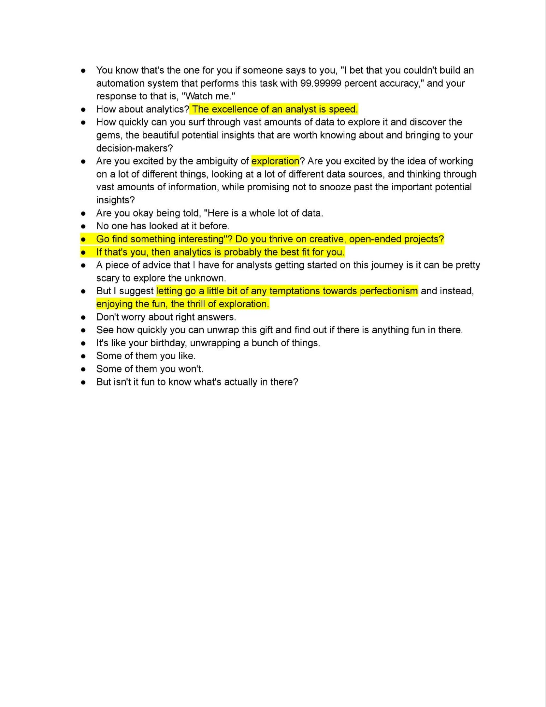
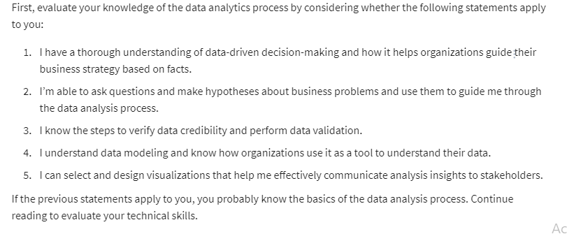
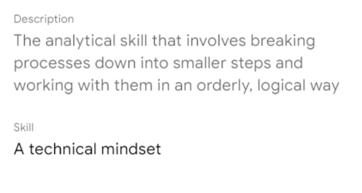
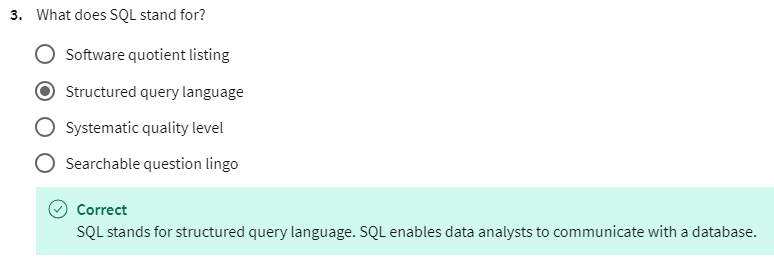
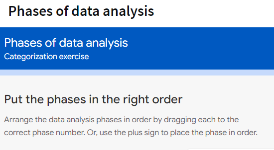
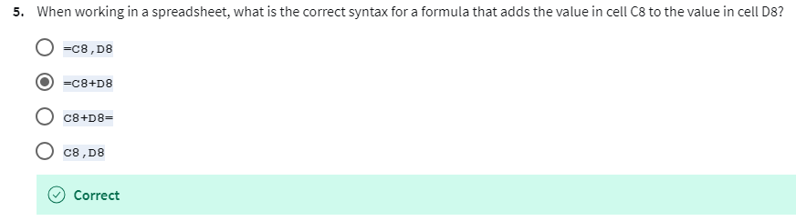
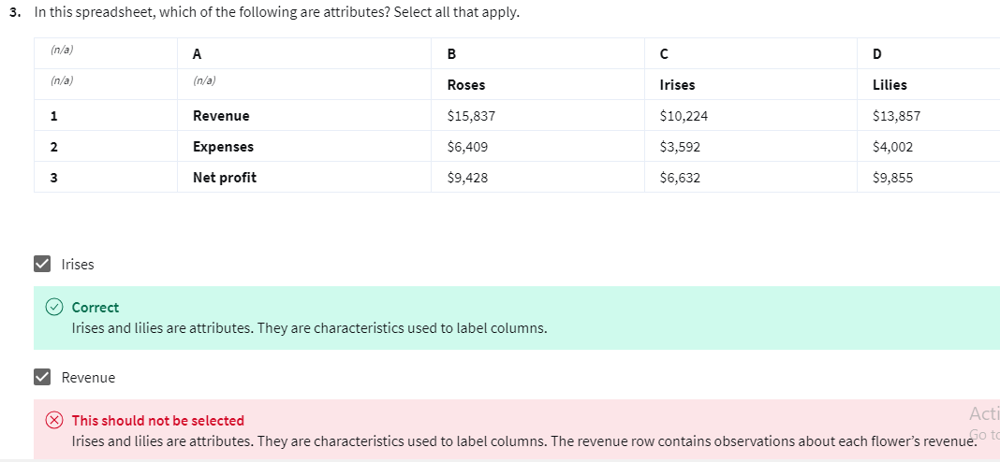
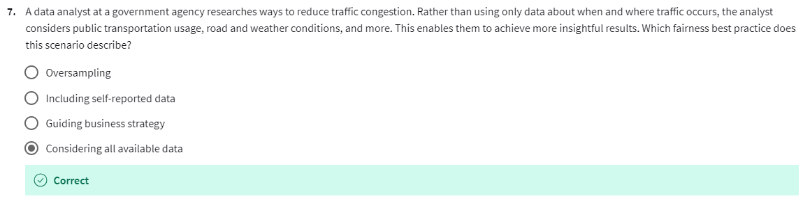

13 videos Total 60 minutes | Summary | Transcript | MCQs |
Welcome to the Google Data Analytics Certificate •9 minutes |
|
|
|
|
|
Introduction to the course •4 minutes |
|
|
|
|
Data analytics in everyday life •4 minutes |
| 
|
|
|
Cassie: Dimensions of data analytics •4 minutes |
|
|  |
|
What is the data ecosystem? •4 minutes |
| - Hello again.
- You've already learned about being a data analyst and how this program will help prepare you for your future career.
- Now, it's time to explore the data ecosystem, find out where data analytics fits into that system, and go over some common misconceptions you might run into in the field of data analytics.
- To put it simply, an ecosystem is a group of elements that interact with one another.
- Ecosystems can be large, like the jungle in a tropical rainforest or the Australian outback.
- Or, tiny, like tadpoles in a puddle, or bacteria on your skin.
- And just like the kangaroos and koala bears in the Australian outback, data lives inside its own ecosystem too.
- Data ecosystems are made up of various elements that interact with one another in order to produce, manage, store, organize, analyze, and share data.
- These elements include hardware and software tools, and the people who use them.
- People like you.
- Data can also be found in something called the cloud.
- The cloud is a place to keep data online, rather than on a computer hard drive.
- So instead of storing data somewhere inside your organization's network, that data is accessed over the internet.
- So the cloud is just a term we use to describe the virtual location.
- The cloud plays a big part in the data ecosystem, and as a data analyst, it's your job to harness the power of that data ecosystem, find the right information, and provide the team with analysis that helps them make smart decisions.
- For example, you could tap into your retail store's database, which is an ecosystem filled with customer names, addresses, previous purchases, and customer reviews.
- As a data analyst, you could use this information to predict what these customers will buy in the future, and make sure the store has the products and stock when they're needed.
- As another example, let's think about a data ecosystem used by a human resources department.
- This ecosystem would include information like postings from job websites, stats on the current labor market, employment rates, and social media data on prospective employees.
- A data analyst could use this information to help their team recruit new workers and improve employee engagement and retention rates.
- But data ecosystems aren't just for stores and offices.
- They work on farms, too.
- Agricultural companies regularly use data ecosystems that include information including geological patterns in weather movements.
- Data analysts can use this data to help farmers predict crop yields.
- Some data analysts are even using data ecosystems to save real environmental ecosystems.
- At the Scripps Institution of Oceanography, coral reefs all over the world are monitored digitally, so they can see how organisms change over time, track their growth, and measure any increases or declines in individual colonies.
- The possibilities are endless.
- Okay, now let's talk about some common misconceptions you might come across.
- First is the difference between data scientists and data analysts.
- It's easy to confuse the two, but what they do is actually very different.
- Data science is defined as creating new ways of modeling and understanding the unknown by using raw data.
- Here's a good way to think about it.
- Data scientists create new questions using data, while analysts find answers to existing questions by creating insights from data sources.
- There are also many words and phrases you'll hear throughout this course, that are easy to get mixed up.
- For example, data analysis and data analytics sound the same, but they're actually very different things.
- Let's start with analysis.
- You've already learned that data analysis is the collection, transformation, and organization of data in order to draw conclusions, make predictions, and drive informed decision-making.
- Data analytics in the simplest terms is the science of data.
- It's a very broad concept that encompasses everything from the job of managing and using data to the tools and methods that data workers use each and every day.
- So when you think about data, data analysis and the data ecosystem, it's important to understand that all of these things fit under the data analytics umbrella.
- All right, now that you know a little more about the data ecosystem and the differences between data analysis and data analytics, you're ready to explore how data is used to make effective decisions.
- You'll get to see data-driven decision-making, in action.
| What is a data ecosystem? - A) A group of computers connected by the internet
- B) A group of elements that interact to produce, manage, and analyze data
- C) A virtual space used to store data
- D) A type of ecosystem found in the natural environment
Answer: B) A group of elements that interact to produce, manage, and analyze data
Which of the following is an example of a data ecosystem mentioned in the transcript? - A) Cloud computing
- B) Australian outback
- C) Retail store database
- D) Weather forecasting system
Answer: C) Retail store database
What role does a data analyst play in the data ecosystem? - A) They manage the cloud storage system
- B) They create new ways of modeling data
- C) They analyze data to help teams make informed decisions
- D) They develop hardware tools to collect data
Answer: C) They analyze data to help teams make informed decisions
What is the cloud in the context of the data ecosystem? - A) A physical storage device
- B) A type of computer hardware
- C) A virtual location to store data online
- D) A software used for data analysis
Answer: C) A virtual location to store data online
Which of the following industries was NOT mentioned as using data ecosystems? - A) Retail
- B) Human resources
- C) Agriculture
- D) Aerospace
Answer: D) Aerospace
How are coral reefs monitored using data ecosystems at the Scripps Institution of Oceanography? - A) Using drones to capture real-time images
- B) Using digital monitoring to track changes in coral growth and population
- C) By collecting physical samples of coral
- D) By tracking water temperature
Answer: B) Using digital monitoring to track changes in coral growth and population
What is the main difference between a data scientist and a data analyst? - A) Data scientists focus on creating new questions, while analysts find answers to existing ones
- B) Data scientists manage the cloud, while data analysts work on physical databases
- C) Data scientists are responsible for managing data ecosystems, while analysts collect data
- D) Data scientists analyze data, while analysts create models from raw data
Answer: A) Data scientists focus on creating new questions, while analysts find answers to existing ones
What is the difference between data analysis and data analytics? - A) Data analysis focuses on creating data models, while data analytics focuses on collecting data
- B) Data analysis is about organizing and transforming data, while data analytics is the broader science of managing and using data
- C) Data analysis is used only in scientific research, while data analytics is used in business
- D) Data analysis is a tool for cloud management, while data analytics is for storage
Answer: B) Data analysis is about organizing and transforming data, while data analytics is the broader science of managing and using data
Which of the following best describes the role of data analytics? - A) The collection of data only
- B) The transformation and organization of data
- C) The science of managing and using data, including tools and methods
- D) The development of algorithms to process data
Answer: C) The science of managing and using data, including tools and methods
What is the primary goal of data analysis, according to the transcript? - A) To store data safely in the cloud
- B) To create new ways of managing data
- C) To draw conclusions, make predictions, and drive informed decision-making
- D) To develop hardware for managing data
Answer: C) To draw conclusions, make predictions, and drive informed decision-making
|
How data informs better decisions •4 minutes | How data informs better decisions Sep 25, 2024 This section explores the power of data-driven decision-making in business, highlighting how data analysis reveals insights that lead to effective solutions and strategies. Data-Driven Decision-Making - It involves using facts and data analysis to guide business strategies, enabling organizations to address challenges and make informed choices.
- The process starts by identifying a business need or problem, then leveraging data analysis to uncover trends, patterns, and relationships that inform solutions.
Real-World Applications - Streaming services like Netflix or Spotify use data to understand user preferences, enabling them to suggest relevant content and enhance customer satisfaction.
- The rise of e-commerce demonstrates how data showcasing changing consumer behavior led companies to adopt new business models, like online shopping and direct delivery.
The Human Element in Data Analysis - While data is crucial, combining it with human experience, observation, and intuition is essential for making well-rounded decisions.
- Subject matter experts provide valuable insights by interpreting data analysis results, identifying inconsistencies, and validating choices.
| - So far, you've discovered that there are many different ways data can be used.
- In our everyday lives, we use data when we wear a fitness tracker or read product reviews to make a purchase decision.
- And in business, we use data to learn more about our customers, improve processes, and help employees do their jobs more effectively.
- But this is just the tip of the iceberg.
- One of the most powerful ways you can put data to work is with data-driven decision-making.
- Data-driven decision-making is defined as using facts to guide business strategy.
- Organizations in many different industries are empowered to make better, data-driven decisions by data analysts all the time.
- The first step in data-driven decision-making is figuring out the business need.
- Usually, this is a problem that needs to be solved.
- For example, a problem could be a new company needing to establish better brand recognition, so it can compete with bigger, more well-known competitors.
- Or maybe an organization wants to improve a product and needs to figure out how to source parts from a more sustainable or ethically responsible supplier.
- Or, it could be a business trying to solve the problem of unhappy employees, low levels of engagement, satisfaction and retention.
- Whatever the problem is, once it's defined, a data analyst finds data, analyzes it and uses it to uncover trends, patterns and relationships.
- Sometimes the data-driven strategy will build on what's worked in the past.
- Other times, it can guide a business to branch out in a whole new direction.
- Let's look at a real-world example.
- Think about a music or movie streaming service.
- How do these companies know what people want to watch or listen to, and how do they provide it? Well using data-driven decision-making, they gather information about what their customers are currently listening to, analyze it, then use the insights they've gained to make suggestions for things people will most likely enjoy in the future.
- This keeps customers happy and coming back for more, which in turn means more revenue for the company.
- Another example of data-driven decision-making can be seen in the rise of e-commerce.
- It wasn't long ago that most purchases were made in a physical store, but the data showed people's preferences were changing.
- So a lot of companies created entirely new business models that remove the physical store, and let people shop right from their computers or mobile phones with products delivered right to their doorstep.
- In fact, data-driven decision-making can be so powerful, it can make entire business methods obsolete.
- For example, data helped companies completely move away from corded phones and replace them with mobile phones.
- By ensuring that data is built into every business strategy, data analysts play a critical role in their companies' success, but it's important to note that no matter how valuable data-driven decision-making is, data alone will never be as powerful as data combined with human experience, observation, and sometimes even intuition.
- To get the most out of data-driven decision-making, it's important to include insights from people who are familiar with the business problem.
- These people are called subject matter experts, and they have the ability to look at the results of data analysis and identify any inconsistencies, make sense of gray areas, and eventually validate choices being made.
- Organizations that work this way put data at the heart of every business strategy, but also benefit from the insights of their people.
- It's a win-win.
- As a data analyst, you play a key role in empowering these organizations to make data-driven decisions, which is why it's so important for you to understand how data plays a part in the decision-making process.
| What is data-driven decision-making? - A) Using intuition to guide business strategy
- B) Using facts to guide business strategy
- C) Using past experiences to make decisions
- D) Using random data to make business decisions
Answer: B) Using facts to guide business strategy
What is typically the first step in data-driven decision-making? - A) Analyzing data
- B) Defining the business need or problem
- C) Implementing the solution
- D) Finding a supplier
Answer: B) Defining the business need or problem
In the example of a streaming service, how do they use data-driven decision-making? - A) By asking customers directly what they want to watch
- B) By predicting future customer behavior based on past data
- C) By randomly selecting new content to offer
- D) By providing only new content without considering past preferences
Answer: B) By predicting future customer behavior based on past data
Which of the following industries has significantly changed due to data-driven decision-making? - A) Corded telephone industry
- B) Aerospace engineering
- C) Traditional banking systems
- D) Television broadcasting
Answer: A) Corded telephone industry
What role do subject matter experts play in data-driven decision-making? - A) They provide technical analysis
- B) They offer insights based on their experience with the business problem
- C) They collect and organize data
- D) They replace data analysts
Answer: B) They offer insights based on their experience with the business problem
According to the transcript, what is one potential outcome of data-driven decision-making? - A) Increased reliance on physical stores
- B) The creation of obsolete business methods
- C) Decreased customer satisfaction
- D) A reduction in business innovation
Answer: B) The creation of obsolete business methods
How has e-commerce benefited from data-driven decision-making? - A) By encouraging people to shop only in physical stores
- B) By predicting customers’ preferences and creating online shopping models
- C) By reducing customer engagement
- D) By limiting the use of mobile phones for shopping
Answer: B) By predicting customers’ preferences and creating online shopping models
Why is it important to combine data with human experience and intuition? - A) Data alone is unreliable
- B) Human intuition is more accurate than data
- C) It ensures better decision-making by identifying inconsistencies and gray areas
- D) Data analysis is too time-consuming without human involvement
Answer: C) It ensures better decision-making by identifying inconsistencies and gray areas
What is the primary benefit of involving subject matter experts in data-driven decision-making? - A) They validate the choices being made
- B) They collect data from customers
- C) They create new business models
- D) They eliminate the need for data analysis
Answer: A) They validate the choices being made
What is a key role of a data analyst in the decision-making process? - A) To replace intuition with data
- B) To ensure that data is used to empower organizations and guide decision-making
- C) To create new business problems
- D) To manage customer feedback systems
Answer: B) To ensure that data is used to empower organizations and guide decision-making
|
Discover data skill sets •0 minutes | Discover data skill sets Sep 25, 2024 This introductory lecture lays out the roadmap for your journey to becoming a data analyst! Key Skills and Concepts Covered: - You'll master five essential data analyst skills and explore the core principles of analytical thinking.
- You'll learn how data analysts balance diverse roles and responsibilities in real-world settings.
Unlocking Your Potential: - The course will guide you in leveraging your strategic thinking, technical skills, and data design abilities for success in the field.
- You'll be inspired by real-world examples showcasing the impact of data analysis across various domains.
| - Welcome.
- Now that you have a solid foundation on the basics of data, it's time to focus on some particular skills and characteristics that will be key to your future career as a data analyst.
- We'll begin with five key skills, move on to the characteristics of analytical thinking and then learn how data analysts balance their roles and responsibilities.
- Along the way, you'll also discover how to tap into your own natural abilities for strategy, technical expertise, and data design.
- These are incredibly helpful skills to have and you'll learn how to make them even stronger.
- Finally, you'll be introduced to some fascinating real-world examples of how data is influencing the lives of people all around the world.
- All right. Let's get started.
|
Key data analyst skills •6 minutes | The transcript emphasizes that many people already possess analytical skills without realizing it. These skills are crucial for becoming a data analyst and include five key elements: - Curiosity: The desire to learn and explore new challenges, demonstrated by a natural tendency to seek out knowledge and experiences.
- Understanding context: The ability to recognize how different pieces of information fit together in a particular environment or situation.
- Technical mindset: The skill of breaking down complex tasks into smaller, logical steps and working through them systematically.
- Data design: The organization of information in a clear and logical way, such as categorizing contacts in a phone or designing a database.
- Data strategy: Managing people, processes, and tools effectively to solve problems and make decisions based on data.
The speaker encourages learners to recognize that they already use these skills in daily life, from organizing grocery lists to managing finances. By acknowledging and practicing these abilities, individuals can better prepare themselves for a career in data analysis. | - Earlier, I told you that you already have analytical skills.
- You just might not know it yet.
- When learning new things, sometimes people overlook their own skills, but it's important you take the time to acknowledge them, especially since these skills are going to help you as a data analyst.
- In fact, you're probably more prepared than you think.
- Don't believe me? Well, let me prove it.
- Let's start by defining what I'm talking about here.
- Analytical skills are qualities and characteristics associated with solving problems using facts.
- There are a lot of aspects to analytical skills, but, we'll focus on five essential points.
- They are curiosity, understanding context, having technical mindset, data design, and data strategy.
- Now, you may be thinking, "I don't have these kinds of skills," or "I only have a couple of them."
- But stay with me, and I bet you'll change your mind.
- Let's start with curiosity.
- Curiosity is all about wanting to learn something.
- Curious people usually seek out new challenges and experiences.
- This leads to knowledge.
- The very fact that you're here with me right now demonstrates that you have curiosity.
- That was an easy one.
- Now think about understanding context.
- Context is the condition in which something exists or happens.
- This can be a structure or an environment.
- A simple way of understanding context is by counting to 5.
- One, two, three, four, five.
- All of those numbers exist in the context of one through five.
- But what if a friend of yours said to you, one, two, four, five, three? Well, the three will be out of context.
- Simple, right? But it can be a little tricky.
- There's a good chance that you might not even notice the three being out of context if you aren't paying close attention.
- That's why listening and trying to understand the full picture is critical.
- In your own life, you put things into context all the time.
- For example, let's think about your grocery list.
- If you group together items like flour, sugar, and yeast, that's you adding context to your groceries.
- This saves you time when you're at the baking aisle at the grocery store.
- Let's look at another example.
- Have you ever shuffled a deck of cards and noticed the joker?
- If you're playing a game that doesn't include jokers, identifying that card means you understand it's out of context.
- Remove it, and you're much more likely to play a successful game.
- Now we know you have both curiosity and the ability to understand context.
- Let's move on to the third skill, a technical mindset.
- A technical mindset involves the ability to break things down into smaller steps or pieces and work with them in an orderly and logical way.
- For instance, when paying your bills, you probably already break down the process into smaller steps.
- Maybe you start by sorting them by the date they're due.
- Next, you might add them up and compare that amount to the balance in your bank account.
- This would help you see if you can pay your bills now, or if you should wait until the next paycheck.
- Finally, you'd pay them.
- When you take something that seems like a single task, like paying your bills, and break it into smaller steps with an orderly process, that's using a technical mindset.
- Now let's explore the fourth part of an analytical skill set, data design.
- Data design is how you organize information.
- As a data analyst, design typically has to do with an actual database.
- But, again, the same skills can easily be applied to everyday life.
- For example, think about the way you organize the contacts in your phone.
- That's actually a type of data design.
- Maybe you list them by first name instead of last, or maybe you use email addresses instead of their names.
- What you're really doing is designing a clear, logical list that lets you call or text a contact in a quick and simple way.
- The last, but definitely not least, the fifth and final element of analytical skills is data strategy.
- Data strategy is the management of the people, processes, and tools used in data analysis.
- Let's break that down.
- You manage people by making sure they know how to use the right data to find solutions to the problem you're working on.
- For processes, it's about making sure the path to that solution is clear and accessible.
- For tools, you make sure the right technology is being used for the job.
- Now, you may be doubting my ability to give you an example from real life that demonstrates data strategy.
- But check this out.
- Imagine mowing a lawn.
- Step 1 would be reading the owner's manual for the mower.
- That's making sure the people involved, or you, in this example, know how to use the data available.
- The manual would instruct you to put on protective eyewear and closed-toe shoes.
- Then, it's on to step 2: making the process, the path, clear and accessible.
- This will involve you walking around the lawn, picking up large sticks or rocks that might get in your way.
- Finally, for step 3, you check the lawn mower, your tool, to make sure it has enough gas and oil, and is in working condition, so the lawn can be mowed safely.
- There you have it.
- Now you know the five essential skills of a data analyst.
- Curiosity, understanding context, having a technical mindset, data design, and data strategy.
- I told you that you are already an analytical thinker.
- Now, you can start actively practicing these skills as you move through the rest of this course.
- Curious about what's next? Move on to the next video.
| What are analytical skills associated with? - A) Using gut instinct to make decisions
- B) Solving problems using facts
- C) Creating new forms of data
- D) Memorizing information
Answer: B) Solving problems using facts
Which of the following is NOT one of the five essential analytical skills mentioned? - A) Curiosity
- B) Understanding context
- C) Data modeling
- D) Data strategy
Answer: C) Data modeling
What does curiosity represent in the context of analytical skills? - A) The ability to understand data in context
- B) The desire to learn and seek out new challenges
- C) The management of data tools and processes
- D) The ability to design databases
Answer: B) The desire to learn and seek out new challenges
How does the example of a grocery list illustrate understanding context? - A) Grouping similar items together to make shopping easier
- B) Breaking down large tasks into smaller ones
- C) Using software to organize information
- D) Designing a logical database of items
Answer: A) Grouping similar items together to make shopping easier
Which of the following best describes a technical mindset? - A) Organizing data into meaningful patterns
- B) Breaking down tasks into smaller steps and working in an orderly way
- C) Using intuition to make decisions
- D) Managing people and tools in a project
Answer: B) Breaking down tasks into smaller steps and working in an orderly way
What is an example of data design mentioned in the transcript? - A) Grouping groceries by type
- B) Sorting bills by due date
- C) Organizing contacts in your phone
- D) Reading the lawn mower manual
Answer: C) Organizing contacts in your phone
What does data strategy refer to? - A) Creating a data visualization
- B) Managing people, processes, and tools in data analysis
- C) Designing a database for organizing data
- D) Breaking down complex tasks into smaller steps
Answer: B) Managing people, processes, and tools in data analysis
In the lawn mowing example, what represents managing the process? - A) Reading the owner's manual
- B) Walking around the lawn to remove obstacles
- C) Checking the mower’s gas and oil levels
- D) Wearing protective gear
Answer: B) Walking around the lawn to remove obstacles
How does the example of paying bills illustrate a technical mindset? - A) Organizing bills into categories
- B) Breaking down the task of paying bills into smaller steps, such as sorting by due date
- C) Comparing bank account balance to the total bills
- D) Paying all bills at once
Answer: B) Breaking down the task of paying bills into smaller steps, such as sorting by due date
What is the overall message about analytical skills in the transcript? - A) Analytical skills are difficult to acquire and master
- B) Most people already possess analytical skills, even if they don’t realize it
- C) Analytical skills are only relevant for data scientists
- D) Analytical skills are based entirely on intuition
Answer: B) Most people already possess analytical skills, even if they don’t realize it
|
All about thinking analytically •5 minutes | All about thinking analytically Sep 25, 2024 This section of the course introduces the concept of analytical thinking and its importance in data analysis. Analytical Thinking Skills - Analytical thinking involves approaching problems using data in a structured, step-by-step process.
- It's about breaking down complex issues into smaller, manageable parts to find solutions.
Key Aspects of Analytical Thinking - Visualization helps data analysts understand and communicate information more effectively using graphs, maps, and other visual aids.
- Strategic thinking is crucial for data analysts to stay focused on using data to achieve specific goals.
Thinking about Correlations - Identifying correlations in data helps analysts uncover potential relationships between different factors.
- However, it's important to remember that correlation does not equal causation, meaning that just because two things are related doesn't mean one causes the other.
| - Now that you know the five essential skills of a data analyst, you're ready to learn more about what it means to think analytically.
- People don't often think about thinking.
- Thinking is second nature to us.
- It just happens automatically, but there are actually many different ways to think.
- Some people think creatively, some think critically, and some people think in abstract ways.
- Let's talk about analytical thinking.
- Analytical thinking involves identifying and defining a problem and then solving it by using data in an organized, step-by-step manner.
- As data analysts, how do we think analytically? Well, to answer that question, we will now talk about a second set of five.
- The five key aspects to analytical thinking.
- They are visualization, strategy, problem-orientation, correlation, and finally, big-picture and detail-oriented thinking.
- Let's start with visualization.
- In data analytics, visualization is the graphical representation of information.
- Some examples include graphs, maps, or other design elements.
- Visualization is important because visuals can help data analysts understand and explain information more effectively.
- Think about it like this.
- If you are trying to explain the Grand Canyon to someone, using words would be much more challenging than showing them a picture.
- A visualization of the Grand Canyon would help you make your point much quicker.
- Now let's talk about the second part of analytical thinking, being strategic.
- With so much data available, having a strategic mindset is key to staying focused and on track.
- Strategizing helps data analysts see what they want to achieve with the data and how they can get there.
- Strategy also helps improve the quality and usefulness of the data we collect.
- By strategizing, we know all our data is valuable and can help us accomplish our goals.
- Next step on the analytical thinking checklist: being problem-oriented.
- Data analysts use a problem- oriented approach in order to identify, describe, and solve problems.
- It's all about keeping the problem top of mind throughout the entire project.
- For example, say a data analyst is told about the problem of a warehouse constantly running out of supplies.
- They would move forward with different strategies and processes.
- But the number one goal would always be solving the problem of keeping inventory on the shelves.
- Data analysts also ask a lot of questions.
- This helps improve communication and saves time while working on a solution.
- An example of that would be surveying customers about their experiences using a product and building insights from those questions to improve their product.
- This leads us to the fourth quality of analytical thinking: being able to identify a correlation between two or more pieces of data.
- A correlation is like a relationship.
- You can find all kinds of correlations in data.
- Maybe it's the relationship between the length of your hair and the amount of shampoo you need.
- Or maybe you notice a correlation between a rainier season leading to a high number of umbrellas being sold.
- But as you start identifying correlations in data, there's one thing you always want to keep in mind: Correlation does not equal causation.
- In other words, just because two pieces of data are both trending in the same direction, that doesn't necessarily mean they are all related.
- We'll learn more about that later.
- Now the final piece of the analytical thinking puzzle: big-picture thinking.
- This means being able to see the big picture as well as the details.
- A jigsaw puzzle is a great way to think about this.
- Big-picture thinking is like looking at a complete puzzle. You can enjoy the whole picture without getting stuck on every tiny piece that went into making it.
- If you only focus on individual pieces, you wouldn't be able to see past that, which is why big-picture thinking is so important.
- It helps you zoom out and see possibilities and opportunities.
- This leads to exciting new ideas or innovations.
- On the flip side, detail-oriented thinking is all about figuring out all of the aspects that will help you execute a plan.
- In other words, the pieces that make up your puzzle.
- There are all kinds of problems in the business world that can benefit from employees who have both a big-picture and a detail-oriented way of thinking.
- Most of us are naturally better at one or the other.
- But you can always develop the skills to fit both pieces together.
- Now that you know the five aspects of analytical thinking, visualization, strategy, problem-orientation, correlation, and big-picture and detail-oriented thinking, you can put them to work for you when you're working with data.
- As you continue through this course, you'll learn how.
| What does analytical thinking involve? - A) Creative problem-solving
- B) Solving problems using data in an organized, step-by-step manner
- C) Abstract and critical thinking
- D) Guessing solutions based on intuition
Answer: B) Solving problems using data in an organized, step-by-step manner
Which of the following is NOT one of the five key aspects of analytical thinking mentioned in the transcript? - A) Visualization
- B) Strategy
- C) Data collection
- D) Correlation
Answer: C) Data collection
Why is visualization important in data analytics? - A) It makes it easier to organize data
- B) It helps data analysts understand and explain information more effectively
- C) It reduces the amount of data to analyze
- D) It is the only way to find data patterns
Answer: B) It helps data analysts understand and explain information more effectively
What is the role of strategy in analytical thinking? - A) It helps identify errors in the data
- B) It allows data analysts to stay focused and improve the quality of the data collected
- C) It removes the need for data cleaning
- D) It automates the data analysis process
Answer: B) It allows data analysts to stay focused and improve the quality of the data collected
What does it mean to be problem-oriented as a data analyst? - A) Using creative thinking to solve any issue
- B) Identifying, describing, and solving problems while keeping the problem top of mind
- C) Focusing on one small issue at a time
- D) Collecting as much data as possible
Answer: B) Identifying, describing, and solving problems while keeping the problem top of mind
What is an example of correlation mentioned in the transcript? - A) The relationship between the number of employees and customer satisfaction
- B) The relationship between a rainier season and an increase in umbrella sales
- C) The relationship between advertising costs and sales
- D) The relationship between hair color and food preferences
Answer: B) The relationship between a rainier season and an increase in umbrella sales
What is the key idea behind the phrase "correlation does not equal causation"? - A) Two trends that move together are always related
- B) Just because two pieces of data trend in the same direction, it doesn't mean one causes the other
- C) Data trends are always caused by another variable
- D) Correlations can always be proven
Answer: B) Just because two pieces of data trend in the same direction, it doesn't mean one causes the other
What is big-picture thinking in the context of analytical thinking? - A) Focusing only on individual data points
- B) Ignoring small details to understand the overall situation
- C) Seeing both the overall picture and the smaller details
- D) Breaking down data into smaller steps
Answer: C) Seeing both the overall picture and the smaller details
Which of the following best describes detail-oriented thinking? - A) Focusing on solving the problem without collecting data
- B) Identifying the smaller steps and details necessary to execute a plan
- C) Ignoring small details to speed up data analysis
- D) Using strategy to eliminate unnecessary data
Answer: B) Identifying the smaller steps and details necessary to execute a plan
What is the overall goal of developing both big-picture and detail-oriented thinking in business? - A) To focus solely on high-level goals
- B) To see both opportunities and execute plans effectively
- C) To eliminate complex data from decision-making
- D) To reduce the time spent on data analysis
Answer: B) To see both opportunities and execute plans effectively
|
Explore core analytical skills •4 minutes | Explore core analytical skills Sep 25, 2024 This section dives into how data analysts think and the importance of asking the right questions in data analysis. Let's break down some key takeaways: Different Ways of Thinking - You can develop a versatile thinking process by incorporating analytical, creative, and critical thinking into your approach.
- Thinking diversely helps you approach problems from multiple angles, leading to more innovative solutions in data analysis.
Key Questions Data Analysts Ask - "What is the root cause of a problem?" This question helps identify the underlying reason for an issue, often addressed using the "Five Whys" technique to uncover hidden causes.
- "Where are the gaps in our process?" This question prompts the use of gap analysis, a method for comparing the current state of a process to the desired state and identifying areas for improvement.
Impact of Analytical Thinking - Asking the right questions is crucial in data analysis as it guides businesses toward well-informed decisions and successful outcomes.
- By mastering analytical thinking, you can significantly contribute to a business's overall success.
| - Let's recap what we've learned about analytical thinking so far.
- The 5 key aspects are visualization, strategy, problem-orientation, correlation, and using big-picture and detail-oriented thinking.
- We've seen how you already use them in your everyday life.
- We also talked about how different people naturally use certain types of thinking, but that you can absolutely grow and develop the skills that might not come as easily to you.
- This means you can become a versatile thinker, which is a very important part of data analysis.
- You might naturally be an analytical thinker, but you can learn to think creatively and critically, and be great at all three.
- The more ways you can think, the easier it is to think outside the box and come up with fresh ideas.
- But why is it important to think in different ways? Well because in data analysis, solutions are almost never right in front of you.
- You need to think critically to find out the right questions to ask.
- But you also need to think creatively to get new and unexpected answers.
- Let's talk about some of the questions data analysts ask when they're on the hunt for a solution.
- Here's one that will come up a lot: What is the root cause of a problem? A root cause is the reason why a problem occurs.
- If we can identify and get rid of a root cause, we can prevent that problem from happening again.
- A simple way to wrap your head around root causes is with the process called the Five Whys.
- In the Five Whys you ask "why" five times to reveal the root cause.
- The fifth and final answer should give you some useful and sometimes surprising insights.
- Here's an example of the Five Whys in action.
- Let's say you wanted to make a blueberry pie but couldn't find any blueberries.
- You've been trying to solve a problem by asking, why can't I make a blueberry pie? The answer will be, there are no blueberries at the store.
- There's Why Number 1.
- You then ask, why were there no blueberries at the store? Then you discover that the blueberry bushes don't have enough fruit this season.
- That's Why Number 2.
- Next, you'd ask, why was there not enough fruit? This would lead to the fact that birds were eating all the berries.
- Why Number 3, asked and answered.
- Now we get to Why Number 4.
- Ask why a fourth time and the answer would be that, although the birds normally prefer mulberries and don't eat blueberries, the mulberry bush didn't produce fruit this season, so the birds are eating blueberries instead.
- Finally, we get to Why Number 5, which should reveal the root cause.
- A late frost damaged the mulberry bushes, so it didn't produce any fruit.
- You can't make a blueberry pie because of the late frost months ago.
- See how the Five Whys can reveal some very surprising root causes.
- This is a great trick to know, and it can be a very helpful process in data analysis.
- Another question commonly asked by data analysts is, where are the gaps in our process? For this, many people will use something called gap analysis.
- Gap analysis lets you examine and evaluate how a process works currently in order to get where you want to be in the future.
- Businesses conduct gap analysis to do all kinds of things, such as improve a product or become more efficient.
- The general approach to gap analysis is understanding where you are now compared to where you want to be.
- Then you can identify the gaps that exist between the current and future state and determine how to bridge them.
- A third question that data analysts ask a lot is, what did we not consider before? This is a great way to think about what information or procedure might be missing from a process, so you can identify ways to make better decisions and strategies moving forward.
- These are just a few examples of the kinds of questions data analysts use at their jobs every day.
- As you begin your career, I'm sure you'll think of a whole lot more.
- The way data analysts think and ask questions plays a big part in how businesses make decisions.
- That's why analytical thinking and understanding how to ask the right questions can have such a huge impact on the overall success of a business.
- Later, we'll talk more about how data-driven decisions can lead to successful outcomes.
| What are the five key aspects of analytical thinking mentioned in the transcript? - A) Critical thinking, problem-solving, creativity, analysis, and strategy
- B) Visualization, strategy, problem-orientation, correlation, and big-picture and detail-oriented thinking
- C) Data collection, creativity, problem-solving, logic, and detail-oriented thinking
- D) Critical thinking, big-picture thinking, analysis, communication, and strategy
Answer: B) Visualization, strategy, problem-orientation, correlation, and big-picture and detail-oriented thinking
What is the importance of being able to think in different ways as a data analyst? - A) It helps solve technical problems faster
- B) It allows analysts to ask the right questions and come up with unexpected answers
- C) It eliminates the need for data analysis tools
- D) It allows data analysts to avoid critical thinking
Answer: B) It allows analysts to ask the right questions and come up with unexpected answers
What is the root cause of a problem, according to the transcript? - A) The symptoms of a problem
- B) The primary reason why a problem occurs
- C) The final solution to the problem
- D) The effects of a problem
Answer: B) The primary reason why a problem occurs
What method can be used to uncover the root cause of a problem? - A) Correlation analysis
- B) Five Whys
- C) Data visualization
- D) Gap analysis
Answer: B) Five Whys
In the Five Whys example, what was the root cause of not being able to make a blueberry pie? - A) No blueberries at the store
- B) Birds eating the blueberries
- C) A late frost damaging the mulberry bushes
- D) A shortage of blueberry bushes
Answer: C) A late frost damaging the mulberry bushes
What does gap analysis help with in a business setting? - A) Identifying relationships between different data sets
- B) Evaluating a current process to determine how to improve it in the future
- C) Visualizing business performance over time
- D) Collecting missing data
Answer: B) Evaluating a current process to determine how to improve it in the future
Which of the following is a common question data analysts ask to improve decision-making? - A) How can we avoid collecting data?
- B) What did we not consider before?
- C) What is the quickest solution to the problem?
- D) Why is data not important in this scenario?
Answer: B) What did we not consider before?
Why is asking the right questions important for data analysts? - A) It helps avoid data collection
- B) It has a significant impact on business decisions and success
- C) It eliminates the need for data analysis tools
- D) It simplifies complex data sets
Answer: B) It has a significant impact on business decisions and success
Which question would be part of a gap analysis? - A) How can we visualize the data?
- B) What caused the problem?
- C) Where are we now compared to where we want to be?
- D) What did we not consider before?
Answer: C) Where are we now compared to where we want to be?
What can the Five Whys process reveal about a problem? - A) It identifies gaps in data collection
- B) It uncovers the root cause of the problem
- C) It provides multiple solutions to the problem
- D) It simplifies data visualization
Answer: B) It uncovers the root cause of the problem
|
Data drives successful outcomes •4 minutes | Data drives successful outcomes Sep 25, 2024 This video builds on the concept of data-driven decision-making and explains how it leads to better outcomes in business and life. It also shows how the five essential analytical skills discussed previously connect to data-driven decision-making. Data-Driven Decision-Making - Data-driven decision-making involves using facts to guide business strategy.
- Data analysts can use data to gain valuable insights, verify assumptions, understand opportunities and challenges, support objectives, and make plans.
Analytical Skills and Data-Driven Decision-Making - Curiosity and context help analysts identify patterns and relationships in data, leading to predictions, research, and conclusions.
- A technical mindset encourages analysts to go beyond gut feelings and use facts, analysis, and insights for informed decisions.
Benefits of Data-Driven Decision-Making - Data design helps organize data logically, making it easier for analysts to access, understand, and utilize the information effectively.
- Data strategy provides a high-level view of the path needed to achieve goals, incorporating people, processes, and tools for problem-solving.
Keep in mind that this video uses hypothetical examples to illustrate these concepts. In the next video, we'll explore real-world examples of data-driven decision-making in action. Feel free to ask if you have any questions! | - In an earlier video, you learned about five essential analytical skills.
- As a reminder, they're curiosity, understanding context, having a technical mindset, data design, and data strategy.
- In the next couple of videos, we'll explore how these abilities all become part of data-driven decision-making.
- But first, let's look at the concept of data-driven decision-making and why it's more likely to lead to successful outcomes.
- You might remember that data-driven decision-making involved using facts to guide business strategy.
- Data analysts can tap into the power of data to do all kinds of amazing things.
- With data, they can gain valuable insights, verify their theories or assumptions, better understand opportunities and challenges, support an objective, help make a plan, and much more.
- In business, data-driven decision-making can improve the results in a lot of different ways.
- For example, say a dairy farmer wants to start making and selling ice cream.
- They could guess what flavors customers would like, but there's a better way to get the information.
- The farmer could survey people and ask them what flavors they prefer.
- This gives the farmer the data they need to pick ice cream flavors people will enjoy.
- Here's another example.
- Let's say the president of an organization is curious about what perks employees value most.
- She asked the human resources director who says people value casual dress code.
- It's a gut feeling, but the HR director backs it up with the fact that he sees a lot of people wearing jeans and t-shirts.
- But what if this company were to use a more structured employee feedback process, such as a survey?
- It might reveal that employees actually enjoy free public transportation cards the most.
- The human resources director just didn't realize that because he drives to work.
- These are just some of the benefits of data-driven decision-making.
- It gives you greater confidence about your choice and your abilities to address business challenges.
- It helps you become more proactive when an opportunity presents itself, and it saves you time and effort when working towards a goal.
- Now let's learn more about how these five skills help you tap into all the potential of data-driven decision-making.
- First, think about curiosity and context.
- The more you learn about the power of data, the more curious you're likely to become.
- You'll start to see patterns and relationships in everyday life, whether you're reading the news, watching a movie, or going to an appointment across town.
- The analysts take their thinking a step further by using context to make predictions, research answers, and eventually draw conclusions about what they've discovered.
- This natural process is a great first step in becoming more data-driven.
- Having a technical mindset comes next.
- Everyone has instincts, or as in the case of our human resources director example, gut feelings.
- Data analysts are no different.
- They have gut feelings too.
- But they've trained themselves to build on those feelings and use a more technical approach to explore them.
- They do this by always seeking out the facts, putting them to work through analysis, and using the insights they gain to make informed decisions.
- Next, we come to data design, which has a strong connection to data-driven decision-making.
- To put it simply, designing your data so that it is organized in a logical way makes it easy for data analysts to access, understand, and make the most of available information.
- And it's important to keep in mind that data design doesn't just apply to databases.
- This kind of thinking can work with all sorts of real-life situations too.
- The basic idea is this.
- If you make decisions that are informed by data, you are more likely to make more informed and effective decisions.
- The final ability is data strategy, which incorporates the people, processes, and tools used to solve a problem.
- This is a big one to remember because data strategy gives you a high-level view of the path you need to take to achieve your goals.
- Also, data-driven decision-making isn't a one-person job.
- It's much more likely to be successful if everyone is on board and on the same page, so it's important to make sure specific procedures are in place and that your technology being used is aligned with your data-driven strategy.
- Now you know how these five essential analytical skills work towards making better, data-driven decisions.
- So far, many of the examples you've heard are hypothetical.
- That means they could be true in theory, but aren't specific real-world cases.
- Next, we'll look at some real examples.
- I can't wait to share how data analysts put data to work for amazing results.
| What is data-driven decision-making? - A) Making decisions based on intuition and experience
- B) Using facts to guide business strategy
- C) Collecting data for future analysis without making decisions
- D) Relying on assumptions without verifying them
Answer: B) Using facts to guide business strategy
Which of the following is NOT one of the five essential analytical skills mentioned in the transcript? - A) Curiosity
- B) Creativity
- C) Data design
- D) Data strategy
Answer: B) Creativity
In the example of the dairy farmer, how can data-driven decision-making help choose the right ice cream flavors? - A) By guessing customer preferences
- B) By surveying customers to find out their flavor preferences
- C) By using the farmer’s personal favorite flavors
- D) By randomly selecting flavors to sell
Answer: B) By surveying customers to find out their flavor preferences
What might a more structured feedback process, such as a survey, reveal in the example of employee perks? - A) Employees value casual dress code the most
- B) Employees value free public transportation cards the most
- C) Employees don’t care about any perks
- D) Employees want more vacation days
Answer: B) Employees value free public transportation cards the most
How does having a technical mindset help data analysts? - A) It allows them to rely solely on gut feelings
- B) It helps them build on their instincts by seeking out facts and analyzing data
- C) It prevents them from making decisions based on analysis
- D) It enables them to avoid using data altogether
Answer: B) It helps them build on their instincts by seeking out facts and analyzing data
Why is data design important in data-driven decision-making? - A) It allows data to be organized in a logical way for easy access and understanding
- B) It helps avoid making decisions based on data
- C) It ensures data is collected randomly
- D) It replaces the need for analysis
Answer: A) It allows data to be organized in a logical way for easy access and understanding
What does data strategy involve in the context of data-driven decision-making? - A) Only organizing the data
- B) The people, processes, and tools used to solve a problem
- C) Making decisions based solely on intuition
- D) Avoiding the use of technology in decision-making
Answer: B) The people, processes, and tools used to solve a problem
Why is it important for everyone to be on the same page during data-driven decision-making? - A) To prevent delays in decision-making
- B) To ensure everyone understands the procedures and technology involved
- C) To avoid the use of data in business decisions
- D) To limit the amount of data being used
Answer: B) To ensure everyone understands the procedures and technology involved
What role does curiosity play in data-driven decision-making? - A) It helps analysts identify patterns and relationships in data
- B) It prevents analysts from being objective
- C) It discourages data analysis
- D) It focuses only on qualitative data
Answer: A) It helps analysts identify patterns and relationships in data
What is a key takeaway about data-driven decision-making from the transcript? - A) It is based solely on intuition and gut feelings
- B) It is more likely to lead to successful outcomes by using facts and analysis
- C) It eliminates the need for collaboration within a team
- D) It is only useful for theoretical cases
Answer: B) It is more likely to lead to successful outcomes by using facts and analysis
|
Witness data magic •5 minutes | Witness data magic Sep 25, 2024 This video highlights the power of data-driven decision-making through real-world case studies, emphasizing its impact across various fields. Data-Driven Decisions at Google - Google's HR department used data analysis to determine the value of managers, ultimately discovering that teams with strong managers showed higher satisfaction and productivity.
- By analyzing performance reviews, employee surveys, and conducting targeted interviews, Google identified key behaviors of successful managers, leading to improved management evaluation processes.
Data's Impact on Nonprofits - Data analysts studied how journalists could better support nonprofits, analyzing article topics, engagement metrics, and audience behavior.
- This research provided insights into how nonprofits and journalists can collaborate effectively to raise awareness and drive positive change.
| - In this video, I'm going to share some case studies that highlight the incredible work data analysts do.
- Each of these scenarios shows off the power of data-driven decision-making in unexpected ways.
- The first story is about Google.
- As I mentioned a little while back, here at Google, our mission is to organize the world's information and make it universally accessible and useful.
- All of our products, from idea to development to launch, are built on data and data-driven decision-making.
- There are tons of examples here at Google of people using facts to create business strategy.
- But one of the most famous ones has to do with Google's human resources.
- Here's how it went.
- The HR department wanted to know if there was value in having managers.
- Were their contributions worthwhile?
- Or should everyone just be an individual contributor? To answer that question, Google's people analytics team looked at past performance reviews and employee surveys.
- The data they found was plotted on a graph because as you've learned, visuals are extremely helpful when trying to understand a problem or concept.
- The graph revealed that Googlers had positive feelings about their managers, but the data was pretty general and the team wanted to learn more.
- So they dug deeper and split the data into quartiles.
- A quartile divides data points into four equal parts or quarters.
- Here's where the really cool stuff started happening.
- The data analysts discovered that there was a big difference between the very top and the very bottom quartiles.
- As it turned out, the teams with the best managers were significantly happier, more productive, and more likely to want to keep working at Google.
- This confirmed that managers were valued and make a big difference.
- Therefore, the idea of having only individual contributors was not implemented.
- But there was still more work to do.
- Just knowing that great managers create great results doesn't lead to actionable insights.
- You have to identify what exactly makes a great manager, so the team took two additional steps to collect more data.
- First, they launched an awards program where employees could nominate their favorite managers.
- For every submission you had to provide examples or data about what makes that manager great.
- The second step involved interviewing managers who were graphed on the top and bottom quartiles.
- This helped the analytics team see the differences between successful and less successful management behaviors.
- The best behaviors were identified as were the most common reasons for a manager needing improvement.
- The final step was sharing these insights and putting a procedure in place for evaluating managers with these qualities in mind.
- This data-driven decision continues to create an exceptional company culture for my colleagues and me.
- Thanks, data.
- Another interesting example comes from the nonprofit sector.
- Nonprofits are organizations dedicated to advancing a social cause or advocating for a particular effort, such as food security, education or the arts.
- In this case, data analysts researched how journalists can make a more meaningful impact for the nonprofits they would write about.
- Because journalists write for newspapers, magazines, and other news outlets, they can help nonprofits reach readers like you and me, who then take action to help nonprofits reach their goals.
- For instance, say you read about the problem of climate change in an online magazine.
- If the article is effective, you'll learn more about the cause and might even be compelled to make greener choices in your day-to-day life, volunteer for a nonprofit, or make a donation.
- That's an example of the journalist's work bringing about awareness, understanding, and engagement.
- So, back to the story.
- The data analysts used a tracker to monitor story topics, clicks, web traffic, comments, shares and more.
- Then they evaluated the information to make recommendations for how the journalists could do their jobs even better.
- In the end, they came up with some great ideas for how nonprofits and journalists can motivate people everywhere to work together and make the world a better place.
- There's really no end to what you can do as a data analyst.
- As you progress through this program, you'll discover even more possibilities.
- Great job following along with the topics of these past few videos.
- You learned all about analytical skills and the five key characteristics of data analysts.
- You probably even learned that you are a pro at most of these already.
- Next, you discovered what it means to think analytically and the specific skills data analysts develop to help them do it.
- You explored tools and processes that enable data analysts to pinpoint a problem and ask the right questions in order to solve them.
- Finally, some real-world stories helped illustrate why data-driven decision-making is usually more successful than other methods.
- You're building a wonderful foundation for your career as a data analyst.
- With every video, your skills will continue to expand, and your understanding of key data analytics concepts will only get stronger.
- Soon, you'll have a chance to test out everything you've learned.
- This is a really useful opportunity to check your understanding of all the concepts we've discussed, and if you're ever unsure about a question, you can review the videos and readings to find the answer.
- This is another awesome way to practice collecting data.
- Keep up the great work.
| What was the key question Google’s HR department wanted to answer? - A) Should managers be promoted based on seniority?
- B) Is there value in having managers, or should everyone be individual contributors?
- C) Should Google reduce the number of managers?
- D) How can managers improve employee satisfaction?
Answer: B) Is there value in having managers, or should everyone be individual contributors?
What data did Google’s people analytics team use to evaluate the value of managers? - A) Sales reports and customer feedback
- B) Performance reviews and employee surveys
- C) Financial reports and project timelines
- D) Marketing data and employee productivity
Answer: B) Performance reviews and employee surveys
What did splitting the data into quartiles reveal about managers at Google? - A) All managers performed similarly
- B) Managers had no impact on employee satisfaction
- C) Teams with the best managers were happier and more productive
- D) Employees wanted fewer managers
Answer: C) Teams with the best managers were happier and more productive
What additional steps did Google take to identify what makes a great manager? - A) They eliminated managers who scored in the bottom quartile
- B) They launched an awards program and interviewed top and bottom quartile managers
- C) They reorganized their management structure
- D) They focused on promoting only senior managers
Answer: B) They launched an awards program and interviewed top and bottom quartile managers
What sector is highlighted in the second case study, where data analysts helped journalists? - A) Corporate
- B) Nonprofit
- C) Education
- D) Government
Answer: B) Nonprofit
In the nonprofit case study, what was the goal of the data analysis for journalists? - A) To improve newspaper sales
- B) To help journalists make a more meaningful impact for nonprofits
- C) To reduce the number of news outlets covering nonprofits
- D) To find ways to increase nonprofit donations
Answer: B) To help journalists make a more meaningful impact for nonprofits
How did data analysts track the success of journalists' articles about nonprofits? - A) By tracking story topics, clicks, web traffic, comments, and shares
- B) By conducting surveys with readers
- C) By monitoring nonprofit financial reports
- D) By analyzing television news coverage
Answer: A) By tracking story topics, clicks, web traffic, comments, and shares
What did Google’s analysis of managers ultimately lead to? - A) The elimination of all managers
- B) The identification of key qualities that make a great manager
- C) The promotion of more junior employees to managerial roles
- D) The creation of a new performance review system for all employees
Answer: B) The identification of key qualities that make a great manager
What is one of the benefits of data-driven decision-making according to the transcript? - A) It guarantees that all problems will be solved quickly
- B) It is more likely to lead to successful outcomes
- C) It allows businesses to avoid using data in certain situations
- D) It eliminates the need for data analysts
Answer: B) It is more likely to lead to successful outcomes
What does the speaker encourage viewers to do next in their learning journey? - A) Re-watch all previous videos to memorize the content
- B) Test their understanding of the concepts learned so far
- C) Skip ahead to more advanced topics
- D) Focus on memorizing all data analytics terms
Answer: B) Test their understanding of the concepts learned so far
|
What to expect moving forward •1 minute | What to expect moving forward Sep 25, 2024 This message is super encouraging and wants to remind you that you're making great progress in the course! It highlights the importance of the skills you're building and how they'll benefit you. Let's break down the key points: You're Building a Strong Foundation - You've started absorbing information and analyzing it, which is exactly what data analysis is all about!
- This foundation will be key as you move through the rest of the program.
Getting Ready for Your Assessment - The upcoming graded assessment is designed to help you check your understanding and gain confidence.
- Remember, it's open-book, so don't hesitate to refer back to the course materials if needed.
Looking Ahead to Your Future Success - Once you've completed the courses, you'll be creating your own case study and will be equipped to impress potential employers with your data analytics skills.
| - We've covered a lot.
- I'm sure you have so much to think about already.
- That's a good thing.
- It means you've started collecting data and you're doing your own personal analysis.
- That's what it's all about.
- You've built a great base already.
- As this course continues, your knowledge and data analysis skills will continue to grow.
- Once you've established a solid foundation, you'll apply what you've learned to the rest of the program.
- The data analysis process will help provide a framework for everything you do.
- Soon, you'll take your first graded assessment.
- It's a great way to check your understanding of the concepts and build confidence in your knowledge.
- Everyone learns at different speeds.
- So take your time.
- Get familiar with the concepts.
- As soon as you feel ready, you can go ahead and get started.
- Keep in mind, if at any point, you're not sure about a question, you can always review the videos and readings to remind yourself of the answer.
- We're all about open-book tests here.
- Once you've passed, you'll be all set to move on.
- You've got this.
- Before you know it, you'll be done with al of the courses, and you'll be ready to create your own case study.
- Then, if it's what you want to do, you'll start your job search, equipped with the tools and skills that will wow any company you talk to.
- I can't wait to see where you go with data analytics.
- For now though, give yourself a pat on the back for a job well done.
- See you soon.
| What does the speaker encourage you to do as the course continues? - A) Memorize all the concepts
- B) Start creating your own case study right away
- C) Apply what you’ve learned to the rest of the program
- D) Skip ahead to the final assessment
Answer: C) Apply what you’ve learned to the rest of the program
What framework will guide you throughout the program? - A) Open-book tests
- B) Data collection methods
- C) The data analysis process
- D) Case study creation
Answer: C) The data analysis process
What is the purpose of the first graded assessment? - A) To test your speed at answering questions
- B) To check your understanding and build confidence
- C) To finalize your knowledge of the entire course
- D) To help you start your job search
Answer: B) To check your understanding and build confidence
What should you do if you're unsure about a question on the assessment? - A) Skip the question and move on
- B) Use the open-book format to review videos and readings
- C) Ask the instructor for the answer
- D) Restart the assessment
Answer: B) Use the open-book format to review videos and readings
What is one of the main goals for students after completing all the courses? - A) Create a personal case study
- B) Memorize every detail about data analysis
- C) Build a website
- D) Publish a research paper
Answer: A) Create a personal case study
What does the speaker encourage you to do once you’ve passed the first graded assessment? - A) Review all previous lessons
- B) Immediately start the next course
- C) Feel confident to move on to the next part of the program
- D) Repeat the test to improve your score
Answer: C) Feel confident to move on to the next part of the program
What mindset does the speaker suggest you should have while progressing through the course? - A) Learn everything as quickly as possible
- B) Take your time and learn at your own speed
- C) Focus only on graded assessments
- D) Finish the course in one week
Answer: B) Take your time and learn at your own speed
What does the speaker believe you’ll be ready to do once you complete all the courses? - A) Start working on advanced data models
- B) Build your own company
- C) Start your job search with the tools and skills learned
- D) Write a book on data analytics
Answer: C) Start your job search with the tools and skills learned
How does the speaker suggest you feel about your progress so far? - A) Pat yourself on the back for a job well done
- B) Focus on improving your mistakes
- C) Take a break from studying
- D) Ask for feedback from your peers
Answer: A) Pat yourself on the back for a job well done
What is the speaker's tone regarding your future with data analytics? - A) Doubtful
- B) Encouraging and optimistic
- C) Neutral
- D) Critical
Answer: B) Encouraging and optimistic
|
|
|
|
|
|
|
13 readings Total 210 minutes |
|
|
|
|
|
Program description and course 1 overview: Set your expectations •20 minutes |
|
|
|
|
|
Helpful resources and tips •20 minutes |
|
|
| 
|
Evaluate your current data analytics skills •10 minutes |
|  
|
|
|
Share and connect in the discussion forums •20 minutes |
|
| 
| 
|
Program surveys •10 minutes |
|
New data perspectives •20 minutes |
|

|
|
|
|
How data analysts approach tasks •20 minutes | 
|
|
|
|
|
Origins of the data analysis process •20 minutes |
| 
|
|

| Where do archaeologists mark the start of statistics? - A) Ancient Greece
- B) Ancient Egypt
- C) Ancient Rome
- D) Medieval Europe
Answer: B) Ancient Egypt
What material did ancient Egyptians use to document their data, which is now seen as early examples of spreadsheets? - A) Stone tablets
- B) Papyrus
- C) Clay tablets
- D) Bamboo scrolls
Answer: B) Papyrus
Which of the following is the first step in the Google Data Analytics Certificate process? - A) Process
- B) Share
- C) Ask
- D) Analyze
Answer: C) Ask
What is the final step in the EMC Corporation's data analysis process? - A) Operationalize
- B) Model planning
- C) Communicate results
- D) Data discovery
Answer: A) Operationalize
Which company developed a seven-step iterative data analysis process visualized as an infinity symbol? - A) EMC Corporation
- B) Google
- C) SAS
- D) Dell
Answer: C) SAS
Which of the following is NOT a step in the project-based data analytics process developed by Vignesh Prajapati? - A) Data acquisition
- B) Identifying the problem
- C) Designing data requirements
- D) Performing data analysis
Answer: A) Data acquisition
What is unique about the big data analytics process proposed by Thomas Erl and others? - A) It combines both data identification and modeling into one phase.
- B) It includes nine steps with more focus on preparing and processing data.
- C) It skips the data acquisition and cleaning phase entirely.
- D) It removes the business case evaluation step.
Answer: B) It includes nine steps with more focus on preparing and processing data.
Which of the following phases is NOT explicitly mentioned in the big data analytics process? - A) Data validation and cleaning
- B) Model building
- C) Data aggregation and representation
- D) Data acquisition and filtering
Answer: B) Model building
What is a key takeaway from the evolution of the data analysis process? - A) There is only one universal way to analyze data.
- B) Different processes exist, but the core ideas remain the same.
- C) Data analysis has become static and unchanging over time.
- D) The earliest forms of data analysis are no longer relevant.
Answer: B) Different processes exist, but the core ideas remain the same.
Which step is included in SAS's iterative process but not in the Google Data Analytics Certificate process? - A) Act
- B) Evaluate
- C) Share
- D) Analyze
Answer: B) Evaluate
|
Data and gut instinct •10 minutes | Data and gut instinct Sep 25, 2024 This section highlights how data analysts, much like detectives, use data as clues to solve problems. Data-Driven Decisions - Data analysts rely on facts and a structured process to make informed decisions, ensuring objectivity and minimizing bias.
- While gut instinct can play a role, over-reliance on it without data backing can lead to flawed conclusions, as illustrated by the restaurant example.
Balancing Data and Intuition - Successfully blending data analysis with business knowledge, and sometimes a touch of intuition, is key for junior data analysts.
- Determining the appropriate balance depends on the project's objectives, deadlines, and available resources. Sometimes you can lean on experience, other times data will be your most valuable tool!
|

| What is the first step in the data-driven decision-making process? - A) Process data
- B) Analyze data
- C) Ask questions and define the problem
- D) Share data with the audience
Answer: C) Ask questions and define the problem
What is gut instinct described as in the note? - A) A logical decision-making process based on facts
- B) An intuitive understanding with little or no explanation
- C) A systematic approach to analyzing data
- D) A method of communication between data analysts
Answer: B) An intuitive understanding with little or no explanation
Why can gut instinct be problematic in decision-making? - A) It leads to over-analysis of the data
- B) It encourages biased decisions without data to support them
- C) It is too slow for business decision-making
- D) It prevents the collection of data
Answer: B) It encourages biased decisions without data to support them
In the restaurant example, what could have helped the entrepreneur avoid failure? - A) Following gut instinct
- B) Creating another uniquely themed restaurant
- C) Conducting more data-driven research
- D) Using personal experience alone
Answer: C) Conducting more data-driven research
What is a common part of the process for junior data analysts, according to the note? - A) Relying solely on gut instinct
- B) Blending data with business knowledge and sometimes gut instinct
- C) Avoiding the use of personal knowledge in decision-making
- D) Using only past experiences to solve problems
Answer: B) Blending data with business knowledge and sometimes gut instinct
Which question should a data analyst ask when trying to balance data and knowledge for a project? - A) How much data can I collect?
- B) What is the easiest method to analyze the data?
- C) How quickly does a decision need to be made?
- D) Should I ignore business knowledge?
Answer: C) How quickly does a decision need to be made?
What should a data analyst do when working on a project with tight deadlines? - A) Focus solely on analyzing all the available data
- B) Rely more on their own knowledge and experience
- C) Use gut instinct and skip data analysis
- D) Delay the project until all data is analyzed
Answer: B) Rely more on their own knowledge and experience
What happens as data analysts practice blending data and knowledge? - A) They become less dependent on data
- B) They become better at finding the right balance between data and instinct
- C) They focus solely on gut instinct for decision-making
- D) They avoid making decisions based on intuition
Answer: B) They become better at finding the right balance between data and instinct
What is the role of data in decision-making, according to the note? - A) It should always be secondary to personal experience
- B) It is the heart of data-driven decision-making
- C) It can be ignored if the decision is urgent
- D) It is only useful when combined with gut instinct
Answer: B) It is the heart of data-driven decision-making
What is the key takeaway from the note regarding decision-making? - A) Data should be avoided when making business decisions
- B) Balancing data and gut instinct is crucial for making informed decisions
- C) Gut instinct is more important than data in every situation
- D) Data analysis is irrelevant when time constraints exist
Answer: B) Balancing data and gut instinct is crucial for making informed decisions
|
Use data analytics skills in a business scenario •20 minutes | Use data analytics skills in a business scenario Sep 25, 2024 This reading explores how inherent data analysis skills can be applied to a real-world scenario, using the example of Mega-Pik International, a film production company seeking data-driven strategies to improve their movie success rate. Mega-Pik's Challenge & Objectives - Mega-Pik wants to replicate the success of its competitors who revitalized their performance by producing remakes of past hits.
- They hire your analytics company to conduct exploratory data analysis (EDA) to understand past audience preferences and identify potential for replicating successful formulas.
Leveraging Data Analysis Skills - Curiosity: Asking insightful questions based on the available data is crucial. For instance, exploring the relationship between a movie's budget and its revenue or analyzing the performance of different genres across various release seasons.
- Understanding Context: Factors like the time of year, holidays, competing events, and audience demographics can significantly influence a movie's revenue. Understanding these contextual nuances is essential for accurate analysis and meaningful insights.
|
|
|
| Which of the following is NOT one of the essential analytical skills mentioned in the transcript? - A) Curiosity
- B) Understanding context
- C) Data visualization
- D) Technical mindset
Answer: C) Data visualization
What is Mega-Pik International's main problem in the scenario? - A) A shortage of actors
- B) A slump in box office performance for recent movie releases
- C) High production costs for films
- D) Inability to compete with streaming services
Answer: B) A slump in box office performance for recent movie releases
Which dataset is used to help Mega-Pik understand the factors contributing to movie success? - A) Customer preferences and behavior data
- B) Opening night revenue, budget, genre, and marketing costs
- C) Actor performance and reviews
- D) Director ratings and filming locations
Answer: B) Opening night revenue, budget, genre, and marketing costs
What is an example of a curiosity-driven question that an analyst might ask in the Mega-Pik scenario? - A) What tools should be used for data analysis?
- B) Is there a relationship between a movie’s budget and its opening weekend revenue?
- C) How does the genre affect the production timeline?
- D) Which movie was the most profitable of all time?
Answer: B) Is there a relationship between a movie’s budget and its opening weekend revenue?
Why is understanding context important in data analysis? - A) It helps organize the data in a logical way
- B) It clarifies why the data shows specific results
- C) It simplifies the analysis process
- D) It provides shortcuts to reach conclusions
Answer: B) It clarifies why the data shows specific results
How could an analyst use data design in the Mega-Pik case study? - A) By organizing the dataset to reveal patterns in movie performance
- B) By using software tools to automate decision-making
- C) By collecting additional data from new sources
- D) By changing the movie genre to increase box office revenue
Answer: A) By organizing the dataset to reveal patterns in movie performance
What does having a technical mindset help an analyst do? - A) Break down complex problems into smaller, manageable parts
- B) Understand the relationship between data and business outcomes
- C) Develop a storyline for the movie’s success
- D) Present analysis results to the stakeholders
Answer: A) Break down complex problems into smaller, manageable parts
What tool would be most suitable for Mega-Pik if they want a dashboard that updates with new data automatically? - A) Google Sheets
- B) Excel
- C) Tableau
- D) Microsoft Word
Answer: C) Tableau
How does data strategy apply to the Mega-Pik scenario? - A) It refers to collecting data from movie audiences
- B) It involves managing the people, processes, and tools used in data analysis
- C) It is the process of predicting a movie's performance based on past trends
- D) It relates to improving storytelling in films
Answer: B) It involves managing the people, processes, and tools used in data analysis
What is the key takeaway about analytical skills from the transcript? - A) They are only useful in creative industries like film
- B) They are inherent but need to be developed and applied to business scenarios
- C) They focus entirely on the technical aspects of data analysis
- D) They are only relevant for short-term projects
Answer: B) They are inherent but need to be developed and applied to business scenarios
|
Use the five whys for root cause analysis •20 minutes | Use the five whys for root cause analysis Sep 25, 2024 This reading explores the Five Whys technique, a simple yet powerful tool used in root cause analysis to identify and solve business problems. Five Whys for Customer Service Improvement - An online grocery store used the Five Whys to uncover the root cause of customer complaints about damaged deliveries: insufficient training for new packers due to an incomplete training program overhaul.
- By addressing the root cause, the company could improve packaging, reduce complaints, and enhance customer satisfaction.
Five Whys for Enhanced Quality Control - An irrigation company experiencing increased defects in water pumps used the Five Whys to identify the root cause: engineers lacked proper calibration instructions for newly installed software.
- This discovery allowed the company to provide the necessary training and information, leading to the elimination of the pump defects and improved quality control.
|
|
|
| What is the purpose of the five whys technique? - A) To identify the symptoms of a problem
- B) To find the root cause of a problem
- C) To speed up the data analysis process
- D) To replace data collection with guesswork
Answer: B) To find the root cause of a problem
At which "why" does the root cause of a problem typically reveal itself in the five whys technique? - A) The first "why"
- B) The third "why"
- C) The fifth "why"
- D) The tenth "why"
Answer: C) The fifth "why"
In the online grocery store case, what was the root cause of damaged products? - A) Packers were not adequately trained due to an incomplete HR training program
- B) Customers were mishandling the products
- C) Grocery stores were using poor-quality packaging materials
- D) The store’s delivery system was malfunctioning
Answer: A) Packers were not adequately trained due to an incomplete HR training program
What problem was the irrigation company facing in the second example? - A) A shortage of engineers to operate the machines
- B) An increase in defects in water pumps
- C) An outdated software system
- D) Inefficient machine calibration
Answer: B) An increase in defects in water pumps
What was the root cause of the water pump defects in the irrigation company example? - A) Miscalibrated machines due to a lack of updated calibration procedures
- B) Broken machines on the shop floor
- C) Faulty manufacturing materials
- D) A decrease in quality control inspections
Answer: A) Miscalibrated machines due to a lack of updated calibration procedures
How did the data analyst in the grocery store example discover that packers were not adequately trained? - A) By conducting customer surveys
- B) By asking why the products were damaged multiple times
- C) By analyzing product packaging quality
- D) By interviewing customers directly
Answer: B) By asking why the products were damaged multiple times
What role did software upgrades play in the irrigation company’s machine calibration problem? - A) The upgrades prevented the machines from working entirely
- B) The engineers were not informed about the necessary calibration procedures after the upgrade
- C) The software upgrades were never installed
- D) The upgrades improved machine efficiency but caused unrelated issues
Answer: B) The engineers were not informed about the necessary calibration procedures after the upgrade
Why is the five whys technique considered a powerful tool for root cause analysis? - A) It provides quick answers to complex data problems
- B) It focuses on technical issues instead of collaboration
- C) It is simple, effective, and fosters collaboration among colleagues
- D) It eliminates the need for data collection
Answer: C) It is simple, effective, and fosters collaboration among colleagues
Which of the following industries can use the five whys technique for root cause analysis? - A) Only manufacturing
- B) Only online businesses
- C) Any industry
- D) Only customer service industries
Answer: C) Any industry
What can data professionals achieve by identifying the root cause of a problem using the five whys? - A) Prevent the problem from happening again
- B) Increase the complexity of the problem
- C) Create new business problems to solve
- D) Identify gaps in unrelated data
Answer: A) Prevent the problem from happening again
|
Glossary terms from module 1 •10 minutes | Glossary terms from module 1 Terms and definitions for Course 1, Module 1 Analytical skills: Qualities and characteristics associated with using facts to solve problems Analytical thinking: The process of identifying and defining a problem, then solving it by using data in an organized, step-by-step manner Context: The condition in which something exists or happens Data: A collection of facts Data analysis: The collection, transformation, and organization of data in order to draw conclusions, make predictions, and drive informed decision-making Data analyst: Someone who collects, transforms, and organizes data in order to draw conclusions, make predictions, and drive informed decision-making Data analytics: The science of data Data design: How information is organized Data-driven decision-making: Using facts to guide business strategy Data ecosystem: The various elements that interact with one another in order to produce, manage, store, organize, analyze, and share data Data science: A field of study that uses raw data to create new ways of modeling and understanding the unknown Data strategy: The management of the people, processes, and tools used in data analysis Data visualization: The graphical representation of data Dataset: A collection of data that can be manipulated or analyzed as one unit Gap analysis: A method for examining and evaluating the current state of a process in order to identify opportunities for improvement in the future Root cause: The reason why a problem occurs Technical mindset: The ability to break things down into smaller steps or pieces and work with them in an orderly and logical way Visualization: (Refer to data visualization) |
Assessment-taking strategies •10 minutes | Assessment-taking strategies As you progress through this program, you will complete graded assessments at the end of each module. Assessments are a useful signpost for you to note your progress or identify concepts or skills you need to review. However, assessments can sometimes feel overwhelming. Approaching them with a strategy can make them more manageable. To help you do just that, this reading will give you a list of tips and strategies you can use to set yourself up for success and feel confident in your ability to overcome these challenges. Before taking an assessment: - Review your notes, the videos, the readings, and the most recent glossary to refresh yourself on the content.
- Find a picture of something or an object that makes you feel happy. For example, you might look at a photograph of a beautiful beach or a peaceful forest when you feel overwhelmed.
During the assessment: - Review the test before filling in answers. Remember to check your work before you click Submit.
- Answer the easy questions first; skip the ones you don’t know the answer to right away.
- For multiple choice questions, focus on eliminating the wrong answers first.
- Read each question twice. There are often clues that are easy to miss the first time.
- Remember to slow down and trust your knowledge. You probably know more than you give yourself credit for.
- Take some time during the assessment to rest for a few seconds. This can really help calm your nerves.
If you start to feel anxious: - Spell your name backwards or do an easy math problem. This brings you back to the frontal lobe of your brain, which helps you recall information more easily.
- Focus on calm, steady breathing.
- Visualize success.
Before you submit the assessment: - Check your work, but be confident. Sometimes people change correct answers because they feel wrong, but they’re actually right. Your first instinct is usually correct.
After you submit the assessment: - Take a deep breath and give yourself some positive feedback. Regardless of your score, your effort was a worthwhile learning experience!
- Remember, you can retake the assessment if you aren’t satisfied with your score.
|
|
|
|
|
|
|
4 quizzes Total 64 minutes |
|
|
|
|
|
Module 1 challenge •40 minutes |
|

|
|
|
Test your knowledge on the data ecosystem •8 minutes |
|
|
|
|
Test your knowledge on data analyst skills •8 minutes |
|
|
|
|
|
Test your knowledge on analytical thinking and outcomes •8 minutes |
|
| 
|
|
|
|
|
|
|
|
|
2 discussion prompts Total 20 minutes |
|
|
|
|
|
Meet and Greet •10 minutes |
|
More about you •10 minutes |
|
|
|
|
|
|
|
|
|
|
|
4 plugins Total 40 minutes |
|
|
|
|
|
Your Google Data Analytics Certificate roadmap •10 minutes |
|
|
|
|
|
Commit to completing the program •10 minutes |
|
Google Data Analytics Certificate participant entry survey •10 minutes |
|
Practice data analyst skills •10 minutes |

|
 |
|
|
5 videos Total 25 minutes |
|
|
|
|
|
|
Learn about data phases and tools •2 minutes | Learn about data phases and tools Sep 26, 2024 This video dives into the world of data analytics, emphasizing the data life cycle and the tools that bring data to life. Data Analysis Process and Tools - The data analysis process involves six key phases: ask, prepare, process, analyze, share, and act.
- Data analysts utilize various tools to work with data, including spreadsheets, databases, query languages, and visualization software.
The Power of Spreadsheets - Spreadsheets are powerful tools for data manipulation and analysis, enabling efficient data organization, calculation, and visualization.
- Mastering spreadsheet software can significantly enhance your data analysis capabilities and open up opportunities to contribute meaningfully to projects and problem-solving.
| - Hey.
- It's great to have you back.
- We've talked a little bit about the data analysis process.
- As a quick refresher, the data analysis process phases are ask, prepare, process, analyze, share, and act.
- You might remember me saying earlier that this entire program is modeled after these steps.
- Now, we're going to really dig in and explore how each of these phases work together.
- But I'm getting a little ahead of myself.
- First, let's spend a little time understanding the data life cycle.
- No, data isn't actually alive, but it does have a life cycle.
- How do data analysts bring data to life? Well, it starts with the right data analysis tool.
- These include spreadsheets, databases, query languages, and visualization software.
- Don't worry if you don't know how these work, or even what they are.
- At one point, every data analyst has been right where you are right now, and they probably had a lot of the same questions.
- I remember when I first started learning about spreadsheets.
- I was a young intern, and the company I was working for was in the middle of a big systems change.
- That meant, we had to move tons of reports from the old system to the new one.
- After a few weeks, I noticed that even the people who were further in their careers were not as technically minded as I was.
- That became a great opportunity for me to add value.
- My aha spreadsheet moment came when I started researching shortcuts that I could use to work with the spreadsheets more efficiently.
- This would really streamline the process of getting those reports moved over to the new system.
- Once everything started flowing, I remember getting emails from other finance analysts at the company.
- They were so grateful that someone had come in and fixed a problem that no one else could.
- That inspired me to go even further and learn how to use spreadsheets in all sorts of incredible ways.
- As you continue through this course, I bet you'll be just as impressed as I was.
- And before you know it, you'll bring data to life too.
- Let's get started.
| What are the phases of the data analysis process? - A) Collect, visualize, analyze, review, and store
- B) Ask, prepare, process, analyze, share, and act
- C) Plan, execute, evaluate, and revise
- D) Search, organize, implement, and store
Answer: B) Ask, prepare, process, analyze, share, and act
What is the data life cycle? - A) The stages through which data is created, processed, and analyzed
- B) The timeline of a data analyst's career
- C) The process of deleting old data
- D) A system for storing unused data
Answer: A) The stages through which data is created, processed, and analyzed
Which of the following tools are commonly used by data analysts? - A) Spreadsheets, databases, query languages, and visualization software
- B) Graphic design software, spreadsheets, and project management tools
- C) Databases, word processors, and presentation software
- D) Calculators, flowcharts, and word processors
Answer: A) Spreadsheets, databases, query languages, and visualization software
What was the speaker’s ‘aha moment’ while working with spreadsheets as an intern? - A) Learning how to move data manually between systems
- B) Researching shortcuts that made working with spreadsheets more efficient
- C) Realizing that spreadsheets could not solve the problem
- D) Discovering that spreadsheets were outdated tools
Answer: B) Researching shortcuts that made working with spreadsheets more efficient
How did the speaker's knowledge of spreadsheets help their company? - A) It enabled the company to delete unnecessary data
- B) It helped streamline the process of moving reports to a new system
- C) It allowed the company to stop using spreadsheets altogether
- D) It improved the company’s financial reporting system
Answer: B) It helped streamline the process of moving reports to a new system
What inspired the speaker to learn more about spreadsheets? - A) Their colleagues' encouragement to study new software
- B) Realizing that other finance analysts appreciated their work
- C) The company’s insistence on manual processes
- D) A course on data analysis tools
Answer: B) Realizing that other finance analysts appreciated their work
What is one of the key benefits of learning to use data analysis tools, according to the speaker? - A) It guarantees promotions at work
- B) It allows you to bring data to life in incredible ways
- C) It replaces the need for data interpretation
- D) It enables analysts to avoid manual work altogether
Answer: B) It allows you to bring data to life in incredible ways
Why does the speaker mention their experience as a young intern? - A) To show that even experienced data analysts struggle with technology
- B) To illustrate that everyone starts somewhere and can improve their skills
- C) To emphasize the importance of avoiding spreadsheets
- D) To explain that their intern experience was unrelated to data analysis
Answer: B) To illustrate that everyone starts somewhere and can improve their skills
What can you expect as you progress through the course, according to the speaker? - A) To eliminate spreadsheets from your data analysis work
- B) To learn advanced coding languages before using tools
- C) To be just as impressed with data tools as the speaker was
- D) To stop using data analysis tools and rely on intuition
Answer: C) To be just as impressed with data tools as the speaker was
What is the speaker's overall tone regarding learning data analysis tools? - A) Doubtful and cautious
- B) Encouraging and optimistic
- C) Critical and skeptical
- D) Neutral and indifferent
Answer: B) Encouraging and optimistic
|
Stages of the data life cycle •4 minutes | Stages of the data life cycle Sep 26, 2024 This video explains the data life cycle, which helps you understand the journey of data from its initial planning stages to its eventual destruction. Data Life Cycle Stages - The six stages of the data life cycle are plan, capture, manage, analyze, archive, and destroy.
- Each stage has a specific purpose, from defining data needs and collection methods to ensuring proper storage, analysis, and eventual disposal.
Understanding the Data Life Cycle - Understanding the data life cycle helps data analysts approach projects effectively.
- It ensures that data is handled responsibly and securely throughout its existence.
| - Here's a question for you.
- When you think about a life cycle, what's the first thing that comes to mind?
- Now I'm not a mind reader, but I know whatever you're thinking is right.
- There's actually no wrong answer because everything has a life cycle.
- One of the most well known examples of a life cycle is a butterfly.
- Butterflies begin as eggs, hatch into caterpillars and then become a chrysalis.
- That's where the real magic happens.
- Data has a life cycle of its own too.
- In this video, we're going to talk about each of the stages in that life cycle to help you understand the individual phases data goes through.
- The life cycle of data is plan, capture, manage, analyze, archive and destroy.
- Let's start with the first phase, planning.
- This actually happens well before starting an analysis project.
- During planning, a business decides what kind of data it needs, how it will be managed throughout its life cycle, who will be responsible for it, and the optimal outcomes.
- For example, let's say an electricity provider wanted to gain insights into how to save people energy.
- In the planning phase, they might decide to capture information on how much electricity its customers use each year, what types of buildings are being powered, and what types of devices are being powered inside of them.
- The electricity company would also decide which team members will be responsible for collecting, storing, and sharing that data.
- All of this happens during planning, and it helps set up the rest of the project.
- The next phase is when you capture data.
- This is where data is collected from a variety of different sources and brought into the organization.
- With so much data being created everyday, the ways to collect it are truly endless.
- One common method is getting data from outside resources.
- For example, if you were doing data analysis on weather patterns, you'd probably get data from a publicly available dataset like the National Climatic Data Center.
- Another way to get data is from a company's own documents and files, which are usually stored inside a database.
- While we've mentioned databases before, we haven't gone into too much detail about what they are.
- A database is a collection of data stored in a computer system.
- In the case of our electricity provider, the business would probably measure data usage among its customers within a database that it owns.
- As a quick note, when you maintain a database of customer information, ensuring data integrity, credibility, and privacy are all important concerns.
- You'll learn a lot more about that later on.
- Now that we've captured our data, we'll move on to the next phase of the data life cycle, manage.
- Here we're talking about how we care for our data, how and where it's stored, the tools used to keep it safe and secure, and the actions taken to make sure that it's maintained properly.
- This phase is very important to data cleansing, which we'll cover later on.
- Next it's time to analyze your data.
- This is where data analysts really shine.
- In this phase, the data is used to solve problems, make great decisions, and support business goals.
- For example, one of our electricity company's goals might be to find ways to help customers save energy.
- Moving along the data life cycle now evolves to the archive phase.
- Archiving means storing data in a place where it's still available, but may not be used again.
- During analysis, analysts handle huge amounts of data.
- Can you imagine if we had to sort through all of the available data that's out there, even if it was no longer useful and relevant to our work?
- It makes way more sense to archive it than to keep it around.
- And finally, the last step of the data life cycle, the destroy phase.
- Yes, it sounds sad, but when you destroy data, it won't hurt a bit.
- So let's get back to our electricity provider example.
- They would have data stored on multiple hard drives.
- To destroy it, the company would use a secure data erasure software.
- If there were any paper files, they would be shredded too.
- This is important for protecting a company's private information, as well as private data about its customers.
- And there you have it, the data life cycle.
- And now that you understand the different phases data goes through during its life cycle, you can better understand how to approach the data analysis process, which we'll talk about soon.
| What are the stages of the data life cycle? - A) Plan, capture, manage, analyze, archive, and destroy
- B) Collect, analyze, store, and delete
- C) Search, sort, filter, and report
- D) Capture, verify, analyze, store, and visualize
Answer: A) Plan, capture, manage, analyze, archive, and destroy
What happens during the planning phase of the data life cycle? - A) Data is captured and stored in databases
- B) A business decides what kind of data it needs and how it will be managed
- C) Data is visualized to generate insights
- D) Data is erased using secure software
Answer: B) A business decides what kind of data it needs and how it will be managed
Which phase of the data life cycle involves collecting data from various sources? - A) Manage
- B) Capture
- C) Analyze
- D) Archive
Answer: B) Capture
In the provided example, where would an electricity provider likely store the data it captures on customers' electricity usage? - A) In a database
- B) On paper files
- C) In an external spreadsheet
- D) In cloud storage without encryption
Answer: A) In a database
What is the main focus of the 'manage' phase of the data life cycle? - A) Visualizing data for reports
- B) Storing, securing, and maintaining the data properly
- C) Analyzing customer behavior patterns
- D) Archiving or deleting data that is no longer needed
Answer: B) Storing, securing, and maintaining the data properly
During which phase of the data life cycle do data analysts use data to solve problems and make decisions? - A) Plan
- B) Manage
- C) Analyze
- D) Archive
Answer: C) Analyze
What happens to data during the archive phase of the data life cycle? - A) Data is permanently deleted
- B) Data is stored in a place where it is available but may not be used again
- C) Data is analyzed to generate reports
- D) Data is converted into a visual format
Answer: B) Data is stored in a place where it is available but may not be used again
Why is the destroy phase important in the data life cycle? - A) It helps ensure that no data is lost
- B) It protects private information by securely erasing or shredding data
- C) It optimizes data for future use
- D) It converts data into a format that can be archived
Answer: B) It protects private information by securely erasing or shredding data
Which example of data destruction is mentioned in the transcript? - A) Manually deleting files from a computer
- B) Using secure data erasure software to wipe hard drives and shredding paper files
- C) Archiving data in cloud storage
- D) Reformatting hard drives to overwrite old data
Answer: B) Using secure data erasure software to wipe hard drives and shredding paper files
What is the overall purpose of understanding the data life cycle, according to the speaker? - A) To help data analysts better approach the data analysis process
- B) To reduce the cost of data storage
- C) To eliminate the need for data capture
- D) To allow companies to ignore data privacy
Answer: A) To help data analysts better approach the data analysis process
|
The phases of data analysis and this program •6 minutes | The phases of data analysis and this program Sep 26, 2024 This lecture introduces the data analysis process, emphasizing its distinction from the data lifecycle, and provides an overview of each step, connecting it back to the course structure. Data Analysis Process - Unlike the data lifecycle, data analysis is the process of analyzing data, not a cycle.
- The data analysis process consists of six key steps: Ask, Prepare, Process, Analyze, Share, and Act.
Course Structure & Data Analysis Phases - This program is structured around the six steps of the data analysis process.
- Each step is given dedicated attention, ensuring you develop a strong foundation in each phase.
Importance of Understanding the Data Analysis Process - Grasping these connections helps guide your analysis and overall work as a data analyst.
- Each phase builds upon the previous, highlighting the importance of a methodical approach to data analysis.
| - Now that you understand all the phases of the data life cycle, it's time to move on to the phases of data analysis.
- They sound similar, but are two different things.
- Data analysis isn't a life cycle.
- It's the process of analyzing data.
- Coming up, we'll look at each step of the data analysis process and how it will relate to your work as a data analyst.
- Even this program is designed to follow these steps.
- Understanding these connections will help guide your own analysis and your work in this program.
- You've already learned that this program is modeled after the stages of the data analysis process.
- This program is split into courses, six of which are based upon the steps of data analysis: ask, prepare, process, analyze, share, and act.
- Let's start with the first step in data analysis, the ask phase.
- In this phase, we do two things.
- We define the problem to be solved and we make sure that we fully understand stakeholder expectations.
- Stakeholders hold a stake in the project.
- They are people who have invested time and resources into a project and are interested in the outcome.
- Let's break that down.
- First, defining a problem means you look at the current state and identify how it's different from the ideal state.
- Usually there's an obstacle we need to get rid of or something wrong that needs to be fixed.
- For instance, a sports arena might want to reduce the time fans spend waiting in the ticket line.
- The obstacle is figuring out how to get the customers to their seats more quickly.
- Another important part of the ask phase is understanding stakeholder expectations.
- The first step here is to determine who the stakeholders are.
- That may include your manager, an executive sponsor, or your sales partners.
- There can be lots of stakeholders.
- But what they all have in common is that they help make decisions, influence actions and strategies, and have specific goals they want to meet.
- They also care about the project and that's why it's so important to understand their expectations.
- For instance, if your manager assigns you a data analysis project related to business risk, it would be smart to confirm whether they want to include all types of risks that could affect the company, or just risks related to weather such as hurricanes and tornadoes.
- Communicating with your stakeholders is key in making sure you stay engaged and on track throughout the project.
- So as a data analyst, developing strong communication strategies is very important.
- This part of the ask phase helps you keep focused on the problem itself, not just its symptoms.
- As you learned earlier, the five whys are extremely helpful here.
- In an upcoming course, you'll learn how to ask effective questions and define the problem by working with stakeholders.
- You'll also cover strategies that can help you share what you discover in a way that keeps people interested.
- After that, we'll move on to the prepare step of the data analysis process.
- This is where data analysts collect and store data they'll use for the upcoming analysis process.
- You'll learn more about the different types of data and how to identify which kinds of data are most useful for solving a particular problem.
- You'll also discover why it's so important that your data and results are objective and unbiased.
- In other words, any decisions made from your analysis should always be based on facts and be fair and impartial.
- Next is the process step.
- Here, data analysts find and eliminate any errors and inaccuracies that can get in the way of results.
- This usually means cleaning data, transforming it into a more useful format, combining two or more datasets to make information more complete and removing outliers, which are any data points that could skew the information.
- After that, you'll learn how to check the data you prepare to make sure it's complete and correct.
- This phase is all about getting the details right.
- So you'll also fix typos, inconsistencies, or missing and inaccurate data.
- To top it off, you'll gain strategies for verifying and sharing your data cleansing with stakeholders.
- Then it's time to analyze.
- Analyzing the data you've collected involves using tools to transform and organize that information so that you can draw useful conclusions, make predictions, and drive informed decision-making.
- There are lots of powerful tools data analysts use in their work and in this course you'll learn about two of them, spreadsheets and structured query language, or SQL, which is often pronounced "sequel."
- The next course is based on the share phase.
- Here you'll learn how data analysts interpret results and share them with others to help stakeholders make effective data-driven decisions.
- In the share phase, visualization is a data analyst's best friend.
- So this course will highlight why visualization is essential to getting others to understand what your data is telling you.
- With the right visuals, facts and figures become so much easier to see and complex concepts become easier to understand.
- We'll explore different kinds of visuals and some great data visualization tools.
- You'll also practice your own presentation skills by creating compelling slideshows and learning how to be fully prepared to answer questions.
- Then we'll take a break from the data analysis process to show you all of the really cool things you can do with the programming language R.
- You don't need to be familiar with R or programming languages in general.
- Just know that R is a popular tool for data manipulation, calculation, and visualization.
- For our final data analysis phase, we have act.
- This is the exciting moment when the business takes all of the insights you, the data analyst, have provided and puts them to work in order to solve the original business problem and will be acting on what you've learned throughout this program.
- This is when you prepare for your job search and have the chance to complete a case study project.
- It's a great opportunity for you to bring together everything you've worked on throughout this course.
- Plus adding a case study to your portfolio helps you stand out from the other candidates when you interview for your first data analyst job.
- Now you know the different steps of the data analysis process and how our course reflects it.
- You have everything you need to understand how this course works and my fellow Googlers and I will be here to guide you every step of the way.
| What is the first step in the data analysis process? - A) Analyze
- B) Prepare
- C) Ask
- D) Act
Answer: C) Ask
During the ask phase, what are the two key tasks? - A) Define the problem and understand stakeholder expectations
- B) Analyze the data and prepare the report
- C) Capture data and clean it
- D) Visualize data and share insights
Answer: A) Define the problem and understand stakeholder expectations
Who are stakeholders in the context of a data analysis project? - A) People who collect and clean the data
- B) Individuals who have invested time and resources into the project and are interested in the outcome
- C) Only the company’s CEO and managers
- D) Employees who are not involved in the project
Answer: B) Individuals who have invested time and resources into the project and are interested in the outcome
What is the main goal of the process step in data analysis? - A) Share results with stakeholders
- B) Find and eliminate errors and inaccuracies in the data
- C) Capture and store relevant data
- D) Visualize the data for presentations
Answer: B) Find and eliminate errors and inaccuracies in the data
Which phase involves using tools like spreadsheets and SQL to transform data into useful conclusions? - A) Prepare
- B) Process
- C) Analyze
- D) Act
Answer: C) Analyze
Why is data visualization important in the share phase? - A) It simplifies the data cleaning process
- B) It helps others understand the data and see complex concepts more clearly
- C) It eliminates the need for written reports
- D) It replaces the need for data-driven decisions
Answer: B) It helps others understand the data and see complex concepts more clearly
What programming language will be introduced later in the course for data manipulation and visualization? - A) Python
- B) SQL
- C) Java
- D) R
Answer: D) R
What is the purpose of the act phase in the data analysis process? - A) To destroy the data collected during the analysis
- B) To put the insights from data analysis into action to solve the original business problem
- C) To clean and prepare the data for future use
- D) To archive data and move on to the next project
Answer: B) To put the insights from data analysis into action to solve the original business problem
What opportunity is provided to students at the end of the course to showcase their skills? - A) A final exam
- B) An internship program
- C) A case study project for their portfolio
- D) A group presentation
Answer: C) A case study project for their portfolio
Which phase of the data analysis process involves fixing typos, inconsistencies, and missing or inaccurate data? - A) Ask
- B) Prepare
- C) Process
- D) Act
Answer: C) Process
|
Molly: Example of the data analysis process •6 minutes | Molly: Example of the data analysis process Sep 26, 2024 Great question! This lecture explains the data analysis process using the example of an employee engagement survey. Let's break down the key steps involved: Understanding the Data Needs - Before diving into the data, it's crucial to ask the right questions to understand the purpose of the analysis and what stakeholders hope to learn.
- Determine what type of data is needed (quantitative, qualitative, cross-sectional, longitudinal) to effectively answer those questions.
Data Collection and Processing - Data collection might involve gathering new data or utilizing existing data from reliable sources.
- Once collected, the data needs to be cleaned and checked for quality. This involves understanding its structure, identifying potential errors or missing values, and ensuring its accuracy.
Analysis, Sharing, and Action - Analyze the data objectively to answer the initial questions, avoiding any bias and letting the data tell its story.
- Share the findings with stakeholders, starting with high-level insights and then delving into specifics.
- The most crucial step is taking action based on the data insights. This could involve implementing organizational changes or team-level interventions to address the identified issues.
| - Regardless of what type of data analysis you're conducting, the process is generally the same.
- The example that I'll walk through is that of our employee engagement survey, but you could imagine that this process applies to just about any data analysis that you're going to conduct as an analyst.
- The first thing you want to do is ask.
- You want to ask all of the right questions at the beginning of the engagement so that you better understand what your leaders and stakeholders need from this analysis.
- The types of questions that I generally ask are around, what is the problem that we're trying to solve? What is the purpose of this analysis? What are we hoping to learn from it?
- After you've asked all the right questions and you've wrapped your arms around the scope of the analysis you need to conduct, the next step is to prepare.
- We need to be thinking about what type of data we need to answer those key questions.
- This could be anything from quantitative data or qualitative data.
- It could be cross-sectional or points in time versus longitudinal over a long period of time.
- We need to be thinking about the type of data we need in order to answer the questions that we've set out to answer based on what we learned when we asked the right questions.
- We also need to be thinking about how we're going to collect that data or if we need to collect that data.
- It may be the case that we need to collect this data brand-new.
- So we need to think about what type of data we're going to be collecting and how.
- For our employee engagement survey, we do that via survey of both quantitative and qualitative questions.
- But it may actually be the case that for many analyses, the data that you're looking for already exist.
- Then it's a question of working with those data owners to make sure that you are able to leverage that data and use it responsibly.
- After you've done all the hard work to collect your data, now you need to process that data.
- It begins with cleaning.
- This to me is the most fun part of the data analytics process.
- We can think of it as the initial introduction or the handshake, hello, to your data.
- This is where you get a chance to understand its structure, its quirks, its nuances, and you really get a chance to understand deeply what type of data you're going to be working with and understanding what potential that data has to answer all of your questions.
- This is such an important part, too, where we're running through all of our quality assurance checks.
- For example, do we have all of the data that we anticipated we would have? Are we missing data at random or is it missing in a systematic way such that maybe something went wrong with our data collection effort? If needed, did we code all of our data the right way? Are there any outliers that we need to treat differently?
- This is the part where we spend a lot of time really digging deeply into the structure and nuance of the data to make sure that you're able to analyze it appropriately and responsibly.
- After cleaning our data and running all of our quality assurance checks, now is the point where we analyze our data, making sure to do so in as objective and unbiased a way as possible.
- To do this, the first thing we do is run through a series of analyses that we've already planned ahead of time based on the questions that we know we want to answer from the very, very beginning of the process.
- One thing that's probably the hardest about this particular process, the hardest thing about analyzing data, is that we as analysts are trained to look for patterns.
- Over time as we become better and better at our jobs, what we'll often find is that we can start to intuit what we might see in the data.
- We might have a sneaking suspicion as to what the data are going to tell us.
- This is the point where we have to take a step back and let the data speak for itself.
- As data analysts, we are storytellers, but we also have to keep in mind that it is not our story to tell.
- That story belongs to the data, and it is our job as analysts to amplify and tell that story in as unbiased and objective a way as possible.
- The next step is to share all of the data and insights that you've generated from your analyses.
- Now typically for employee engagement survey, we start by sharing the high-level findings with our executive team.
- We want them to have a landscape view of how the organization is feeling, and we want to make sure that there aren't any surprises as they dig deeper and deeper into the data to understand how teams are feeling and how individual employees are feeling.
- All of this work from asking the right questions to collecting your data, to analyzing and sharing, doesn't mean much of anything if we aren't taking action on what we've just learned.
- This to me is the most critical part, especially of our employee engagement survey.
- I like to say that the survey is actually the easy part, and acting on the results is really where the real work begins.
- This is where we use all of those data-driven insights to decide what types of interventions we want to introduce, not only at the organizational level, but also at the team level as well.
- We might find, for example, that the organization is working on a series of interventions to help improve part of the employee experience, whereas individual teams have additional roles, responsibilities to play, to either bolster some of those efforts or to introduce new ones to better meet their team where their strengths and opportunity areas are.
- The data analysis process is rigorous, but it is lengthy.
- I can completely appreciate that we as data analysts, get so excited about just diving right into the data and doing what we do best.
- The challenge is that if we don't work through the process in its entirety, if we try to skip steps, we're not going to be able to elicit the insights that we're looking for.
- I absolutely love my job.
- I have such a deep appreciation for data and what it can do and what type of insight we can derive from it.
| What is the first step in the data analysis process according to the transcript? - A) Share
- B) Process
- C) Ask
- D) Analyze
Answer: C) Ask
During the ask phase, what key task is involved? - A) Creating data visualizations
- B) Defining the problem and understanding stakeholder expectations
- C) Cleaning and transforming the data
- D) Generating predictions from the data
Answer: B) Defining the problem and understanding stakeholder expectations
What does the prepare phase focus on in the data analysis process? - A) Asking the right questions
- B) Identifying and collecting the data needed to answer the key questions
- C) Sharing insights with stakeholders
- D) Interpreting the data through visualizations
Answer: B) Identifying and collecting the data needed to answer the key questions
What activity occurs during the process phase? - A) Visualizing data
- B) Cleaning and understanding the data’s structure
- C) Sharing data insights with executives
- D) Defining stakeholder roles
Answer: B) Cleaning and understanding the data’s structure
Why is data cleaning considered important during the process phase? - A) It helps analysts find patterns in the data
- B) It ensures that data is accurate, complete, and ready for analysis
- C) It creates reports for stakeholders
- D) It eliminates the need for data collection
Answer: B) It ensures that data is accurate, complete, and ready for analysis
What is the role of a data analyst when analyzing data? - A) To confirm their initial assumptions
- B) To let the data speak for itself without bias
- C) To make decisions without involving stakeholders
- D) To focus only on the business objectives
Answer: B) To let the data speak for itself without bias
What is the purpose of the share phase in the data analysis process? - A) To make decisions based on collected data
- B) To share insights and high-level findings with stakeholders
- C) To clean and process the data further
- D) To test hypotheses and refine data
Answer: B) To share insights and high-level findings with stakeholders
Why is the act phase considered critical in the data analysis process? - A) It is the phase where analysts process the most data
- B) It focuses on implementing data-driven insights and making changes based on results
- C) It involves gathering additional data
- D) It allows for the removal of unnecessary data
Answer: B) It focuses on implementing data-driven insights and making changes based on results
What challenge do data analysts face during the analyze phase? - A) The temptation to skip data cleaning
- B) Letting personal biases influence the analysis
- C) Focusing too much on stakeholder input
- D) Avoiding data collection
Answer: B) Letting personal biases influence the analysis
What happens if data analysts skip steps in the data analysis process? - A) They will generate faster results
- B) They may not be able to derive meaningful insights
- C) They will focus more on stakeholder expectations
- D) They will eliminate outliers and unnecessary data
Answer: B) They may not be able to derive meaningful insights
|
Explore data analyst tools •6 minutes | Explore data analyst tools Sep 26, 2024 This video introduces three common tools data analysts use daily: spreadsheets, query languages, and visualization tools. Data Analysis Tools Overview - Spreadsheets help organize and sort data, revealing patterns and making information easily accessible. They also have formulas and functions for calculations and data manipulation.
- Query languages, specifically SQL, allow analysts to interact with databases, retrieving and manipulating data through queries.
Data Visualization and its importance - Data visualization tools like Tableau and Looker transform data analyses into understandable visuals (graphs, maps, tables), making it easier to share insights, draw conclusions, and make decisions.
| - I'm looking forward to introducing you to some of the tools data analyst use each and every day.
- There are tons of options out there.
- But the most common ones you'll see analyst use are spreadsheets, query languages and visualization tools.
- And this video is going to give you a quick look at how these tools are being used by data analysts everyday.
- Believe it or not, I was several years into my accounting and finance career before I saw all of these tools working together.
- At that point I was very experienced with spreadsheets, and had worked in large data sets with some of the traditional database programs.
- I had the foundational skill set to use query languages, and I had dabbled in visualizations, but I had never brought them all together.
- Then I got hired here at Google.
- And it was so eye-opening to come into a place like this with an abundance of information everywhere you look.
- As an analyst at Google, the true power of these tools became so much clearer to me.
- I became more focused on really maximizing everything these tools could do, streamlining my reporting and just making my work simpler.
- All of the sudden, I had a lot more time and space to dedicate to identifying new problems to solve and driving decision-making.
- Without a doubt, once you've learned the power of these tools, you will be well on your way to becoming the best data analyst you can possibly be.
- All right, I hope that story has you even more motivated for this course.
- Let's get started with spreadsheets.
- Again, there are lots of different spreadsheet solutions, but two popular options are Microsoft Excel and Google Sheets.
- To put it simply, a spreadsheet is a digital worksheet.
- It stores, organizes, and sorts data.
- This is important because the usefulness of your data depends on how well it's structured.
- When you put your data into a spreadsheet, you can see patterns, group information and easily find the information you need.
- Spreadsheets also have some really useful features called formulas and functions.
- A formula is a set of instructions that performs a specific calculation using the data in a spreadsheet.
- Formulas can do basic things like add, subtract, multiply and divide, but they don't stop there.
- You can also use formulas to find the average of a number set.
- Look up a particular value, return the sum of a set of values that meets a particular rule, and so much more.
- A function is a preset command that automatically performs a specific process or task using the data in a spreadsheet.
- That sounds pretty technical, I know, so let's break it down.
- Just think of a function as a simpler, more efficient way of doing something that would normally take a lot of time.
- In other words, functions can help make you more efficient.
- Those are the spreadsheet basics for now.
- Later on, you'll see them in action and start working with spreadsheets yourself.
- The next data analysis tool is called query language.
- A query language is a computer programming language that allows you to retrieve and manipulate data from a database.
- You'll learn something called structured query language, more commonly known as SQL.
- SQL is a language that lets data analysts communicate with a database.
- A database is a collection of data stored in a computer system.
- SQL is the most widely used structured query language for a couple of reasons.
- It's easy to understand and works very well with all kinds of databases.
- With SQL, data analysts can access the data they need by making a query.
- Although query means question, I like to think of it as more of a request.
- So you're requesting that the database do something for you.
- You can ask it to do a lot of different things such as insert, delete, select or update data.
- Okay, that's a top level look at SQL.
- In a later video, we'll explore it further and use SQL to do some really cool things with data.
- Lastly, let's talk about data visualization.
- You've learned that data visualization is the graphical representation of information.
- Some examples include graphs, maps, and tables.
- Most people process visuals more easily than words alone.
- That's why visualizations are so important.
- They help data analysts communicate their insights to others, in an effective and compelling way.
- When you think about the data analysis process, after data is prepared, processed and analyzed, the insights are visualized so it can be understood and shared.
- This makes it easier for stakeholders to draw conclusions, make decisions, and come up with strategies.
- Some popular visualization tools are Tableau and Looker.
- Data analysts like using Tableau because it helps them create visuals that are very easy to understand.
- This means that even non-technical users can get the information they need.
- Looker is also popular with data analysts because it gives them an easy way to create visuals based on the results of a query.
- With Looker, you can give stakeholders a complete picture of your work by showing them visualization data and the actual data related to it.
- All visualization tools have great features that are useful in different situations.
- Soon you will learn how to decide which tool to use for a particular job.
- And that's everything you need to know about the data life cycle and the data analysis process.
- You'll get a chance to test out what you know, so you can feel confident moving forward in this course.
- Feel free to take some time to re-familiarize yourself with the concepts and when you're ready, give it your best shot.
- If you're ever unsure of an answer, you can always go back and review the videos and readings.
- Then you'll be ready to move on to the next set of videos, where we'll continue exploring the data analytics tools you've already covered.
- And you'll get some really fascinating insights into exactly how they work.
- Before long, you'll have the knowledge and confidence to start using them yourself.
- Stay tuned.
| What are the three common tools used by data analysts mentioned in the transcript? - A) Spreadsheets, databases, and programming languages
- B) Spreadsheets, query languages, and visualization tools
- C) Databases, programming languages, and machine learning models
- D) Word processors, query languages, and presentation software
Answer: B) Spreadsheets, query languages, and visualization tools
What is the purpose of a spreadsheet in data analysis? - A) To retrieve data from a database
- B) To store, organize, and sort data
- C) To create visual presentations of data
- D) To write SQL queries
Answer: B) To store, organize, and sort data
What is the difference between a formula and a function in a spreadsheet? - A) A formula automates tasks, while a function performs basic calculations
- B) A function automates tasks, while a formula performs specific calculations
- C) A formula visualizes data, while a function retrieves data from a database
- D) A function is manual, while a formula is automated
Answer: B) A function automates tasks, while a formula performs specific calculations
What is SQL and why is it important for data analysts? - A) It is a programming language used for data visualization
- B) It is a spreadsheet tool for organizing data
- C) It is a query language that allows analysts to retrieve and manipulate data from databases
- D) It is a programming language used to create dashboards
Answer: C) It is a query language that allows analysts to retrieve and manipulate data from databases
What does a query in SQL allow you to do? - A) Visualize data
- B) Create presentations
- C) Insert, delete, select, or update data in a database
- D) Automate repetitive tasks in a spreadsheet
Answer: C) Insert, delete, select, or update data in a database
Why is data visualization important in data analysis? - A) It helps communicate insights in an effective and compelling way through visuals
- B) It replaces the need for data cleaning and analysis
- C) It simplifies the process of writing SQL queries
- D) It ensures that data is organized and sorted properly
Answer: A) It helps communicate insights in an effective and compelling way through visuals
Which of the following are popular data visualization tools mentioned in the transcript? - A) Microsoft Excel and Google Sheets
- B) SQL and Tableau
- C) Tableau and Looker
- D) R and Python
Answer: C) Tableau and Looker
What is one of the key features of Looker as a data visualization tool? - A) It helps create basic formulas in spreadsheets
- B) It allows analysts to create visuals based on the results of a query
- C) It automates the process of data collection
- D) It simplifies the process of writing SQL code
Answer: B) It allows analysts to create visuals based on the results of a query
Why do data analysts use Tableau for visualization? - A) It is designed for technical users only
- B) It helps create visuals that are easy to understand, even for non-technical users
- C) It is specifically designed for financial reports
- D) It automates SQL queries and database management
Answer: B) It helps create visuals that are easy to understand, even for non-technical users
What is the key benefit of combining spreadsheets, query languages, and visualization tools as a data analyst? - A) It simplifies the process of learning data analysis
- B) It maximizes the power of data tools, streamlines reporting, and allows for better decision-making
- C) It reduces the need for stakeholder involvement
- D) It ensures data is archived automatically
Answer: B) It maximizes the power of data tools, streamlines reporting, and allows for better decision-making
|
|
|
|
|
|
|
|
5 readings Total 60 minutes |
|
|
|
|
|
|
Variations of the data life cycle •20 minutes | Variations of the data life cycle Sep 26, 2024 This reading emphasizes the significance of the data life cycle in data analysis, highlighting that while the specific stages may vary, the core principle of data governance remains universal. Data Life Cycle Variations - Different organizations and industries may adapt the data life cycle to suit their specific needs, resulting in variations of the basic framework.
- For instance, organizations like the U.S. Fish and Wildlife Service and USGS, which heavily rely on historical data, emphasize archiving and data backup in their life cycle.
Importance of Data Governance - Despite these variations, the fundamental principle of data governance remains crucial across all adaptations of the data life cycle.
- Data governance ensures that data is handled in a way that maintains its accuracy, security, and accessibility to meet the organization's requirements.
| Variations of the data life cycle You have learned that there are six stages to the data life cycle. Here's a recap: - Plan: Decide what kind of data is needed, how it will be managed, and who will be responsible for it.
- Capture: Collect or bring in data from a variety of different sources.
- Manage: Care for and maintain the data. This includes determining how and where it is stored and the tools used to do so.
- Analyze: Use the data to solve problems, make decisions, and support business goals.
- Archive: Keep relevant data stored for long-term and future reference.
- Destroy: Remove data from storage and delete any shared copies of the data.
Note: Be careful not to confuse the six stages of the data life cycle (plan, capture, manage, analyze, archive, and destroy) with the six phases of the data analysis process (ask, prepare, process, analyze, share, and act). They are not interchangeable.
The data life cycle provides a generic or common framework for how data is managed. You may recall that variations of the data analysis life cycle were described in Origins of the data analysis process. The same can be done for the data life cycle. The rest of this reading provides a glimpse of how government, finance, and education institutions can view data life cycles a little differently.
U.S. Fish and Wildlife Service The U.S. Fish and Wildlife Service uses the following data life cycle: - Plan
- Acquire
- Maintain
- Access
- Evaluate
- Archive
For more information, refer to U.S. Fish and Wildlife's Data Management Life Cycle page.
The U.S. Geological Survey (USGS) The USGS uses the data life cycle below: - Plan
- Acquire
- Process
- Analyze
- Preserve
- Publish/share
Several cross-cutting or overarching activities are also performed during each stage of their life cycle: - Describe (metadata and documentation)
- Manage quality
- Backup and secure
For more information, refer to the USGS Data Lifecycle page.
Financial institutions Financial institutions may take a slightly different approach to the data life cycle as described in The Data Life Cycle, an article in Strategic Finance magazine: - Capture
- Qualify
- Transform
- Utilize
- Report
- Archive
- Purge
Harvard Business School (HBS) One final data life cycle informed by Harvard University research has eight stages: - Generation
- Collection
- Processing
- Storage
- Management
- Analysis
- Visualization
- Interpretation
For more information, refer to 8 Steps in the Data Life Cycle.
Key takeaways Understanding the importance of the data life cycle will set you up for success as a data analyst. Individual stages in the data life cycle will vary from company to company or by industry or sector. Historical data is important to both the U.S. Fish and Wildlife Service and the USGS, so their data life cycle focuses on archiving and backing up data. Harvard's interests are in research and teaching, so its data life cycle includes visualization and interpretation even though these are more often associated with a data analysis life cycle. The HBS data life cycle also doesn't call out a stage for purging or destroying data. In contrast, the data life cycle for finance clearly identifies archive and purge stages. To sum it up, although data life cycles vary, one data management principle is universal: Govern how data is handled so that it is accurate, secure, and available to meet your organization's needs. | What are the six stages of the generic data life cycle? - A) Plan, capture, manage, analyze, archive, and destroy
- B) Capture, process, analyze, store, visualize, and delete
- C) Plan, collect, transform, store, process, and purge
- D) Acquire, analyze, preserve, store, visualize, and share
Answer: A) Plan, capture, manage, analyze, archive, and destroy
Which of the following should NOT be confused with the data life cycle? - A) U.S. Geological Survey life cycle
- B) Data analysis process
- C) U.S. Fish and Wildlife life cycle
- D) Harvard Business School data life cycle
Answer: B) Data analysis process
What is a key focus for the U.S. Fish and Wildlife Service’s data life cycle? - A) Backup and securing data
- B) Qualifying and transforming data
- C) Archiving and evaluating data
- D) Purging old data
Answer: C) Archiving and evaluating data
What unique activity is included in the U.S. Geological Survey (USGS) data life cycle but not in the generic one? - A) Preserve
- B) Publish/share
- C) Destroy
- D) Acquire
Answer: B) Publish/share
Which stage is NOT explicitly mentioned in Harvard Business School’s (HBS) data life cycle? - A) Generation
- B) Visualization
- C) Archive
- D) Processing
Answer: C) Archive
Which additional activities are part of every stage in the U.S. Geological Survey’s data life cycle? - A) Destroy and publish
- B) Manage quality, backup, and secure
- C) Analyze and visualize
- D) Purge and qualify
Answer: B) Manage quality, backup, and secure
What is one key difference between the data life cycle of financial institutions and that of Harvard Business School? - A) Financial institutions focus more on visualization and analysis
- B) Financial institutions have specific stages for archiving and purging data
- C) Financial institutions do not transform or qualify data
- D) Harvard Business School focuses on data destruction and reporting
Answer: B) Financial institutions have specific stages for archiving and purging data
Which of the following is a stage in the financial institutions' data life cycle? - A) Visualization
- B) Interpret
- C) Purge
- D) Analyze
Answer: C) Purge
Why does the data life cycle vary between organizations like the U.S. Fish and Wildlife Service and financial institutions? - A) Different sectors have different needs for how data is managed and used
- B) Some organizations do not require data archiving
- C) Every organization uses the same data life cycle model
- D) Data is not important in some sectors
Answer: A) Different sectors have different needs for how data is managed and used
What is the universal data management principle mentioned in the note? - A) Focus only on data storage
- B) Govern how data is handled to ensure accuracy, security, and availability
- C) Prioritize the destruction of all unnecessary data
- D) Use the same data life cycle across all industries
Answer: B) Govern how data is handled to ensure accuracy, security, and availability
|
More on the phases of data analysis and this program •10 minutes | More on the phases of data analysis and this program Sep 26, 2024 This reading explains how the six phases of the data analysis process (ask, prepare, process, analyze, share, and act) work together to help you extract meaningful insights from data. Understanding the Data Analysis Process - The "ask" phase involves understanding stakeholder needs and defining the problem to be solved.
- The "prepare" phase focuses on finding and choosing the right data to answer the questions you defined.
Working with Data - During the "process" phase, data is cleaned and transformed to ensure accuracy for analysis.
- The "analyze" phase uses tools like spreadsheets, SQL, and R to turn data into actionable information.
| More on the phases of data analysis and this program Each step in the data analysis process—ask, prepare, process, analyze, share, and act—plays a crucial role in extracting meaningful insights from data. As you navigate through each phase, from asking the right questions to taking informed actions, you harness the true power of data. In this reading, you’ll explore how the data analysis process guides this program.
The ask phase At the start of any successful data analysis, the data analyst: - Takes the time to fully understand stakeholder expectations
- Defines the problem to be solved
- Decides which questions to answer in order to solve the problem
Qualifying stakeholder expectations means determining who the stakeholders are, what they want, when they want it, why they want it, and how best to communicate with them. Defining the problem means looking at the current state and identifying the ways in which it’s different from the ideal state. With expectations qualified and the problem defined, you can derive questions that will help achieve these goals. In an upcoming course, you'll learn how to ask effective questions and define the problem by working with stakeholders. You'll also cover strategies that can help you share what you discover in a way that keeps people interested.
The prepare phase In the prepare phase, the emphasis is on identifying and locating data you can use to answer your questions. In an upcoming course, you'll learn more about the different types of data and how to identify which kinds of data are most useful for solving a particular problem. You'll also discover why it's so important that data and results are objective and unbiased. In other words, any decisions made from an analysis should always be based on facts and be fair and impartial.
The process phase In this phase, the aim is to refine the data. Data analysts find and eliminate any errors and inaccuracies that can get in the way of results. This usually means: - Cleaning data
- Transforming data into a more useful format
- Combining two or more datasets to make information more complete
- Removing outliers (data points that could skew the information)
After data analysts process data, they check the data they prepared to make sure it's complete and correct. This phase is all about getting the details right. Accordingly, the data analyst will refine strategies for verifying and sharing their data cleaning with stakeholders. In an upcoming course, you’ll use spreadsheets and structured query language, or SQL, to clean data.
The analyze phase With a solid foundation of well-defined questions and clean data, you’ll delve into the analyze phase. This is when you turn the data you’ve gathered, prepared, and processed into actionable information. Data analysts use many powerful tools in their work. In one upcoming course you'll continue using two of them: spreadsheets and SQL. In another upcoming course you’ll explore using the programming language R to work with and analyze data.
The share phase This phase is exactly what it sounds like: It’s time to share what you’ve learned with your stakeholders! In this part of the program, you'll learn how data analysts interpret results and share them with others to help stakeholders make effective, data-driven decisions. In the share phase, visualization is a data analyst's best friend. So, an upcoming course will highlight why visualization is essential to getting others to understand what your data is telling you. In another upcoming course, you’ll learn how to visualize data with R.
The act phase The data analysis journey culminates in the act phase, when data insights are put to work. For you, this action involves preparing for your job search and having the chance to complete a case study project. It's a great opportunity for you to bring together everything you've worked on throughout this course. Plus, adding a case study to your portfolio helps you stand out from other candidates!
Learn about the process through the program: - Learn more about the ask phase of the process in the Ask Questions to Make Data-Driven Decisions course.
- Learn more about the prepare phase of the process in the Prepare Data for Exploration course.
- Learn more about the process phase of the process in the Process Data from Dirty to Clean course.
- Learn more about the analyze phase of the process in the Analyze Data to Answer Questions and Data Analysis with R Programming courses.
- Learn more about the share phase of the process in the Share Data Through the Art of Visualization and Data Analysis with R Programming courses.
- Learn more about the act phase of the process in the Google Data Analytics Capstone: Complete a Case Study course.
Note: The course links are for you to preview. Please do not complete the courses at this time. You may mark this activity as complete after you understand how the courses align to the data analysis process. | What is the first phase of the data analysis process? - A) Process
- B) Ask
- C) Prepare
- D) Analyze
Answer: B) Ask
What is the main focus of the prepare phase? - A) Identifying and locating data to answer questions
- B) Sharing data insights with stakeholders
- C) Analyzing and visualizing data
- D) Refining data and removing outliers
Answer: A) Identifying and locating data to answer questions
Which task is part of the process phase? - A) Defining the problem
- B) Sharing data with stakeholders
- C) Cleaning data and transforming it into a useful format
- D) Preparing data for storage
Answer: C) Cleaning data and transforming it into a useful format
Which tools will you use in the process phase to clean data? - A) R and Python
- B) Spreadsheets and SQL
- C) SQL and Java
- D) Spreadsheets and visualization software
Answer: B) Spreadsheets and SQL
What is the goal of the analyze phase in the data analysis process? - A) To refine and correct errors in the data
- B) To turn the prepared data into actionable information
- C) To prepare the data for archiving
- D) To share insights with stakeholders
Answer: B) To turn the prepared data into actionable information
In which phase is data visualization most important? - A) Share
- B) Prepare
- C) Ask
- D) Act
Answer: A) Share
What happens in the act phase of the data analysis process? - A) Data is collected and refined
- B) Data is prepared for storage
- C) Data insights are put into action
- D) Data is shared with stakeholders
Answer: C) Data insights are put into action
Which programming language will you explore for data analysis in future courses? - A) Python
- B) Java
- C) SQL
- D) R
Answer: D) R
What is the final course in the program, aligned with the act phase? - A) Data Analysis with R Programming
- B) Process Data from Dirty to Clean
- C) Google Data Analytics Capstone: Complete a Case Study
- D) Share Data Through the Art of Visualization
Answer: C) Google Data Analytics Capstone: Complete a Case Study
What is the importance of creating a case study for your portfolio in the act phase? - A) To prepare for advanced coding tasks
- B) To help stand out from other candidates during your job search
- C) To learn how to process and clean data
- D) To improve data visualization skills
Answer: B) To help stand out from other candidates during your job search
|
Key data analyst tools •10 minutes | Key data analyst tools Sep 26, 2024 This reading provides a glimpse into the essential tools used by data analysts to work with data effectively. Essential Data Analysis Tools - Spreadsheets, like Microsoft Excel and Google Sheets, help collect, organize, sort, and visualize data, aiding in identifying patterns for specific projects.
- Databases store structured data, and query languages, such as SQL, help retrieve and manipulate this data for analysis.
Visualizing and Interpreting Data - Visualization tools like Tableau and Looker transform complex data into understandable visuals, enabling informed decision-making.
- These tools offer features like drag-and-drop functionality and direct database connections for seamless analysis.
Programming Languages for Advanced Analysis - Data analysts often use programming languages like R and Python for in-depth statistical analysis and visualization.
- This reading emphasizes that these tools are just the starting point, and you'll delve deeper into them throughout the course.
| Key data analyst tools As you are learning, the most common programs and solutions used by data analysts include spreadsheets, query languages, and visualization tools. In this reading, you will learn more about each one. You will cover when to use them, and why they are so important in data analytics.
Spreadsheets Data analysts rely on spreadsheets to collect and organize data. Two popular spreadsheet applications you will probably use a lot in your future role as a data analyst are Microsoft Excel and Google Sheets. Spreadsheets structure data in a meaningful way by letting you - Collect, store, organize, and sort information
- Identify patterns and piece the data together in a way that works for each specific data project
- Create excellent data visualizations, like graphs and charts.
Databases and query languages A database is a collection of structured data stored in a computer system. Some popular Structured Query Language (SQL) programs include MySQL, Microsoft SQL Server, and BigQuery. Query languages - Allow analysts to isolate specific information from a database(s)
- Make it easier for you to learn and understand the requests made to databases
- Allow analysts to select, create, add, or download data from a database for analysis
Visualization tools Data analysts use a number of visualization tools, like graphs, maps, tables, charts, and more. Two popular visualization tools are Tableau and Looker. These tools - Turn complex numbers into a story that people can understand
- Help stakeholders come up with conclusions that lead to informed decisions and effective business strategies
- Have multiple features
- Tableau's simple drag-and-drop feature lets users create interactive graphs in dashboards and worksheets - Looker communicates directly with a database, allowing you to connect your data right to the visual tool you choose A career as a data analyst also involves using programming languages, like R and Python, which are used a lot for statistical analysis, visualization, and other data analysis. Key takeaway You have a lot of tools as a data analyst. This is a first glance at the possibilities, and you will explore many of these tools in-depth throughout this program. | What are two popular spreadsheet applications commonly used by data analysts? - A) Microsoft Word and Google Docs
- B) Microsoft Excel and Google Sheets
- C) Tableau and Looker
- D) MySQL and BigQuery
Answer: B) Microsoft Excel and Google Sheets
Which of the following is NOT a function of spreadsheets in data analysis? - A) Collecting and organizing data
- B) Creating interactive dashboards directly from databases
- C) Identifying patterns and organizing data
- D) Creating data visualizations like graphs and charts
Answer: B) Creating interactive dashboards directly from databases
What is a database in the context of data analysis? - A) A visualization tool used to create graphs and charts
- B) A programming language used to analyze data
- C) A collection of structured data stored in a computer system
- D) A query tool that isolates specific information from graphs
Answer: C) A collection of structured data stored in a computer system
Which of the following programs are SQL query languages? - A) MySQL, Microsoft SQL Server, and BigQuery
- B) Python, R, and Tableau
- C) Google Sheets, Looker, and Tableau
- D) Microsoft Word, Excel, and Docs
Answer: A) MySQL, Microsoft SQL Server, and BigQuery
What is the primary use of query languages like SQL in data analysis? - A) Visualizing complex numbers
- B) Manipulating spreadsheet data
- C) Isolating specific information from databases for analysis
- D) Cleaning and sorting data in a database
Answer: C) Isolating specific information from databases for analysis
Which of the following is a feature of Tableau? - A) Direct communication with a database
- B) Simple drag-and-drop feature to create interactive graphs
- C) Automated data collection and storage
- D) Ability to analyze data in real-time
Answer: B) Simple drag-and-drop feature to create interactive graphs
What advantage does Looker provide in data analysis? - A) It allows you to analyze data without needing databases
- B) It connects directly to a database to visualize data in real-time
- C) It stores unstructured data in cloud storage
- D) It automates data cleaning and analysis processes
Answer: B) It connects directly to a database to visualize data in real-time
Which programming languages are commonly used for statistical analysis and visualization by data analysts? - A) Python and R
- B) SQL and Java
- C) Excel and Google Sheets
- D) MySQL and Microsoft SQL Server
Answer: A) Python and R
How do visualization tools help stakeholders in data analysis? - A) They replace the need for spreadsheets
- B) They turn complex data into stories that are easy to understand
- C) They isolate specific information from databases
- D) They automate the process of data collection
Answer: B) They turn complex data into stories that are easy to understand
What is the main takeaway regarding the tools used by data analysts? - A) There is only one primary tool for data analysis
- B) Data analysts have access to a variety of tools, and this program will explore them in depth
- C) Spreadsheets are the only tools data analysts need
- D) Visualization tools like Tableau are the most important tools for data analysis
Answer: B) Data analysts have access to a variety of tools, and this program will explore them in depth
|
Choose the right tool for the job •10 minutes | Choose the right tool for the job Sep 27, 2024 This reading helps you understand how to choose the right tools for your data analysis projects, emphasizing the strengths of spreadsheets and databases. Data Analysis Tools: Choosing the Right One - The tools you'll use as a data analyst depend on your current task in the data analysis process.
- For visually appealing representations of data, visualization tools are your go-to. For organizing, cleaning, and analyzing data, you'll likely choose between spreadsheets and databases.
Spreadsheets vs. Databases: Understanding the Differences - Both spreadsheets and databases store, manage, and utilize data, but they differ in their structure, data capacity, and user accessibility.
- Spreadsheets are excellent for organizing and analyzing smaller datasets, while databases excel in managing and analyzing large, complex datasets.
Combining Tools for Data Analysis Success - Data analysts often use a blend of spreadsheets, databases, and programming languages to handle diverse data analysis tasks effectively.
- You can leverage the strengths of each tool, such as exporting data from a database to a spreadsheet for analysis or importing data from a spreadsheet to a database for larger-scale management.
| Choose the right tool for the job As a data analyst, you will usually have to decide which program or solution is right for the particular project you are working on. In this reading, you will learn more about how to choose which tool you need and when. Depending on which phase of the data analysis process you’re in, you will need to use different tools. For example, if you are focusing on creating complex and eye-catching visualizations, then the visualization tools we discussed earlier are the best choice. But if you are focusing on organizing, cleaning, and analyzing data, then you will probably be choosing between spreadsheets and databases using queries. Spreadsheets and databases both offer ways to store, manage, and use data. The basic content for both tools are sets of values. Yet, there are some key differences, too: Spreadsheets | Databases | Accessed through a software application | Database accessed using a query language | Structured data in a row and column format | Structured data using rules and relationships | Organizes information in cells | Organizes information in complex collections | Provides access to a limited amount of data | Provides access to huge amounts of data | Manual data entry | Strict and consistent data entry | Generally one user at a time | Multiple users | Controlled by the user | Controlled by a database management system |
You don’t have to choose one or the other because each serves its own purpose. Generally, data analysts work with a combination of the two, as both tools are very useful in data analytics. For example, you can store data in a database, then export it to a spreadsheet for analysis. Or, if you are collecting information in a spreadsheet, and it becomes too much for that particular platform, you can import it into a database. And, later in this course, you will learn about programming languages like R that give you even greater control of your data, its analysis, and the visualizations you create. Key takeaways The choice of data analysis tools depends on the specific task at hand. Spreadsheets are suitable for organizing, cleaning, and analyzing small to medium datasets. Databases are ideal for storing, managing, and analyzing large and complex datasets. Data analysts often use a combination of spreadsheets, databases, and programming languages to effectively handle a wide range of data analysis tasks. | When would you typically use visualization tools in the data analysis process? - A) For creating complex and eye-catching visualizations
- B) For organizing and cleaning data
- C) For storing large amounts of data
- D) For performing manual data entry
Answer: A) For creating complex and eye-catching visualizations
Which of the following is NOT a characteristic of a spreadsheet? - A) Manual data entry
- B) Accessed through a software application
- C) Provides access to huge amounts of data
- D) Structured in a row and column format
Answer: C) Provides access to huge amounts of data
What is a key difference between spreadsheets and databases? - A) Spreadsheets are structured, while databases are not
- B) Spreadsheets allow multiple users, while databases do not
- C) Databases provide access to large datasets, while spreadsheets handle smaller datasets
- D) Databases rely on manual data entry, while spreadsheets do not
Answer: C) Databases provide access to large datasets, while spreadsheets handle smaller datasets
Which tool allows for multiple users to access and manage data simultaneously? - A) Spreadsheets
- B) Databases
- C) Visualization tools
- D) Manual data entry forms
Answer: B) Databases
When would you choose a spreadsheet over a database in data analysis? - A) When working with large and complex datasets
- B) When organizing, cleaning, and analyzing small to medium-sized datasets
- C) When needing access to multiple users simultaneously
- D) When creating complex queries using SQL
Answer: B) When organizing, cleaning, and analyzing small to medium-sized datasets
What is a common way that data analysts use both spreadsheets and databases together? - A) By using spreadsheets for manual entry and databases for sharing presentations
- B) By storing data in a database and exporting it to a spreadsheet for analysis
- C) By visualizing data in spreadsheets and storing it in databases
- D) By exporting visualizations from databases into spreadsheets for cleanup
Answer: B) By storing data in a database and exporting it to a spreadsheet for analysis
How is data entry typically managed in a database? - A) Manual and unstructured
- B) Strict and consistent
- C) Inconsistent and flexible
- D) Controlled entirely by the user
Answer: B) Strict and consistent
What is one key feature of databases compared to spreadsheets? - A) Databases allow access to limited data
- B) Databases are controlled by a database management system
- C) Databases are accessed through a software application only
- D) Databases organize information in rows and columns like spreadsheets
Answer: B) Databases are controlled by a database management system
What programming languages might you use in addition to spreadsheets and databases for greater control of data? - A) Python and MySQL
- B) SQL and Looker
- C) R and Python
- D) Excel and Tableau
Answer: C) R and Python
What is the main takeaway regarding the choice of data analysis tools? - A) Spreadsheets are the best choice for all data tasks
- B) Databases are always better than spreadsheets for analysis
- C) The choice depends on the specific task, with data analysts often using a combination of tools
- D) Visualization tools replace the need for databases
Answer: C) The choice depends on the specific task, with data analysts often using a combination of tools
|
Glossary terms from module 2 •10 minutes | Glossary terms from module 2 Terms and definitions for Course 1, Module 2 Database: A collection of data stored in a computer system Formula: A set of instructions used to perform a calculation using the data in a spreadsheet Function: A preset command that automatically performs a specified process or task using the data in a spreadsheet Query: A request for data or information from a database Query language: A computer programming language used to communicate with a database Stakeholders: People who invest time and resources into a project and are interested in its outcome Structured Query Language: A computer programming language used to communicate with a database Spreadsheet: A digital worksheet SQL: (Refer to Structured Query Language) |
|
|
|
|
|
|
|
5 quizzes Total 94 minutes |
|
|
|
|
|
|
Module 2 challenge •50 minutes |

|
|
|
Test your knowledge on the data life cycle •8 minutes | 
|
|
|
|
Test your knowledge on the data analysis process •8 minutes |
|
|
|
Self-Reflection: Review past concepts •20 minutes | Overview 
Now that you have been introduced to working with data, pause for a moment and think about what you are learning. In this self-reflection, you will consider your thoughts about the data analysis process and data life cycle, then respond to brief questions. This self-reflection will help you develop insights into your own learning and prepare you to apply your knowledge of the phases of data analysis to your data analysis toolbox. As you answer questions—and come up with questions of your own—you will consider concepts, practices, and principles to help refine your understanding and reinforce your learning. You’ve done the hard work, so make sure to get the most out of it: This reflection will help your knowledge stick!
Review the phases of data
So far you’ve learned about the data analysis process and the data life cycle. They include the following steps: Data analysis process: - Ask
- Prepare
- Process
- Analyze
- Share
- Act
Data life cycle: - Plan
- Capture
- Manage
- Analyze
- Archive
- Destroy
For a refresher, review the reading about the data analysis process and the video about the data life cycle. - Reflection
Consider what you reviewed about the phases of data analysis and the stages of the data life cycle: - What is the relationship between the data life cycle and the data analysis process? How are the two processes similar? How are they different?
- What is the relationship between the Ask phase of the data analysis process and the Plan phase of the data life cycle? How are they similar? How are they different?
Reflect on your learning and think about how you can apply the phases of data to future projects. Now, write 2-3 sentences (40-60 words) in response to each of these questions. Enter your response in the text box below. 1. Relationship between the data life cycle and the data analysis process: The data life cycle focuses on the entire lifespan of data, from collection to destruction, while the data analysis process emphasizes using data to extract insights. Both processes involve organizing, processing, and analyzing data, but the life cycle is broader, covering storage and disposal, whereas the analysis process focuses on generating actionable insights. 2. Relationship between the Ask phase of the data analysis process and the Plan phase of the data life cycle: Both phases involve defining the objectives and determining what data is needed. The Ask phase focuses on understanding stakeholder needs and identifying questions, while the Plan phase is more concerned with managing data logistics and ensuring its availability for future analysis. Both lay the foundation for successful data projects. 3. Applying the phases of data to future projects: By following both the data life cycle and the data analysis process, I can ensure that data is well-organized, relevant, and actionable. Structuring projects around these phases will help improve data accuracy, facilitate better decision-making, and ensure efficient data management throughout the project. Correct Great work reinforcing your learning with a thoughtful self-reflection! A good reflection on this topic would consider the phases that data goes through in its life cycle and how this impacts the data analysis process. While the data analysis process will drive your projects and help you reach your business goals, you must understand the life cycle of your data in order to use that process. To analyze your data well, you need to have a thorough understanding of it. Similarly, you can collect all the data you want, but the data is only useful to you if you have a plan for analyzing it. The Plan and Ask phases both involve planning and asking questions, but they tackle different subjects. The Ask phase in the data analysis process focuses on big-picture strategic thinking about business goals. However, the Plan phase focuses on the fundamentals of the project, such as what data you have access to, what data you need, and where you’re going to get it. |
Test your knowledge on the data analysis toolbox •8 minutes |
|

|
|
|
|
|
|
|
|
1 discussion prompt Total 10 minutes |
|
|
|
|
|
|
Consider importance •10 minutes |
|
|
|
|
|
|
|
|
|
1 plugin Total 10 minutes |
|
|
|
|
|
|
Phases of data analysis •10 minutes |  |
|
|
|
| 
|
6 videos Total 24 minutes |
|
|
|
|
|
|
The ins and outs of core data tools •2 minutes | The ins and outs of core data tools Sep 27, 2024 This section introduces upcoming videos that will dive deeper into data analytics tools, specifically spreadsheets, SQL, and data visualization. Getting a Grip on the Tools - You'll start with the basics of spreadsheets and learn how to use their features and functions for data analysis tasks, such as sorting data.
- Next, you'll explore SQL, a powerful tool for quickly retrieving large amounts of data, and learn how its functionality relates to everyday examples like ordering food.
Visualizing Your Findings - Lastly, you'll delve into data visualization, which involves presenting data in visually appealing formats like graphs and charts, and learn how it helps communicate insights effectively.
| - Welcome back.
- In the next few videos, you'll continue to explore the data analytics tools we discussed earlier, and you'll get the chance to see them in action a little bit.
- This will give you a clearer picture of how to use these tools.
- The rest of the program will build on from what you learn here.
- We'll start with a closer look at spreadsheets.
- We'll break spreadsheets down to their basics to better understand a few of their features and functions.
- You'll also learn how you might want to use them in your work as a data analyst.
- For example, how do you sort data to make it easier to use? We'll find out.
- Next, we'll see SQL in action.
- Data analysts use SQL in their work all the time.
- Like when they need a large amount of data in seconds to help answer a quick business question.
- Chances are, you're not familiar with SQL.
- That's okay.
- You'll learn how using SQL is just like ordering food at a super speedy restaurant.
- Your SQL query might not be as delicious but you won't have to wait long to get your order.
- Speaking of food, what better topic than dessert? You can think of data visualization as the dessert to the meal of data analytics.
- It's served at the end of your analysis after you've done what you need to get the right data for a question or task.
- We've already seen that visualizations come in a lot of forms, like graphs or charts.
- Just like dessert, they're a treat to look at.
- You'll learn more about these visual representations and see other examples of how they might look.
- Then you'll get to talk about visualizations with other future data analysts just like yourself.
- We'll wrap things up with an assessment, but you'll have time to review what you've learned before then.
- Okay, let's keep going.
- By the way, is anyone else hungry now?
|
Make spreadsheets your friend •8 minutes | Make spreadsheets your friend Sep 27, 2024 This video teaches you the basics of spreadsheets and how to use them for data analysis. Spreadsheet Features - Spreadsheets are organized into columns and rows, which intersect to form cells.
- You can add labels to columns (called attributes) to make your data easier to understand.
Working with Data - You can add data to a spreadsheet by typing it into cells.
- You can sort data in a spreadsheet by selecting the data you want to sort and then choosing a sorting method.
Formulas - Formulas are used to perform calculations on data in a spreadsheet.
- Formulas always start with an equal sign (=) and can use cell references to perform calculations.
| - Spreadsheets are a big part of data analytics.
- The sooner you make friends with spreadsheets, the better.
- Trust me, they'll save you a lot of time as a data analyst and make your whole job easier.
- This spreadsheet is one example of how an organized spreadsheet might look.
- In this video, we'll demonstrate some of the basic spreadsheet concepts for all of you who are new to this world.
- This might be a review for some of you more experienced folks out there, but it never hurts to practice what you know.
- Plus, you might still learn a trick or two.
- I showed you this image earlier.
- Let's explore it further because it's a great example of the three main features of a spreadsheet: cells, rows, and columns.
- They'll be part of almost everything you do in a spreadsheet for making a simple grocery list to analyzing a complex dataset.
- I use spreadsheets to manage everything from my own personal finances to the annual homecoming party my friends and I have every year.
- I'm the planner, so I use a spreadsheet to keep things in order, making sure we have everything we need.
- Speaking of keeping things in order, columns are organized vertically in a spreadsheet and are ordered by letter.
- And the rows are organized horizontally and are ordered by number.
- So when you talk about a specific cell, you name it by combining the column letter and the row number where the cell is located.
- For example, in this spreadsheet, the word row is in cell D3.
- Let's get started in an actual spreadsheet.
- You can complete all of the steps in just about any spreadsheet program.
- Let's get to know your spreadsheet a little better now.
- We'll start with some basic operations.
- Keep in mind, as an analyst, you won't always create your own dataset.
- But for now, let's do just that.
- I'll click in cell A2 and type my first name like this.
- Then I'll click in cell B2 and type my last name.
- Don't worry if your name doesn't fit in the cell, you can always make columns wider if you need to.
- All you have to do is click and drag the right edge of the column until your name fits.
- Or you can use the text wrapping feature, which will set cells to automatically change their height to allow the text in the cell to fit.
- To use this feature, select the cells, columns, or rows with text, then use the format menu to look at the text wrapping options.
- It is automatically set to allow the text to overflow out of the cell.
- But you can wrap the text instead so all of the text is visible.
- The clip option will cut off the text in the cell so only the text that fits is visible.
- There it is.
- We've added data.
- Now let's label it.
- This is important for organization.
- Adding labels to the top of the columns will make it easier to reference and find data later on when you're doing analysis.
- These column labels are usually called attributes.
- An attribute is a characteristic or quality of data used to label a column in a table.
- More commonly, attributes are referred to as column names, column labels, headers, or the header row.
- Let's add some headers to our table.
- I'll click in cell A1 and type the words first name.
- In cell B1 I'll type last name.
- We'll make these attributes bold so they stand out more.
- Spreadsheets can get really big, so you want to make sure your data is clearly labeled and easy to find.
- I can use my cursor to select the cells with the attributes.
- Then I'll click the bold icon to make them bold.
- Looking good so far.
- Ready to add some more data? Let's start with some new attributes.
- First, I'll add a column for the number of siblings by typing siblings in cell C1.
- Then I'll add two more attributes in the next two columns.
- Let's go with favorite color and favorite dessert.
- I'll make them bold too.
- To fit the labels in the cells, I'll adjust the size of the columns just like before.
- Now, keep in mind, there are more ways to adjust the size of the columns and rows.
- If you have questions about using spreadsheets, a quick search online will usually help you find what you need.
- We've also included a reading with more tips and information about spreadsheets.
- OK, let's get back to it.
- Now, I can add my own data to the dataset.
- I'll type in how many siblings I have and my favorite color and dessert in the appropriate cells.
- Next, I'll add data for two more people.
- We now have three rows of data.
- In a dataset, a row is also called an observation.
- An observation includes all of the attributes for something contained in a row of a data table.
- In this case, row 3 is an observation of Willa Stein because we see all of her attributes in this row.
- So now we know spreadsheets let you do lots of things with data.
- You can store and organize data like we've done in this spreadsheet.
- But you can go even further and recognize existing data too.
- Here, I'll show you how.
- Let's say we want to organize our data by how many siblings each person has.
- There's a simple way to do that.
- First, we'll need to select all of our columns with data so that all of it is reorganized together.
- Then we can go to our data menu.
- Here we have some options.
- Let's select sort range.
- This will let us choose how to organize the column.
- Next, we'll choose A to Z, which will organize our numbers in order from smallest to largest.
- Now, we want to watch out for header row, which is the word siblings, the attribute for this column.
- We'll check this box.
- This makes sure the word siblings stays in place.
- Now we're ready to sort.
- Voila, we just reorganized our data by sorting it from the smallest number to the largest.
- As we go further, you discover lots of other ways to work with data in a spreadsheet, including functions and formulas.
- Let's finish with a quick example of a formula.
- You can think of formulas as one way of manipulating data in a spreadsheet.
- Formulas are like a calculator, but more powerful.
- A formula is a set of instructions that performs a specific action using the data in a spreadsheet.
- To do this, the formula uses cell references for the values it's calculating.
- Let me show you.
- Here we go.
- We'll click in the next cell in the siblings column.
- Then we'll type an equal sign.
- All formulas begin with this symbol.
- Next, we'll type in the cells we want to add together.
- In this case, we'll type in C2 plus C3 plus C4.
- Now we can press "Enter".
- There it is.
- The formula has given us the total number of siblings represented in this dataset.
- We've just analyzed some data.
- We'll want to store the data for later use.
- In Google sheets, a spreadsheet is automatically saved in your Google Drive.
- For Excel and other spreadsheets, you'll save them as a file.
- Now you know some basics for using spreadsheets.
- Once you're used to these concepts, you'll be able to learn even more about spreadsheet tools.
- Feel free to re-watch this video and practice on your own.
- You can even make your own version of the spreadsheet with your own data. Bye for now.
| What are the three main features of a spreadsheet? - A) Rows, formulas, and graphs
- B) Cells, rows, and columns
- C) Attributes, text, and numbers
- D) Datasets, tables, and formulas
Answer: B) Cells, rows, and columns
In a spreadsheet, how is a specific cell identified? - A) By combining the row number and the formula used
- B) By combining the column letter and the attribute
- C) By combining the row number and the column letter
- D) By the number of data points in the column
Answer: C) By combining the row number and the column letter
What is the purpose of adding labels or attributes to the top of columns in a spreadsheet? - A) To automate data entry
- B) To easily reference and find data during analysis
- C) To make the spreadsheet more visually appealing
- D) To perform complex mathematical operations
Answer: B) To easily reference and find data during analysis
Which of the following is an example of a cell label (attribute) in the spreadsheet? - A) "First Name"
- B) Cell A2
- C) =SUM(C2)
- D) Row 3
Answer: A) "First Name"
What term is used to describe a row in a dataset? - A) Attribute
- B) Cell
- C) Observation
- D) Formula
Answer: C) Observation
How do you organize data by the number of siblings in the spreadsheet? - A) Select the data, go to the Format menu, and choose Text Wrapping
- B) Select all columns with data, go to the Data menu, and choose Sort Range
- C) Click the bold icon and choose Format Cells
- D) Use the function =SUM to sort the data
Answer: B) Select all columns with data, go to the Data menu, and choose Sort Range
What does the formula =C2+C3+C4 do in the spreadsheet? - A) It subtracts the values in cells C2, C3, and C4
- B) It calculates the total number of siblings in those cells
- C) It multiplies the values in cells C2, C3, and C4
- D) It averages the values in cells C2, C3, and C4
Answer: B) It calculates the total number of siblings in those cells
What should you do before using the "Sort Range" option to organize a column by its values? - A) Ensure you are working in cell A1
- B) Check the box for "Data has header row" to keep the attribute label in place
- C) Use the formula function to perform the sorting
- D) Select only the cells containing text
Answer: B) Check the box for "Data has header row" to keep the attribute label in place
What symbol is used at the beginning of a formula in a spreadsheet? - A) +
- B) $
- C) #
- D) =
Answer: D) =
What is the primary purpose of using spreadsheets in data analysis? - A) To perform manual calculations only
- B) To store, organize, and analyze data efficiently
- C) To visualize data without any formulas
- D) To display data but not interact with it
Answer: B) To store, organize, and analyze data efficiently
|
SQL in action •3 minutes | SQL in action Sep 27, 2024 This video provides a basic introduction to SQL and its practical uses in data analytics. SQL and Databases: - SQL is a query language used to interact with databases, enabling tasks like storing, organizing, and analyzing data, similar to spreadsheets but on a larger scale.
- SQL requires a compatible database to function, and while there are many types of databases, SQL operates relatively consistently across them.
Understanding SQL Queries: - Queries are requests for data from a database, and SQL has a specific structure for these requests.
- A basic query includes 'SELECT' to specify the desired data, 'FROM' to indicate the table, and 'WHERE' to filter results based on conditions.
| - As you might remember, earlier we touched on the query language SQL.
- In this video, you'll see SQL in action and learn what you can do with it, with some examples of specific queries.
- I guess you can call this the SQL sequel.
- We'll try to make this one even better than the original.
- Remember, SQL can do lots of the same things with data that spreadsheets can do.
- You can use it to store, organize and analyze your data, among other things.
- But like any good sequel, it's on a larger scale, bigger, more action-packed.
- Think of it as supersize spreadsheets.
- For example, you might want to consider a spreadsheet when you have a smaller dataset, such as one with just 100 rows.
- But if your data set seems to go on forever, and your spreadsheet is struggling to keep up, SQL would be the way to go.
- When you use SQL, you need a place where the SQL language is understood.
- If you've ever gone somewhere and not known the language, it can be challenging to communicate.
- You might think you're asking for one thing and get something completely different.
- Well, SQL knows the feeling.
- SQL needs a database that will understand its language.
- Let's talk.
- There are a number of databases out there that use SQL.
- You may use several of them during your time as a data analyst.
- But here's the thing, no matter which database you use, SQL basically works for the same in each.
- For example, in SQL, queries are universal.
- We've talked about queries before, but it never hurts to have a refresher.
- A query is a request for data or information from a database.
- Here's the structure of a basic query.
- You can see that with this query we can select specific data from a table by adding where we can filter the data based on certain conditions.
- Let's get started.
- We'll open our database and see how SQL can communicate with it to do some simple data task.
- First, let's select our dataset.
- We'll use an asterisk to select all of the data from the table.
- With that simple query, the database calls up the table we need.
- Magic.
- Let's add Where to our query to show how that changes what data we get.
- You can see the data now only shows, movies that are in the action genre.
- That's it, a basic query in SQL.
- Pretty cool, huh? Soon you'll learn about building more complex queries.
- For now, though, we can celebrate learning about the structure of a basic SQL query, select, from, and where.
- As you continue the program, you have the opportunity to use SQL yourself.
- I hope this video was a useful sneak peek at what's coming later.
| What is SQL commonly used for? - A) Creating charts
- B) Storing, organizing, and analyzing data
- C) Designing web pages
- D) Writing reports
Answer: B) Storing, organizing, and analyzing data
When is SQL a better choice than spreadsheets? - A) For smaller datasets with less than 100 rows
- B) For creating visualizations
- C) For larger datasets that spreadsheets struggle to handle
- D) For editing images
Answer: C) For larger datasets that spreadsheets struggle to handle
What does SQL require to work properly? - A) A text editor
- B) A spreadsheet application
- C) A database that understands its language
- D) A web browser
Answer: C) A database that understands its language
What is a query in SQL? - A) A data visualization tool
- B) A set of instructions to perform calculations
- C) A request for data or information from a database
- D) A function that runs in spreadsheets
Answer: C) A request for data or information from a database
What does the SQL "Select * from" statement do? - A) Filters data based on certain conditions
- B) Deletes data from a table
- C) Selects and retrieves all data from a table
- D) Adds new data to a table
Answer: C) Selects and retrieves all data from a table
Which part of an SQL query allows you to filter data based on conditions? - A) Select
- B) Where
- C) From
- D) Join
Answer: B) Where
In SQL, which symbol is used to select all data from a table? - A) %
- B) #
- C) *
- D) @
Answer: C) *
What is an important benefit of using SQL compared to spreadsheets? - A) It is easier to format cells
- B) It works faster with large datasets
- C) It has built-in charting tools
- D) It is used for small datasets only
Answer: B) It works faster with large datasets
What are the three main components of a basic SQL query? - A) Select, From, Where
- B) Select, Filter, Group
- C) Update, Insert, Delete
- D) Create, Drop, Alter
Answer: A) Select, From, Where
What does the "Where" clause in SQL do? - A) Combines two tables
- B) Filters data based on specified conditions
- C) Deletes specific rows from a table
- D) Renames a column
Answer: B) Filters data based on specified conditions
|
Angie: Everyday struggles when learning new skills •1 minute | Angie: Everyday struggles when learning new skills Sep 27, 2024 This anecdote emphasizes that learning a new technical skill, like a data language, can feel like learning a new language altogether. Overcoming Challenges - The speaker initially struggled with SQL, feeling like a novice compared to fluent colleagues.
- She found encouragement in her parents' experience learning English as adults, realizing that if they could overcome that challenge, she could master SQL.
Seeking Help and Perseverance - The speaker highlights the importance of seeking help, drawing parallels between her asking colleagues for help with SQL and her helping her parents navigate basic tasks in English.
- The message emphasizes that asking for help is acceptable and encourages perseverance, drawing inspiration from her parents' dedication to becoming fluent in English.
| - I'm Angie, I'm a Program Manager of Engineering at Google.
- I'm currently working on the Data Analytics certificate.
- Previously, I was a researcher in people analytics.
- I was also what I call an analytical mercenary working for a lot of different companies to help them make sense of their data.
- Every time I learn a new skill, I feel like I'm learning how to speak all over again.
- I remember the first time I learned SQL, I was so frustrated because everyone around me, it felt like they were fluent, they knew exactly what they were doing.
- I remember struggling with the most basic things, just like getting the data out of the table or I remember somebody asked me just to find an average of something and I kept on getting an error.
- It really does feel like you're learning a new language and you're at toddler level and everyone around you is like maybe fluent.
- My parents immigrated to this country when they are in their 30s.
- After they had learned another language and they had to start over and learn English.
- I remember as a child watching them struggle every day to pick up a new language, to do really basic things, like ask for help at the grocery store.
- I remember calling the cable company when I was six, asking them questions about the bill because my parents couldn't.
- I remember how hard they worked to learn this new language and to become fluent and every time I'm learning a new data language like SQL or R, I think about how hard that must have been.
- I think if they can do that, I can learn SQL.
- If they can ask for help for the most basic of things, I can ask the Data Analysts next to me how to write a SQL statement and how to get data out of a table.
- That really helped me, is just having that mindset and knowing that I can ask for help.
| What is Angie's current role at Google? - A) Data Analyst
- B) Software Engineer
- C) Program Manager of Engineering
- D) Researcher in AI
Answer: C) Program Manager of Engineering
What did Angie describe herself as when working with different companies? - C) Software Developer
- D) Business Consultant
Answer: B) Analytical Mercenary
What did Angie struggle with when first learning SQL? - A) Designing visualizations
- B) Finding an average in a dataset
- C) Writing SQL documentation
- D) Debugging a complex query
Answer: B) Finding an average in a dataset
What personal experience did Angie relate to learning SQL? - A) Watching her parents learn a new language after immigrating
- B) Learning coding in school
- C) Working with databases in college
- D) Attending a data analytics bootcamp
Answer: A) Watching her parents learn a new language after immigrating
How did Angie describe the feeling of learning a new skill like SQL? - A) Like learning to ride a bike
- B) Like learning to speak a new language
- C) Like solving a puzzle
- D) Like doing math problems
Answer: B) Like learning to speak a new language
What mindset helped Angie while learning SQL? - B) Being comfortable asking for help from others
- C) Studying SQL independently
- D) Avoiding mistakes
Answer: B) Being comfortable asking for help from others
What personal story did Angie share about her parents? - A) They were both data analysts.
- B) They immigrated and struggled to learn English.
- C) They taught her SQL at a young age.
- D) They helped her with math problems.
Answer: B) They immigrated and struggled to learn English.
What inspired Angie to keep learning SQL despite her struggles? - A) Seeing others master it easily
- B) Thinking of her parents learning English as adults
- C) Reading SQL documentation
- D) Taking online SQL courses
Answer: B) Thinking of her parents learning English as adults
|
Become a data viz whiz •5 minutes | Become a data viz whiz Sep 27, 2024 This section dives into the exciting world of data visualization, highlighting its significance in data analysis and its power to make data understandable and engaging. Data Visualization: More Than Just Pretty Charts - Data visualization isn't just about aesthetics; it's a critical tool for data analysts to present complex information in a clear and compelling way.
- Florence Nightingale's impactful use of visualizations during the Crimean War underscores the power of visuals in conveying insights and influencing decisions.
Visualizing Data for Clarity and Impact - Visualizations, such as bar graphs, can reveal trends and patterns in data more effectively than tables, making it easier for audiences to grasp insights quickly.
- As a data analyst, your goal is to create visualizations that are both informative and visually appealing, capturing the attention of stakeholders and making the data memorable.
Putting Data Visualization into Practice - Spreadsheet software provides easy-to-use tools for creating visualizations, automatically generating charts from data and offering customization options.
- Experiment with different chart types, such as bar graphs and column charts, to find the most effective way to represent your data.
| - Your data analysis toolbox is getting full.
- Learning about both Spreadsheets and SQL will get you far in the world of data analysis.
- There's more to learn, of course, and lots more tools you'll be able to use, but your future is looking bright.
- It's about to look even brighter, because we're here to talk more about data visualization.
- I'll tell you a little more about the role of data visualization tools and data analytics, and give you a chance to see those tools in action later in this video.
- You might remember that data visualization is the graphical representation of information.
- For tons of data analysts, it's the most exciting part of their job because they get to see their hard work pay off with something interesting.
- Not to mention that data visualization is beautiful and useful.
- I was floored when I got to Google and started to get a quarterly data report in my e-mail and had a big slide deck where people contributed their visualizations.
- It was definitely a source of light as I started to build my own visualizations.
- If you're not impressed by my story, let me tell you about Florence Nightingale.
- Does that name ring a bell? She is responsible for much of the philosophy of modern nursing, and believe it or not, she was also a data analyst.
- During the Crimean War in the 1850s, thousands of soldiers were dying every day, Nightingale wanted to find a way to reduce the number of deaths.
- After examining the data, she found that the majority of soldiers were dying from preventable conditions.
- To convince hospital administrators that they needed to focus on these conditions, she created a chart showing the number of deaths over several months.
- The much larger blue sections in the visualization represent the preventable deaths.
- Her work directly led to major changes in patient care.
- She did all of this over 150 years ago without a computer.
- One of the main reasons Nightingale created this visualization was to make the data easier to digest for her audience.
- She felt she'd be more successful convincing the stakeholders using visuals instead of just words and numbers.
- She was right, tables filled with data, while necessary for analysis, just aren't able to show trends and patterns as quickly and clearly as visualizations can.
- Imagine, you receive an assignment that needs to be completed the same day.
- You gather the data you need in a table, could you explain your findings using the table?
- Yes, you probably could, but a better idea will be to use a visualization like this bar graph.
- Something like this makes it much easier for you to explain quickly, and you've got the benefit of a cool graphic to backup your analysis.
- As a data analyst, you'll want to create visualizations that make the data easy to understand, and interesting to look at, so show it off.
- Stakeholders may not have much time to devote to the data, your job will be to make their time worthwhile.
- Let's go back to that data table we created earlier in the course.
- If you created your own for practice, you can open it up now or try this out later.
- Here's the data we added before.
- Let's create a visualization of the data by inserting a chart, a bar graph.
- You can see that the spreadsheet visualized the data from our table in a way that made the most sense.
- It created a bar graph or column chart to compare the ages of each person by name, but you might have figured that out already.
- That's the beauty of visualization, it shows data analysis quickly and clearly.
- We can use chart editor to adjust the chart.
- Different spreadsheet programs might have different ways to do this, but they all have visualization functions and ways to edit those visualizations.
- For now, let's just look at the suggested charts.
- We can make the bars go horizontally using a bar chart.
- That looks great, so let's close the Chart editor.
- There are lots of options to look at, but we'll keep it basic for now.
- Feel free to try other visualizations if you practice later.
- Now, we can adjust our chart to make our whole spreadsheet look clean and professional.
- Excellent.
- I hope you learn to love data visualization as much as I do.
- Maybe you'll become a data visualization pioneer, just like Florence Nightingale.
- As a budding data analysts, you started to fill your utility belt with valuable tools that you'll use throughout the rest of the program.
- Having spreadsheets, SQL and data visualization know-how will help make you an ace data detective.
- You'll be able to use these tools throughout the data analytics process as you move forward.
- Coming up next, you complete a few activities to wrap up this part of the program.
- You'll also complete an assessment to check your understanding of all that you learn.
- This is a great opportunity to think about some of the areas that you'll continue to explore in this course and in your career.
- As always, feel free to review the videos and readings to help remind you of certain topics and ideas, even if you already feel prepared.
- You're just a few steps away from the next course, that's great progress.
- Keep it up.
| 1. What is the primary purpose of data visualization in data analysis? - A) To store data for future use
- B) To make data easier to understand and interesting to look at
- C) To analyze data without the need for tables
- D) To replace the need for SQL queries
- Answer: B) To make data easier to understand and interesting to look at
2. According to the transcript, what did Florence Nightingale use data visualization for? - A) To predict future trends in healthcare
- B) To convince stakeholders about the need for changes in patient care
- C) To analyze military strategy during the Crimean War
- D) To organize hospital supplies
- Answer: B) To convince stakeholders about the need for changes in patient care
3. Why are visualizations considered a better option than data tables in certain situations? - A) They allow stakeholders to interact with the data
- B) They help explain trends and patterns quickly and clearly
- C) They eliminate the need for any written reports
- D) They require less data cleaning
- Answer: B) They help explain trends and patterns quickly and clearly
4. What does the transcript suggest about the role of data analysts with visualizations? - A) Analysts create visualizations to store large amounts of data
- B) Analysts use visualizations to make data engaging and easy to understand for stakeholders
- C) Analysts avoid visualizations to focus on SQL queries
- D) Analysts primarily use visualizations for internal data processing
- Answer: B) Analysts use visualizations to make data engaging and easy to understand for stakeholders
5. In the transcript, what feature of spreadsheets is highlighted for adjusting data visualization? - A) Query functions
- B) Sorting and filtering data
- C) The chart editor for adjusting charts and graphs
- D) Manual data entry
- Answer: C) The chart editor for adjusting charts and graphs
6. What key benefit of using visualizations in reports is mentioned in the transcript? - A) They make data look professional
- B) They automate the analysis process
- C) They enable faster decision-making by making data trends clear
- D) They store data securely
- Answer: C) They enable faster decision-making by making data trends clear
7. Which historical figure is used in the transcript as an example of an early data visualization pioneer? - C) Isaac Newton
- D) Charles Babbage
- Answer: B) Florence Nightingale
8. According to the transcript, how can stakeholders benefit from data visualizations? - A) They reduce the amount of data they need to analyze
- B) They help stakeholders quickly understand findings and make decisions
- C) They eliminate the need for further analysis
- D) They allow stakeholders to edit the data directly
- Answer: B) They help stakeholders quickly understand findings and make decisions
9. What does the transcript imply about the role of bar charts in data analysis? - A) They can replace all other forms of data visualization
- B) They are useful for comparing quantities, such as age or siblings
- C) They make data cleaning unnecessary
- D) They require advanced programming skills to create
- Answer: B) They are useful for comparing quantities, such as age or siblings
10. What is suggested as the next step after completing data visualizations in the transcript? - A) Completing activities and assessments to reinforce learning
- B) Learning advanced SQL techniques
- C) Creating custom databases for data storage
- D) Preparing for a case study project
- Answer: A) Completing activities and assessments to reinforce learning
|
Lilah: The power of a visualization •2 minutes | Lilah: The power of a visualization Sep 27, 2024 This section highlights the power of data visualization in conveying information effectively. Data Visualization: More Than Just Charts and Graphs - Data visualization simplifies complex data, making it easier to understand, just like how stories and pictures resonate better with children than raw facts.
- Interactive visualizations are particularly impactful, allowing users to explore data dynamically and draw meaningful conclusions.
Real-World Application of Data Visualization - Data visualization is a powerful tool for decision-making, such as determining the viability of opening a new business site.
- Even in personal life, data visualization, like in budgeting software, can provide insights and improve financial management.
| - My name is Lilah Jones, and I am a part of our cloud team.
- I get a chance to lead a team of amazing individuals that are focused on helping customers get to the cloud.
- Data visualizations, that's a long word and that can also make your eyes glaze over.
- But I wonder if, when you were little and you were with your parents, maybe they had a bedtime routine or maybe you have children, you're doing a bedtime routine with them.
- You very rarely are going to come to those children with a bunch of facts and figures before they go to bed.
- But I bet you probably are telling them a story, you're showing them pictures, I know I always loved comic books, pictures tell a story.
- Data visualizations are pictures, they are a wonderful way to take very basic ideas around data and data points and make them come alive.
- You can do all different types of combinations of visualizations, but the ones that are interactive, wow, those are huge.
- Can you imagine being executive of an organization and trying to figure out how should we open up another site in Bangkok?
- Does that make sense and us being able to walk in and saying, here's why it makes sense in having great data visualizations to support all of our points of view, makes it a no brainer.
- Interestingly enough, I do recall the first time I came across a super amazing visualization, it was in my personal life.
- I switched my budgeting software from one provider to another, and the provider that I switched to was really focused on every dollar has a job and making sure you're budgeting, every single dollar.
- They gave visualizations that change, depending on what input you would add to it and it really just changed my entire perspective, the entire thing.
- So having the data is like having the answer sheet for a test, it really just lets you know that you're going to make good decisions because it's backed up by data.
| 1. According to Lilah Jones, how do data visualizations help in understanding data? - A) By providing long lists of facts and figures
- B) By telling a story through pictures
- C) By focusing solely on text
- D) By eliminating the need for data
- Answer: B) By telling a story through pictures
2. What does Lilah compare data visualizations to when speaking about bedtime routines? - B) Presenting facts and figures
- C) Reading a history book
- D) Listening to music
- Answer: A) Reading a comic book
3. Why are interactive data visualizations particularly impactful according to Lilah? - A) They replace the need for decision-making
- B) They make it easier for executives to understand and support decisions
- C) They are faster to create
- D) They avoid using any data
- Answer: B) They make it easier for executives to understand and support decisions
4. What was Lilah's personal experience with data visualization in her budgeting software? - A) It confused her budgeting process
- B) It made budgeting easier and changed her perspective
- C) It replaced the need for a budget
- D) It showed no impact on her budgeting decisions
- Answer: B) It made budgeting easier and changed her perspective
5. How does Lilah describe the importance of data in decision-making? - A) Data makes decisions more complicated
- B) Data eliminates the need for discussion
- C) Data acts like an answer sheet, ensuring good decisions
- D) Data visualizations replace the need for data
- Answer: C) Data acts like an answer sheet, ensuring good decisions
|
|
|
|
|
|
|
|
6 readings Total 100 minutes |
|
|
|
|
|
|
Step-by-Step: Make spreadsheets your friend •10 minutes | Step-by-Step: Make spreadsheets your friend Sep 27, 2024 This reading is a companion guide to the "Make spreadsheets your friend" video, outlining the steps to help you practice spreadsheet basics. Getting Started with Spreadsheets - The guide begins with entering basic data, like your first and last name, into specific cells of a blank spreadsheet.
- You'll learn how to adjust the size of rows and columns to fit your data properly, either by dragging the column edge or using the text wrapping feature.
Adding and Organizing Data - The guide emphasizes adding labels (like "First Name," "Last Name") to identify your data clearly.
- You'll practice adding more attributes (like "Siblings," "Favorite Color") and learn how to sort data based on a specific attribute, such as the number of siblings.
Performing Calculations with Formulas - The guide introduces the use of formulas to analyze data within a spreadsheet.
- You'll learn how to write a simple formula to calculate the total number of siblings from the data you've entered.
| Step-by-Step: Make spreadsheets your friend This reading outlines the steps the instructor performs in the next video, Make spreadsheets your friend. In the video, the instructor demonstrates some spreadsheet basics and discusses how to use them to organize and analyze data. Keep this step-by-step guide open as you watch the video. It can serve as a helpful reference if you need additional context or clarification while following the video steps. This is not a graded activity, but you can complete these steps to practice the skills demonstrated in the video. What you’ll need Use this guide as a reference if you need additional context or clarification as you watch the next video. If you’d like to follow along with the video, choose a spreadsheet tool and open a blank sheet.
Example 1: Get started Enter basic data: - Begin with a new spreadsheet.
- Select cell A2.
- Enter your first name.
- Select cell B2.
- Enter your last name.
Adjust the size of rows and columns: To make the text fit in the rows and columns, adjust their sizes. Use either of the following methods: - If your name is longer than the width of the column, select and drag the right edge of the corresponding column until it fits.
- To wrap text, select the cells, columns, or rows with text that you want to reformat.
- Select the Format menu.
- Under Wrapping, select Wrap.
Example 2: Add labels Add labels, or attributes, to help you keep track of the data: - Select cell A1.
- Enter First Name.
- Select cell B1.
- Enter Last Name.
- Select cells A1 and B1. To do this, select a single cell and drag your cursor over to the other cell to include it in the selection.
- From the toolbar, select the bold icon.
Example 3: Add more attributes and data Add more attributes and data to your spreadsheet: - Select cell C1 and enter Siblings.
- Select cell D1 and enter Favorite Color.
- Select cell E1 and enter Favorite Dessert.
- Select all three cells and make them bold by selecting the bold icon from the toolbar.
- Adjust the columns to fit the new text.
- Enter the corresponding data in cells C2, D2, and E2 (your number of siblings, favorite color, and favorite dessert).
- Add data about two more people in rows 3 and 4. These can be people you know or people you’ve just made up.
Example 4: Organize your data One way to organize your data is by sorting it. - Select all columns that contain data. There are a few ways to select multiple cells:
- To select nonadjacent cells and/or cell ranges, hold the Command (Mac) or Ctrl (PC) key and select the cells.
- To select a range of cells, hold the Shift key and either drag your cursor over which cells you want to include or use the arrow keys to select a range.
- Select a single cell and drag your cursor over the cells you want to include in your selection.
- Select the Data menu.
- Select Sort range, then select Advanced range sorting options.
- In the Advanced range sorting options window, select the checkbox for Data has header row. Make sure that A to Z is selected.
- Select the Sort by drop-down menu, then select Siblings.
- Select Sort. This will organize the spreadsheet by the number of siblings, from lowest to highest.
Example 5: Use a formula Spreadsheets enable data professionals to analyze data. In this example, the instructor uses a formula to calculate a sum. - Select the next empty cell in the Siblings column (C5).
- Enter the formula =C2+C3+C4.
- Press Enter on your keyboard to complete the formula.
- The formula calculates the total number of siblings.
| What is the first step when starting a new spreadsheet? - A) Entering formulas
- B) Sorting data
- C) Selecting a cell and entering data
- D) Formatting cells with bold text
Answer: C) Selecting a cell and entering data
How can you adjust the size of a column to fit the text? - A) Double-click the column header
- B) Select and drag the right edge of the corresponding column
- C) Use the Bold icon
- D) Select the Sort range option
Answer: B) Select and drag the right edge of the corresponding column
What function does the "Wrap" option in the Format menu serve? - A) It merges selected cells
- B) It resizes the text automatically
- C) It makes the text bold
- D) It wraps the text to fit inside the cell without overflowing
Answer: D) It wraps the text to fit inside the cell without overflowing
Which cells should be selected to add bold labels for "First Name" and "Last Name"? - A) Cells A2 and B2
- B) Cells A1 and B1
- C) Cells A3 and B3
- D) Cells C1 and D1
Answer: B) Cells A1 and B1
What is the purpose of sorting the data by "Siblings" in the example? - A) To delete extra rows
- B) To organize the data from lowest to highest based on the number of siblings
- C) To add a new attribute
- D) To filter data based on the color
Answer: B) To organize the data from lowest to highest based on the number of siblings
How do you select multiple cells to sort or organize data in a spreadsheet? - A) Hold the Alt key while selecting the cells
- B) Hold the Command (Mac) or Ctrl (PC) key and select the cells
- C) Right-click the cells and choose the Sort option
- D) Use the Sort range option under the Format menu
Answer: B) Hold the Command (Mac) or Ctrl (PC) key and select the cells
Which option should you select in the Advanced range sorting options window to ensure your spreadsheet has labeled headers? - A) Data has header row
- B) Sort by value
- C) Merge cells
- D) Filter by criteria
Answer: A) Data has header row
What formula is used in the example to calculate the total number of siblings? - A) =SUM(C2)
- B) =C2+C3+C4
- C) =COUNT(C2)
- D) =C2C3C4
Answer: B) =C2+C3+C4
Which menu option allows you to sort a spreadsheet based on the number of siblings? - A) Format
- B) Data
- C) Tools
- D) View
Answer: B) Data
What do spreadsheets primarily help data professionals achieve? - A) Format large datasets
- B) Analyze data using formulas
- C) Automate data entry
- D) Access databases remotely
Answer: B) Analyze data using formulas
|
More spreadsheet resources •20 minutes | More spreadsheet resources In the spirit of lifelong learning, it is good to have resources to turn to when you want to know more about using spreadsheets. Two of the most well known and used spreadsheet platforms are Google Sheets and Microsoft Excel. Both provide free online training resources that you can access anytime you need them. Bookmark these links if you want to access them later. Google Sheets Training and Help Learn even more ways to move, store, and analyze your data with the Google Sheets Training and Help page, located in the Google Workspace Learning Center. This hub offers an expanded list of tips, from beginner to advanced, along with cheat sheets, templates, guides, and tutorials. Google Sheets Quick Tips Want to learn more about Google Sheets? This online help article features a short list of the most important functions you will use, including rows, columns, cells, and functions. Microsoft Excel for Windows Training Get to know Excel spreadsheets a little better by visiting this free online training center. Offering everything from a quick-start guide and introduction to tutorials and templates, you will find everything you need to know, all in one place. |
SQL guide: Getting started •20 minutes | SQL guide: Getting started Sep 27, 2024 This reading introduces SQL, a powerful language used by data analysts to interact with databases, especially for managing and analyzing large datasets. Understanding SQL - Just like humans use languages to communicate, data analysts use SQL to communicate with databases, enabling them to access and manipulate data stored within.
- SQL queries are structured requests used to extract specific information from a database. They act as questions posed to the database using the SQL language.
Constructing SQL Queries - SQL queries follow a specific syntax, which involves using keywords like SELECT, FROM, and WHERE to define the data to be retrieved and the conditions for retrieval.
- The SELECT clause specifies the columns to be selected, FROM identifies the table containing the data, and WHERE filters the data based on specific criteria.
| SQL guide: Getting started Just as humans use different languages to communicate with others, so do computers. Structured Query Language (or SQL, often pronounced “sequel”) enables data analysts to talk to their databases. SQL is one of the most useful data analyst tools, especially when working with large datasets in tables. It can help you investigate huge databases, track down text (referred to as strings) and numbers, and filter for the exact kind of data you need—much faster than a spreadsheet can. If you haven’t used SQL before, this reading will help you learn the basics so you can appreciate how useful SQL is and how useful SQL queries are in particular. You will be writing SQL queries in no time at all. What is a query? A query is a request for data or information from a database. When you query databases, you use SQL to communicate your question or request. You and the database can always exchange information as long as you speak the same language. Every programming language, including SQL, follows a unique set of guidelines known as syntax. Syntax is the predetermined structure of a language that includes all required words, symbols, and punctuation, as well as their proper placement. As soon as you enter your search criteria using the correct syntax, the query starts working to pull the data you’ve requested from the target database. The syntax of every SQL query is the same: - Use SELECT to choose the columns you want to return.
- Use FROM to choose the tables where the columns you want are located.
- Use WHERE to filter for certain information.
A SQL query is like filling in a template. You will find that if you are writing a SQL query from scratch, it is helpful to start a query by writing the SELECT, FROM, and WHERE keywords in the following format: SELECT FROM WHERE Next, enter the table name after the FROM; the table columns you want after the SELECT; and, finally, the conditions you want to place on your query after the WHERE. Make sure to add a new line and indent when adding these, as shown below: SELECT | Specifies the columns from which to retrieve data | FROM | Specifies the table from which to retrieve data | WHERE | Specifies criteria that the data must meet |
Following this method each time makes it easier to write SQL queries. It can also help you make fewer syntax errors. Example of a query Here is how a simple query would appear in BigQuery, a data warehouse on the Google Cloud Platform. SELECT first_name FROM customer_data.customer_name WHERE first_name = 'Tony' The above query uses three commands to locate customers with the first_name, 'Tony': - SELECT the column named first_name
FROM a table named customer_name (in a dataset named customer_data) - (The dataset name is always followed by a dot, and then the table name.)
- But only return the data WHERE the first_name is 'Tony'
The results from the query might be similar to the following: As you can conclude, this query had the correct syntax, but wasn't very useful after the data was returned. Multiple columns in a query Of course, as a data professional, you will need to work with more data beyond customers named Tony. Multiple columns that are chosen by the same SELECT command can be indented and grouped together. If you are requesting multiple data fields from a table, you need to include these columns in your SELECT command. Each column is separated by a comma as shown below:
SELECT ColumnA, ColumnB, ColumnC FROM Table where the data lives WHERE Certain condition is met
Here is an example of how it would appear in BigQuery:
SELECT customer_id, first_name, last_name FROM customer_data.customer_name WHERE first_name = 'Tony'
The above query uses three commands to locate customers with the first_name, 'Tony'. - SELECT the columns named customer_id, first_name, and last_name
FROM a table named customer_name (in a dataset named customer_data) - (The dataset name is always followed by a dot, and then the table name.)
- But only return the data WHERE the first_name is 'Tony'
The only difference between this query and the previous one is that more data columns are selected. The previous query selected first_name only while this query selects customer_id and last_name in addition to first_name. In general, it is a more efficient use of resources to select only the columns that you need. For example, it makes sense to select more columns if you will actually use the additional fields in your WHERE clause. If you have multiple conditions in your WHERE clause, they may be written like this:
SELECT ColumnA, ColumnB, ColumnC FROM Table where the data lives WHERE Condition 1 AND Condition 2 AND Condition 3
Notice that unlike the SELECT command that uses a comma to separate fields / variables / parameters, the WHERE command uses the AND statement to connect conditions. As you become a more advanced writer of queries, you will make use of other connectors / operators such as OR and NOT. Here is a BigQuery example with multiple fields used in a WHERE clause: SELECT customer_id, first_name, last_name FROM customer_data.customer_name WHERE customer_id > 0 AND first_name = 'Tony' AND last_name = 'Magnolia' The above query uses three commands to locate customers with a valid (greater than 0), customer_id whose first_name is 'Tony' and last_name is 'Magnolia'. - SELECT the columns named customer_id, first_name, and last_name
FROM a table named customer_name (in a dataset named customer_data) - (The dataset name is always followed by a dot, and then the table name.)
- But only return the data WHERE customer_id is greater than 0, first_name is Tony, and last_name is Magnolia.
Note that one of the conditions is a logical condition that checks to see if customer_id is greater than zero. If only one customer is named Tony Magnolia, the results from the query could be: customer_id | first_name | last_name | 1967 | Tony | Magnolia |
If more than one customer has the same name, the results from the query could be: customer_id | first_name | last_name | 1967 | Tony | Magnolia | 7689 | Tony | Magnolia |
Key takeaways The SELECT, FROM, and WHERE clauses are the essential building blocks of SQL queries. Queries with multiple fields will become simpler after you practice writing your own SQL queries later in the program. | What is SQL primarily used for in data analysis? - A) Designing web pages
- B) Communicating with databases to retrieve, filter, and analyze data
- C) Creating data visualizations
- D) Writing reports
Answer: B) Communicating with databases to retrieve, filter, and analyze data
What is the correct syntax for writing a basic SQL query? - C) WHERE, FROM, SELECT
- D) SELECT, WHERE, FROM
Answer: B) SELECT, FROM, WHERE
In the query SELECT first_name FROM customer_data.customer_name WHERE first_name = 'Tony', which part specifies the table being queried? - B) FROM customer_data.customer_name
- C) WHERE first_name = 'Tony'
- D) Tony
Answer: B) FROM customer_data.customer_name
What does the WHERE clause do in an SQL query? - A) Specifies the columns to retrieve data from
- B) Specifies the conditions that data must meet to be returned
- C) Specifies the database to use
- D) Specifies the table to retrieve data from
Answer: B) Specifies the conditions that data must meet to be returned
Which SQL operator is used to combine multiple conditions in a WHERE clause? - C) SELECT
- D) JOIN
Answer: B) AND
In the query SELECT customer_id, first_name, last_name FROM customer_data.customer_name WHERE customer_id > 0 AND first_name = 'Tony', what is the purpose of customer_id > 0? - A) To ensure only customers with customer_id less than 0 are returned
- B) To ensure only customers with valid customer_id greater than 0 are returned
- C) To display the customer_id in ascending order
- D) To filter out customers named Tony
Answer: B) To ensure only customers with valid customer_id greater than 0 are returned
What separates multiple columns listed in a SQL SELECT command? - C) Periods
- D) Dashes
Answer: B) Commas
If you want to select multiple columns from a table, what is the correct format of the SELECT command? - A) SELECT ColumnA AND ColumnB
- B) SELECT ColumnA + ColumnB
- C) SELECT ColumnA, ColumnB
- D) SELECT ColumnA; ColumnB
Answer: C) SELECT ColumnA, ColumnB
What happens if multiple customers have the same name in the query SELECT customer_id, first_name, last_name WHERE first_name = 'Tony'? - A) Only the first result is returned
- B) All customers with the same first name are returned
- C) The query returns an error
- D) The query returns duplicate data
Answer: B) All customers with the same first name are returned
Which of the following is true about SQL queries? - A) SQL queries can only select one column at a time
- B) SQL uses commas to separate columns and AND to combine conditions in a WHERE clause
- C) SQL does not allow multiple conditions in a WHERE clause
- D) SQL queries cannot filter data
Answer: B) SQL uses commas to separate columns and AND to combine conditions in a WHERE clause
|
Endless SQL possibilities •20 minutes | Endless SQL possibilities Sep 27, 2024 This reading dives deeper into writing SQL queries, focusing on formatting for readability and using clauses effectively to refine your data retrieval. Formatting for Clarity - While SQL ignores extra spaces and capitalization, using both makes your queries much more readable for yourself and others.
- Comments are crucial for explaining what your code does, especially when column names aren't self-explanatory.
WHERE and Beyond - The WHERE clause lets you filter results based on exact matches or patterns using LIKE and wildcards (% or *).
- SELECT * grabs all columns, but be mindful of performance issues with large tables.
Making Queries Work for You - Aliases (AS) provide temporary, readable names for tables or columns within a query.
- The example of analyzing employee data showcases how WHERE and logical operators like AND help extract targeted insights.
| Endless SQL possibilities You have learned that a SQL query uses SELECT, FROM, and WHERE to specify the data to be returned from the query. This reading provides more detailed information about formatting queries, using WHERE conditions, selecting all columns in a table, adding comments, and using aliases. All of these make it easier for you to understand (and write) queries to put SQL in action. The last section of this reading provides an example of what a data analyst would do to pull employee data for a project. Capitalization, indentation, and semicolons You can write your SQL queries in all lowercase and don’t have to worry about extra spaces between words. However, using capitalization and indentation can help you read the information more easily. Keep your queries neat, and they will be easier to review or troubleshoot if you need to check them later on. SELECT field1 FROM table WHERE field1 = condition; Notice that the SQL statement shown above has a semicolon at the end. The semicolon is a statement terminator and is part of the American National Standards Institute (ANSI) SQL-92 standard, which is a recommended common syntax for adoption by all SQL databases. However, not all SQL databases have adopted or enforce the semicolon, so it’s possible you may come across some SQL statements that aren’t terminated with a semicolon. If a statement works without a semicolon, it’s fine. WHERE conditions In the query shown above, the SELECT clause identifies the column you want to pull data from by name, field1, and the FROM clause identifies the table where the column is located by name, table. Finally, the WHERE clause narrows your query so that the database returns only the data with an exact value match or the data that matches a certain condition that you want to satisfy. For example, if you are looking for a specific customer with the last name Chavez, the WHERE clause would be: WHERE field1 = 'Chavez' However, if you are looking for all customers with a last name that begins with the letters “Ch," the WHERE clause would be: WHERE field1 LIKE 'Ch%' You can conclude that the LIKE clause is very powerful because it allows you to tell the database to look for a certain pattern! The percent sign % is used as a wildcard to match one or more characters. In the example above, both Chavez and Chen would be returned. Note that in some databases an asterisk * is used as the wildcard instead of a percent sign %. SELECT all columns Can you use SELECT * ? In the example, if you replace SELECT field1 with SELECT * , you would be selecting all of the columns in the table instead of the field1 column only. From a syntax point of view, it is a correct SQL statement, but you should use the asterisk * sparingly and with caution. Depending on how many columns a table has, you could be selecting a tremendous amount of data. Selecting too much data can cause a query to run slowly. Comments Some tables aren’t designed with descriptive enough naming conventions. In the example, field1 was the column for a customer’s last name, but you wouldn’t know it by the name. A better name would have been something such as last_name. In these cases, you can place comments alongside your SQL to help you remember what the name represents. Comments are text placed between certain characters, /* and */, or after two dashes --) as shown below. SELECT field1 /* this is the last name column */ FROM table -- this is the customer data table WHERE field1 LIKE 'Ch%'; Comments can also be added outside of a statement as well as within a statement. You can use this flexibility to provide an overall description of what you are going to do, step-by-step notes about how you achieve it, and why you set different parameters/conditions. -- This is an important query used later to join with the accounts table SELECT rowkey, -- key used to join with account_id Info.date, -- date is in string format YYYY-MM-DD HH:MM:SS Info.code -- e.g., 'pub-###' FROM Publishers | The more comfortable you get with SQL, the easier it will be to read and understand queries at a glance. Still, it never hurts to have comments in a query to remind yourself of what you’re trying to do. This also makes it easier for others to understand your query if your query is shared. As your queries become more and more complex, this practice will save you a lot of time and energy to understand complex queries you wrote months or years ago. Example of a query with commentsHere is an example of how comments could be written in BigQuery: -- Pull basic information from the customer table SELECT customer_id, --main ID used to join with customer_addresss first_name, --customer's first name from loyalty program last_name --customer's last name FROM customer_data.customer_name In the above example, a comment has been added before the SQL statement to explain what the query does. Additionally, a comment has been added next to each of the column names to describe the column and its use. Two dashes -- are generally supported. So it is best to use -- and be consistent with it. You can use # in place of -- in the above query, but # is not recognized in all SQL versions; for example, MySQL doesn’t recognize #. You can also place comments between /* and */ if the database you are using supports it. As you develop your skills professionally, depending on the SQL database you use, you can pick the appropriate comment delimiting symbols you prefer and stick with those as a consistent style. As your queries become more and more complex, the practice of adding helpful comments will save you a lot of time and energy to understand queries that you may have written months or years prior. Aliases You can also make it easier on yourself by assigning a new name or alias to the column or table names to make them easier to work with (and avoid the need for comments). This is done with a SQL AS clause. In the example below, aliases are used for both a table name and a column. Within the database, the table is called actual_table_name and the column in that table is called actual_column_name. They are aliased as my_table_alias and my_column_alias, respectively. These aliases are good for the duration of the query only. An alias doesn’t change the actual name of a column or table in the database. Example of a query with aliases SELECT my_table_alias.actual_column_name AS my_column_alias FROM actual_table_name AS my_table_alias Putting SQL to work as a data analyst Imagine you are a data analyst for a small business and your manager asks you for some employee data. You decide to write a query with SQL to get what you need from the database. You want to pull all the columns: empID, firstName, lastName, jobCode, and salary. Because you know the database isn’t that big, instead of entering each column name in the SELECT clause, you use SELECT *. This will select all the columns from the Employee table in the FROM clause. SELECT * FROM Employee Now, you can get more specific about the data you want from the Employee table. If you want all the data about employees working in the 'SFI' job code, you can use a WHERE clause to filter out the data based on this additional requirement. Here, you use: SELECT * FROM Employee WHERE jobCode = 'SFI' | A portion of the resulting data returned from the SQL query might look like this:
empID | firstName | lastName | jobCode | salary | 0002 | Homer | Simpson | SFI | 15000 | 0003 | Marge | Simpson | SFI | 30000 | 0034 | Bart | Simpson | SFI | 25000 | 0067 | Lisa | Simpson | SFI | 38000 | 0088 | Ned | Flanders | SFI | 42000 | 0076 | Barney | Gumble | SFI | 32000 |
Suppose you notice a large salary range for the 'SFI' job code. You might like to flag all employees in all departments with lower salaries for your manager. Because interns are also included in the table and they have salaries less than $30,000, you want to make sure your results give you only the full time employees with salaries that are $30,000 or less. In other words, you want to exclude interns with the 'INT' job code who also earn less than $30,000. The AND clause enables you to test for both conditions. You create a SQL query similar to below, where <> means "does not equal": SELECT * FROM Employee WHERE jobCode <> 'INT' AND salary <= 30000; The resulting data from the SQL query might look like the following (interns with the job code INT aren't returned): empID | firstName | lastName | jobCode | salary | 0002 | Homer | Simpson | SFI | 15000 | 0003 | Marge | Simpson | SFI | 30000 | 0034 | Bart | Simpson | SFI | 25000 | 0108 | Edna | Krabappel | TUL | 18000 | 0099 | Moe | Szyslak | ANA | 28000 |
With quick access to this kind of data using SQL, you can provide your manager with tons of different insights about employee data, including whether employee salaries across the business are equitable. Fortunately, the query shows only an additional two employees might need a salary adjustment and you share the results with your manager. Pulling the data, analyzing it, and implementing a solution might ultimately help improve employee satisfaction and loyalty. That makes SQL a pretty powerful tool. Resources to learn more Nonsubscribers may access these resources for free, but if a site limits the number of free articles per month and you already reached your limit, bookmark the resource and come back to it later. - W3Schools SQL Tutorial: If you would like to explore a detailed tutorial of SQL, this is the perfect place to start. This tutorial includes interactive examples you can edit, test, and recreate. Use it as a reference or complete the whole tutorial to practice using SQL. Click the green Start learning SQL now button or the Next button to begin the tutorial.
- SQL Cheat Sheet: For more advanced learners, go through this handy 3-page resource to gain an overview of additional SQL functions and formulas. By the time you are finished looking through the cheat sheet, you will know a lot more about the various SQL techniques and will be prepared to use it for business analysis and other tasks.
Key takeaways SQL queries use SELECT, FROM, and WHERE to specify the data to be returned from the query. Capitalization, indentation, and semicolons are useful for making your SQL queries easier to read. In addition, comments can be added to explain queries to others. As you progress through this course, you will continue discovering many ways in which SQL can be a very powerful tool for retrieving, analyzing, and interpreting data. | 1. What is the purpose of a semicolon in an SQL query? - A) It marks the start of the query.
- B) It is optional in all SQL databases.
- C) It terminates a SQL statement.
- D) It is used to indicate comments in SQL.
- Answer: C) It terminates a SQL statement.
2. In SQL, what does the SELECT statement do? - B) It selects specific columns to retrieve data from.
- C) It specifies conditions for data retrieval.
- D) It organizes data in a specific order.
- Answer: B) It selects specific columns to retrieve data from.
3. Which of the following is used to filter results in an SQL query? - C) FROM
- D) JOIN
- Answer: B) WHERE
4. What does the wildcard symbol "%" represent in an SQL query? - A) It represents a missing value.
- B) It matches one specific character.
- C) It matches zero or more characters in a pattern.
- D) It replaces numeric values.
- Answer: C) It matches zero or more characters in a pattern.
5. What is the effect of using SELECT * in a SQL query? - A) It retrieves specific columns.
- B) It retrieves all rows with matching conditions.
- C) It selects all columns from the specified table.
- D) It retrieves a fixed number of rows.
- Answer: C) It selects all columns from the specified table.
6. What is the purpose of the SQL AS clause? - A) To rename columns or tables for the duration of the query.
- B) To add a condition to the query.
- C) To select all columns in a table.
- D) To terminate a query.
- Answer: A) To rename columns or tables for the duration of the query.
7. Which SQL command would be used to return customers with a first name of 'Tony'? - A) SELECT * FROM customers WHERE name = 'Tony';
- B) SELECT first_name FROM customer_data WHERE first_name = 'Tony';
- C) SELECT last_name FROM customers WHERE first_name = 'Tony';
- D) SELECT * FROM customer_data.customer_name WHERE first_name = 'Tony';
- Answer: D) SELECT * FROM customer_data.customer_name WHERE first_name = 'Tony'.
8. What is the benefit of using comments in SQL queries? - A) They make the query run faster.
- B) They explain the query to others and help with understanding complex queries.
- C) They allow the database to skip certain parts of the query.
- D) They are used to select specific columns.
- Answer: B) They explain the query to others and help with understanding complex queries.
9. What is the function of the AND clause in a SQL query? - A) It retrieves data from multiple tables.
- B) It connects multiple conditions that must all be true.
- C) It selects all rows from the database.
- D) It sorts data alphabetically.
- Answer: B) It connects multiple conditions that must all be true.
10. What does the alias 'AS' do in an SQL query? - A) It executes multiple queries simultaneously.
- B) It renames a column or table for use in the query.
- C) It adds conditions to a WHERE clause.
- D) It returns only distinct values.
- Answer: B) It renames a column or table for use in the query.
|
Plan a data visualization •20 minutes | Plan a data visualization Sep 27, 2024 This reading explains how data analysts use visualizations to make data insightful and engaging for their audience. Data Visualization Steps - Exploration: Analyze the data to identify trends and patterns, such as geographic patterns in customer behavior.
- Planning: Determine the most effective visual elements to represent the data insights for your target audience.
Data Visualization Tools - Spreadsheets: Tools like Excel or Google Sheets are excellent for basic visualizations like bar graphs and pie charts.
- Specialized Software: Platforms like Tableau offer advanced features, interactive dashboards, and can handle larger datasets.
| Plan a data visualization Earlier, you learned that data visualization is the graphical representation of information. As a data analyst, you will want to create visualizations that make your data easy to understand and interesting to look at. Because of the importance of data visualization, most data analytics tools (such as spreadsheets and databases) have a built-in visualization component while others (such as Tableau) specialize in visualization as their primary value-add. In this reading, you will explore the steps involved in the data visualization process and a few of the most common data visualization tools available.
Steps to plan a data visualization Let’s go through an example of a real-life situation where a data analyst might need to create a data visualization to share with stakeholders. Imagine you’re a data analyst for a clothing distributor. The company helps small clothing stores manage their inventory, and sales are booming. One day, you learn that your company is getting ready to make a major update to its website. To guide decisions for the website update, you’re asked to analyze data from the existing website and sales records. Let’s go through the steps you might follow. | Step 1: Explore the data for patterns First, you ask your manager or the data owner for access to the current sales records and website analytics reports. This includes information about how customers behave on the company’s existing website, basic information about who visited, who bought from the company, and how much they bought. While reviewing the data you notice a pattern among those who visit the company’s website most frequently: geography and larger amounts spent on purchases. With further analysis, this information might explain why sales are so strong right now in the northeast—and help your company find ways to make them even stronger through the new website. Step 2: Plan your visuals Next it is time to refine the data and present the results of your analysis. Right now, you have a lot of data spread across several different tables, which isn’t an ideal way to share your results with management and the marketing team. You will want to create a data visualization that explains your findings quickly and effectively to your target audience. Since you know your audience is sales oriented, you already know that the data visualization you use should: - Show sales numbers over time
- Connect sales to location
- Show the relationship between sales and website use
- Show which customers fuel growth
Step 3: Create your visuals Now that you have decided what kind of information and insights you want to display, it is time to start creating the actual visualizations. Keep in mind that creating the right visualization for a presentation or to share with stakeholders is a process. It involves trying different visualization formats and making adjustments until you get what you are looking for. In this case, a mix of different visuals will best communicate your findings and turn your analysis into the most compelling story for stakeholders. So, you can use the built-in chart capabilities in your spreadsheets to organize the data and create your visuals. 
1) line charts can track sales over time 2) maps can connect sales to locations 3) donut charts can show customer segments 4) bar charts can compare total visitors that make a purchase | Build your data visualization toolkit There are many different tools you can use for data visualization. - You can use the visualizations tools in your spreadsheet to create simple visualizations such as line and bar charts.
- You can use more advanced tools such as Tableau that allow you to integrate data into dashboard-style visualizations.
- If you’re working with the programming language R you can use the visualization tools in RStudio.
Your choice of visualization will be driven by a variety of drivers including the size of your data, the process you used for analyzing your data (spreadsheet, or databases/queries, or programming languages). For now, just consider the basics. Spreadsheets (Microsoft Excel or Google Sheets) In our example, the built-in charts and graphs in spreadsheets made the process of creating visuals quick and easy. Spreadsheets are great for creating simple visualizations like bar graphs and pie charts, and even provide some advanced visualizations like maps, and waterfall and funnel diagrams (shown in the following figures). But sometimes you need a more powerful tool to truly bring your data to life. Tableau and RStudio are two examples of widely used platforms that can help you plan, create, and present effective and compelling data visualizations. Visualization software (Tableau) Tableau is a popular data visualization tool that lets you pull data from nearly any system and turn it into compelling visuals or actionable insights. The platform offers built-in visual best practices, which makes analyzing and sharing data fast, easy, and (most importantly) useful. Tableau works well with a wide variety of data and includes an interactive dashboard that lets you and your stakeholders click to explore the data interactively. 
You can start exploring Tableau from the How-to Video resources. Tableau Public is free, easy to use, and full of helpful information. The Resources page is a one-stop-shop for how-to videos, examples, and datasets for you to practice with. To explore what other data analysts are sharing on Tableau, visit the Viz of the Day page where you will find beautiful visuals ranging from an overview of the Lighthouses of Greece to Who’s Talking in Popular Films. | Programming language (R with RStudio) A lot of data analysts work with a programming language called R. Most people who work with R end up also using RStudio, an integrated developer environment (IDE), for their data visualization needs. As with Tableau, you can create dashboard-style data visualizations using RStudio. 
Check out their website to learn more about RStudio. You could easily spend days exploring all the resources provided at RStudio.com, but the RStudio Cheatsheets and the RStudio Visualize Data Primer are great places to start. When you have more time, check out the webinars and videos which offer advice and helpful perspectives for both beginners and advanced users. Key takeaways The best data analysts use lots of different tools and methods to visualize and share their data. As you continue learning more about data visualization throughout this course, be sure to stay curious, research different options, and continuously test new programs and platforms to help you make the most of your data. | 1. What is the first step in planning a data visualization according to the note? - A) Create the visualizations
- B) Explore the data for patterns
- C) Present the data to stakeholders
- D) Use Tableau to create visuals
- Answer: B) Explore the data for patterns
2. In the note’s example of a clothing distributor, what patterns did the data analyst notice? - A) Sales based on product categories
- B) A correlation between geography and larger purchases
- C) The relationship between age and product choice
- D) High sales in the southern regions
- Answer: B) A correlation between geography and larger purchases
3. What type of visualization can best connect sales to locations? - A) Line chart
- B) Donut chart
- C) Map
- D) Bar chart
- Answer: C) Map
4. What is Tableau primarily used for in data analytics? - A) Storing large datasets
- B) Creating interactive and compelling visualizations
- C) Writing SQL queries
- D) Collecting raw data
- Answer: B) Creating interactive and compelling visualizations
5. Which of the following tools is integrated with the programming language R for data visualization? - A) Google Sheets
- B) Excel
- C) RStudio
- D) Tableau
- Answer: C) RStudio
6. What is one key advantage of using visualization tools in spreadsheets like Microsoft Excel or Google Sheets? - A) They automate SQL queries
- B) They are only useful for small datasets
- C) They provide quick and easy ways to create basic visualizations
- D) They only offer limited visualization capabilities
- Answer: C) They provide quick and easy ways to create basic visualizations
7. According to the note, which of the following is NOT a suggested visualization for the clothing distributor’s data? - A) Bar charts
- B) Line charts
- C) Maps
- D) Scatter plots
- Answer: D) Scatter plots
8. Which of the following tools offers an interactive dashboard feature for exploring data? - A) Google Sheets
- B) Excel
- C) Tableau
- D) RStudio
- Answer: C) Tableau
9. What is a key feature of Tableau that makes it user-friendly for creating data visualizations? - A) Built-in SQL editor
- B) Drag-and-drop interface
- C) Built-in data cleaning capabilities
- D) Auto-report generation
- Answer: B) Drag-and-drop interface
10. What is a key takeaway about data visualization from the note? - A) Stick to one visualization tool for all tasks
- B) Continuously test new tools and platforms to make the most of your data
- C) Data visualization is only necessary for large datasets
- D) Focus only on using RStudio for visualizations
- Answer: B) Continuously test new tools and platforms to make the most of your data
|
Glossary terms from module 3 •10 minutes | Glossary terms from module 3Terms and definitions for Course 1, Module 3Attribute: A characteristic or quality of data used to label a column in a table Observation: The attributes that describe a piece of data contained in a row of a table |
|
|
|
|
|
|
|
4 quizzes Total 126 minutes |
|
|
|
|
|
|
Module 3 challenge •50 minutes |
| 
| 
 |
|
|
|
Hands-On Activity: Generate a chart from a spreadsheet •60 minutes |
|
|
|
|
Test your knowledge on spreadsheet basics •8 minutes |
|
|
|  |
|
|
Test your knowledge on SQL and data visualization •8 minutes |
|
|
|
|
|
|
|
|
|
|
|
|
2 discussion prompts Total 20 minutes |
|
|
|
|
|
|
Spreadsheets in daily life •10 minutes |
|
|
Visualizations all around you •10 minutes | Visualizations all around you Data visualization makes data easier to understand and reveals patterns and trends. Now it's time to bring this knowledge into your everyday life. Doing so will help you become more comfortable thinking like a data analyst. For this discussion prompt, consider the following: - What data do you use every day? How is that data presented? For instance, if you ride the train in the morning and evening, the transit schedule and train map are data visualizations that you use every day.
- Before you started this program, how did you think about data visualization? What did it mean to you? What do you think about data visualization now?
Submit two or more paragraphs (100-200 words total). Then, visit the discussion forum to read what other learners have written, and respond to at least two of them with your own thoughts. Participation is optional
|
11 videos Total 36 minutes |
|
|
|
|
|
|
Let's get down to business •0 minutes | Let's get down to business Sep 28, 2024 This video aims to shed light on the practical applications of data analysis in various business settings and the exciting opportunities these applications create for you as a budding data analyst. Bridging the Gap Between Theory and Practice - You've gained practical data analysis skills throughout the course, and now we'll explore how these skills translate into real-world business applications.
- This exploration will provide you with a broader perspective on the potential career paths available to you.
Delving into the World of Data Analysis - We'll examine the diverse roles data analysts play across different industries and the specific tasks these roles entail.
- We'll emphasize the crucial role of fairness, the importance of avoiding bias when analyzing data, and how to effectively use data for business tasks.
Unlocking Your Potential as a Data Analyst - We'll discuss the various opportunities available in the field of data analysis and how you can leverage them.
- We'll also highlight how this program contributes to your future success in securing and excelling in a data analyst role.
Keep in mind that your journey in becoming a data analyst is a process, and every step you take brings you closer to your goal! | - Hey, great to have you back.
- Now it's time to get down to business.
- We're going to start talking about practical ways businesses are using data, and the opportunities that it can create for you.
- So far, you've learned a lot of practical data analysis skills.
- With these next couple of videos, we're going to switch gears a little and talk about why you're learning these skills.
- Hopefully this will give you more perspective into what kinds of opportunities are out there for you.
- Coming up, we're going to talk more about the kinds of roles data analysts play in different industries.
- The task that these roles required, and the importance of fairness and avoiding bias and analyzing data for business tasks.
- We'll also talk about opportunities you can tap into, and how this program factors into your future success and the data analyst role.
- So with all that in mind, let's get started.
| 1. What will the upcoming videos discuss? - A) Data collection techniques
- B) Types of data analytics software
- C) Roles of data analysts in different industries
- D) Data visualization strategies
Answer: C) Roles of data analysts in different industries 2. What does the speaker hope to provide by switching gears in the next videos? - A) More technical skills
- B) New learning materials
- C) Insights into career opportunities
- D) Additional project examples
Answer: C) Insights into career opportunities 3. Why is fairness and avoiding bias in data analysis emphasized in the upcoming lessons? - A) To improve technical skills
- B) For more accurate coding practices
- C) To ensure responsible business decisions
- D) For simplifying data
Answer: C) To ensure responsible business decisions 4. What is a key focus of the upcoming lessons in terms of career development? - A) How to become a data engineer
- B) Opportunities in data analytics
- C) Learning database programming
- D) Understanding machine learning
Answer: B) Opportunities in data analytics 5. According to the transcript, what is one goal of the videos related to data analysis? - A) Learning data visualization techniques
- B) Providing business insight examples
- C) Offering perspective on career roles
- D) Teaching spreadsheet tools
Answer: C) Offering perspective on career roles |
The job of a data analyst •4 minutes | The job of a data analyst Sep 28, 2024 This section of the course highlights how data is being used across different industries to improve decision-making and achieve business goals. Data Analytics in Action - Companies like Coca-Cola use data from AI-powered vending machines to understand consumer flavor preferences and inspire new product development.
- Google relies on data to assess website reliability and accuracy, ensuring users receive the most relevant search results.
Data Benefits for All Businesses - Small businesses utilize data analytics to gain insights into customer behavior, optimize social media strategies, and enhance operations.
- A city zoo and aquarium used historical weather data to predict attendance patterns, enabling efficient staffing and resource allocation.
Data-Driven Healthcare Improvements - Healthcare facilities leverage data analysis to anticipate peak patient volumes, leading to reduced wait times and improved resource management.
- By analyzing foot traffic data, hospitals can optimize staffing levels to better serve patients and allocate healthcare workers effectively.
| - Previously, we learned about what a data analyst does and why that work is so valuable.
- Now, let's look at where data analysts actually do their work.
- You'll learn much more about the industries you could work in as a data analyst.
- And how companies in these fields are already using data analytics to do some really cool things.
- There are so many businesses out there that have a big need for the skills you're learning right now.
- Across industries like technology, marketing, finance, health care, and so many more.
- Real companies are already using data analytics to stay ahead of the curve.
- And the more they use data in their business, the more they understand just how important data analyst like you are to their success.
- Let's look at a real life example of a brand you'll probably recognize, Coca-Cola.
- Data is changing the way Coca-Cola approaches its marketing strategies.
- Coca-Cola uses data gathered from consumer feedback to create advertising that speaks directly to different audiences with different interests.
- How does this work? You know those high tech Coca-Cola vending machines you see at movie theater sometimes? It's always fun getting to make your own flavors.
- Well, those machines have built-in artificial intelligence and data analysis tools.
- This helps Coca-Cola see all the different kinds of flavor combinations people are coming up with, which they can then use as inspiration for new products.
- How cool is that? Ever wonder how Google gives you the right answer to any question in just seconds? That's powered by data too.
- We use all kinds of data to determine a website's reliability and accuracy to make sure you get the most useful results for any search you make.
- But it isn't just big companies like Coca-Cola and Google that use data.
- Small businesses everywhere are also starting to take advantage of data driven insights to improve their operations and make better decisions.
- Small businesses can use data to do all kinds of things.
- They might use data analytics to better understand their customers' buying habits, create more effective social media messaging, or, in the case of one city zoo and aquarium, predict the number of daily visitors based on local climate data.
- City zoo and aquarium realized that, on rainy days, they were seeing huge drop offs in attendance, but they had no way to accurately predict when those rainy days would hit.
- This made staffing a real challenge.
- Some days they found themselves overstaffed, other days they were unprepared for the rush of visitors.
- To deal with this, data analyst took years of weather records from the zoo and use that data to accurately predict future weather patterns.
- This made it easy for the zoo to know how much staff they needed when.
- Because the zoo could predict and manage their staffing needs more accurately, they were able to provide a better experience for visitors and dedicate more resources to creating a better experience for the animals too.
- We see a similar thing in the healthcare industry.
- Their data analysts look at clinic attendance data to help hospitals and doctors offices predict when rush hours will hit so they can be ready for it.
- Your local city hospital is a great example.
- Let's say they've been getting complaints about long wait times.
- Sometimes an hour or more, which made it hard for some patients to get the care they needed.
- So data analyst use data about the hospitals daily foot traffic to help them make more informed decisions about how many doctors they need on staff at any given time.
- This helped reduce wait times, improve their patients experience, and make better use of the health care worker's time too.
- Like I said, there are many ways that companies in different industries put data to use, but they can only do that if they have data analyst they can rely on.
- So you might be wondering, how you fit into the equation? Well, you've got plenty of options, but you don't have to decide what industry you want to work in right away.
- There will be plenty of time to think about that as you make your way through this program.
- By the time you finish this program, you have the core skills that will make you valuable in any industry that makes data driven decisions.
- Which, as it turns out, is most industries, even zoos.
- Coming up, we'll check out the business task where data can be helpful.
- And, we'll explore even more how data analysts are empowering businesses through data.
- I'll see you then.
| 1. What industry is highlighted as using data analytics to change its marketing strategies? - A) Technology
- B) Health Care
- C) Finance
- D) Coca-Cola
Answer: D) Coca-Cola 2. How does Coca-Cola use data from its vending machines? - A) To monitor vending machine malfunctions
- B) To analyze customer flavor combinations for new products
- C) To track the number of sales per machine
- D) To monitor sugar levels in drinks
Answer: B) To analyze customer flavor combinations for new products 3. How does Google use data to provide quick search results? - A) By filtering results based on user history
- B) By determining a website's reliability and accuracy
- C) By organizing all websites by traffic
- D) By prioritizing paid advertisements
Answer: B) By determining a website's reliability and accuracy 4. Which type of business also uses data analytics to improve operations? - A) Only large corporations
- B) Only government organizations
- C) Both large and small businesses
- D) Only health care organizations
Answer: C) Both large and small businesses 5. How did a city zoo and aquarium use data to improve their operations? - A) To create new marketing strategies
- B) To predict daily visitor numbers based on local climate data
- C) To determine which animals were most popular
- D) To calculate ticket prices based on visitor feedback
Answer: B) To predict daily visitor numbers based on local climate data 6. What was the result of the zoo's use of weather data? - A) They reduced admission prices
- B) They better managed their staffing needs
- C) They expanded the zoo's animal collection
- D) They extended operating hours
Answer: B) They better managed their staffing needs 7. How do hospitals use data to reduce wait times? - A) By predicting when peak traffic hours will occur
- B) By installing more check-in kiosks
- C) By increasing the number of emergency rooms
- D) By changing patient care procedures
Answer: A) By predicting when peak traffic hours will occur 8. According to the transcript, what is the main goal of using data analytics in hospitals? - A) To shorten patient recovery times
- B) To improve the experience for both patients and staff
- C) To increase the number of hospital beds
- D) To predict disease outbreaks
Answer: B) To improve the experience for both patients and staff 9. What kind of data did analysts use to help a hospital improve its operations? - B) Hospital attendance data
- C) Patient feedback
- D) Medicine inventory data
Answer: B) Hospital attendance data 10. What is emphasized about the future career options for data analysts in the transcript? - A) They should specialize in finance immediately
- B) Their skills are valuable across multiple industries
- C) They should avoid working in small businesses
- D) They must specialize in a specific tool like SQL
Answer: B) Their skills are valuable across multiple industries |
Joey: Path to becoming a data analyst •2 minutes | Joey: Path to becoming a data analyst Sep 28, 2024 This video features Joey, an analytics program manager, sharing his career journey in analytics within Real Estate and Workplace Services (REWS). Joey's Unplanned Path to Analytics - He began in a rotational program that exposed him to various roles, including an analyst position where he discovered his passion for analytics.
- His initial focus was on business intelligence, providing SQL-based reporting.
What Makes Joey Tick in Analytics - He loves the problem-solving aspect, taking on complex challenges and finding solutions.
- He values the opportunity to work with people and help them through data insights.
| - Hi, I'm Joey and I work as an analytics program manager within REWS.
- Now REWS stands for real estate and workplace services, and my job is to bring data and analytics into the decision-making here, especially with regards to creating a safe and fun work environment.
- My journey into analytics was a bit different in that I had no plan or really didn't see myself being where I am now.
- Now luckily, I started in a rotational program called the HRA program within people operations, which afforded me the ability to play three different roles essentially.
- I was in a generalist capacity in a specialist role and as an analyst, and I really found a love and a passion in the analytical work.
- I started on the business intelligence team, whose job was to provide SQL-based reporting back to the business.
- I realized the analytics is the right career path for me when I found myself enjoying coming to work and getting my work done.
- And I think I can connect that to two passions of mine.
- The first is problem-solving.
- I love taking a complex problem, a mystery, a riddle and being able to find the answers and come up with the solution.
- And then the second thing is being able to work with people and help people.
- In analytics I feel like the key to success is being able to blend the personal side with the technical side.
- At the beginning of my career, I focused a little more on the technical pieces, and I wanted to make sure I had the right technical knowledge to be able to answer questions.
- But what I found is over time I needed to grow that other side just as much.
- And I think that my career has allowed me those opportunities to kind of work each of those muscles, the human interaction part and the technical part to make sure that they're both growing at the end of the day.
| 1. What does Joey work as within REWS? - A) Real Estate Manager
- B) Analytics Program Manager
- C) SQL Specialist
- D) Business Consultant
Answer: B) Analytics Program Manager
2. What department does REWS stand for? - A) Research and Economic Workplace Services
- B) Real Estate and Workplace Services
- C) Regional Estate Workforce Strategy
- D) Resource and Employee Wellness Services
Answer: B) Real Estate and Workplace Services
3. What was Joey's starting point in his analytics career? - A) A project management role
- B) The HRA rotational program
- C) A finance role
- D) A marketing position
Answer: B) The HRA rotational program
4. According to Joey, what are the two passions that made analytics the right career for him? - A) Data analysis and technology
- B) Problem-solving and helping people
- C) Coding and leadership
- D) Communication and project management
Answer: B) Problem-solving and helping people
5. What balance does Joey believe is essential for success in analytics? - A) Coding skills and time management
- B) Creativity and analysis
- C) Personal skills and technical skills
- D) Data visualization and programming
Answer: C) Personal skills and technical skills |
Tony: Supporting careers in data analytics •2 minutes | - For any analyst, for any person that's honestly at the early stages of their career, understanding data, respecting data and knowing how to work with data is incredibly important because, my vision is that every role in some form or fashion will involve data and its use in learning how to extract insights from it will be at the core of any critical role across any company organization.
- Generally in those first two years, you are developing the core skill sets that make you a fantastic generalist, and then in the next 2-5 years, you're learning about something very specific as as it relates to your job.
- Whether it's the area that you're supporting or maybe a very technical component.
- Like, let's say you want to become a SQL expert so that you can manipulate large data sets for financial analysis purposes.
- Similarly, even if you come into finance as a data analyst, you can pop out of finance and go into what a lot of people like to call the business, which is typically your Operations Functions and become a business analyst or a data analysts.
- There's so many different paths that you can take from the starting point that you really can't predict your end.
- I'm just deeply passionate about working with and supporting young people and really giving them a jumpstart to their career.
- This stems from honestly my own personal experience, where in the first two years of my career, I had essentially zero support from my manager and my direct management chain.
- Having gone through that experience my first few years, I realize and I felt experience how that can slow you down, and especially when you are somebody that has a lot of potential and a lot of ability, you want to be in an environment that fosters that ability and really wants to see you grow.
- I think it's incredibly important to have programs like these that take away all the barriers that remove any of the constructs that prevent people from being able to find out what they need to be in an industry like this, to be successful in a role like a data analyst, so that they themselves can dream about where they can go in their career.
- My name is Tony.
- I'm a Finance program manager at Google.
| - Why is understanding data important in the early stages of a career?
- Answer: Every role in some form will involve data, and extracting insights from data is critical across any company or organization.
- What skills are typically developed in the first two years of a career?
- Answer: Developing core generalist skill sets.
- What can be learned in the next 2-5 years of a career?
- Answer: More specific skills related to the job, such as becoming a SQL expert or focusing on finance or operations.
- What career paths are available for a data analyst?
- Answer: Transitioning into roles such as business analyst or moving between finance and operations functions.
- What experience motivates Tony to support young professionals?
- Answer: Tony had zero support from management during the first few years of his career, which slowed his growth.
- Why does Tony believe in removing barriers for young professionals?
- Answer: He believes that removing barriers allows individuals to reach their potential and grow in their careers.
- What is Tony’s current position?
- Answer: Finance Program Manager at Google.
- What is the impact of a supportive work environment, according to Tony?
- Answer: A supportive environment fosters growth, allowing individuals to realize their potential.
- What industry-specific skill is mentioned as valuable for data analysts?
- Answer: SQL expertise for manipulating large datasets.
- How does Tony describe his passion for supporting young professionals?
- Answer: He is passionate about giving them a jumpstart in their careers and removing barriers to success.
|
The power of data in business •4 minutes | - As a data analyst, you'll be tackling business tasks that help companies use data.
- Coming up, we'll talk more about what a business task actually is, and some examples of what they might look like in real data analyst jobs.
- Let's take a second and think back on the real examples of businesses using data analytics and their operation we've seen before.
- You might have noticed a common theme across every example.
- They all have issues to explore, questions to answer, or problems to solve.
- It's easy for these things to get mixed up.
- Here's a way to keep them straight when we talk about them in data analytics.
- An issue is a topic or subject to investigate.
- A question is designed to discover information and a problem is an obstacle or complication that needs to be worked out.
- Coca-Cola had a question about new products.
- Data analysis gave them insights into new flavors customers already like.
- The City Zoo and Aquarium had a problem with staffing.
- Data, helped them figure out the best staffing strategy.
- These questions and problems become the foundation for all kinds of business tasks, that you'll help solve as a data analyst.
- A business task is the question or problem data analysis answers for business.
- This is where you focus a lot of your efforts in the work you'll do for future employers.
- Let's stick with our zoo example and see if we can imagine what a business task for a zoo might look like.
- We know the problem, unpredictable weather was making it hard for the zoo to anticipate staffing needs.
- Maybe the business task could be something like, analyze weather data from the last decade to identify predictable patterns.
- The data analysts could then plan out the best way to gather, analyze, and present the data needed to solve this task and meet the zoos goals.
- Then, using data, the zoo would be able to make informed decisions about their daily staffing.
- We talked a little about data-driven decision making in previous videos.
- But just in case you need a refresher, here it is.
- Data-driven decision-making is when facts that have been discovered through data analysis are used to guide business strategy.
- The simplest way to think about decision-making is that it's a choice between consequences, good, bad, or a combination of both.
- In our zoo example, the zoo had the data they needed to make an informed decision that solved their problem.
- But what if they had made this decision without data?
- Let's say they just relied on observation and memory to track the weather and make staffing schedules.
- Well, we already know that wouldn't have solve their problem long-term.
- Data analytics gave them the information they needed to find the best possible solution to their problem.
- That's the power of data.
- Observation and intuition are powerful tools in decision-making, but they can only take us so far when we make decisions based on just observation and gut feelings, we're only seeing part of the picture.
- Data helps us see the whole thing.
- With data, we have a complete picture of the problem and its causes, which lets us find new and surprising solutions we never would've been able to see before.
- Data analytics helps businesses make better decisions.
- It all starts with a business task and the question it's trying to answer.
- With the skills you'll learn throughout this program, you'll be able to ask the right questions, plan out the best way to gather and analyze data, and then present it visually to arm your team so they can make an informed, data-driven decision.
- That makes you critical to the success of any business you work for.
- Data is a powerful tool.
- With great power comes, well, you know the rest.
- And you're doing a super job taking in all of this information.
- Up next, we'll talk about your responsibility as a data analyst to make sure you're gathering, analyzing, and presenting data in a way that's fair to the people being represented by that data.
| - What is a business task in data analytics?
- a) A problem that needs to be solved
- b) A question or problem that data analysis answers for a business
- c) A method for solving data issues
- d) A way to collect data
- Answer: b) A question or problem that data analysis answers for a business
- In the Coca-Cola example, how did data analytics help them?
- a) By analyzing customer behavior
- b) By answering a question about staffing
- c) By gaining insights into new flavors customers liked
- d) By solving their distribution issues
- Answer: c) By gaining insights into new flavors customers liked
- What was the main problem for the City Zoo and Aquarium?
- a) High operational costs
- b) Unpredictable visitor numbers
- c) Poor customer service
- d) Staffing based on unpredictable weather
- Answer: d) Staffing based on unpredictable weather
- What does data-driven decision-making rely on?
- a) Facts from data analysis
- b) Gut feelings and intuition
- c) Managerial experience
- d) Peer reviews
- Answer: a) Facts from data analysis
- What is the simplest way to describe decision-making?
- a) Choosing between several options
- b) Solving business problems with intuition
- c) A choice between consequences
- d) Finding data patterns
- Answer: c) A choice between consequences
- Why is relying only on observation and memory to make decisions problematic?
- a) It provides a limited view
- b) It’s time-consuming
- c) It’s always inaccurate
- d) It doesn’t require data
- Answer: a) It provides a limited view
- In the zoo example, what was the business task related to?
- a) Predicting future weather patterns
- b) Improving customer service
- c) Reducing operational costs
- d) Creating new animal enclosures
- Answer: a) Predicting future weather patterns
- What benefit does data provide when making business decisions?
- a) Provides a complete picture of the problem and its causes
- b) Ensures decisions are made quickly
- c) Replaces the need for any observation
- d) Solves problems without further analysis
- Answer: a) Provides a complete picture of the problem and its causes
- How does data analytics help businesses?
- a) By making decisions based purely on intuition
- b) By solving problems without using data
- c) By helping businesses make better, informed decisions
- d) By eliminating the need for human judgment
- Answer: c) By helping businesses make better, informed decisions
- What is the role of a data analyst in a business?
- a) To ask the right questions and analyze data
- b) To manage employee performance
- c) To handle customer service
- d) To make executive decisions
- Answer: a) To ask the right questions and analyze data
|
Rachel: Data detectives •2 minutes | - Hi, my name is Rachel, and I'm the Business systems and analytics lead at Verily.
- There are a lot of different types of problems that a data analyst can solve.
- I've been lucky enough over my career to have seen a lot of them and to take in a lot of very different types of data and help turn that into meaningful answers.
- I think one of the most important things to remember about data analytics is that data is data.
- I'm a finance data analyst and so my role at Verily is to take all of our financial information, all of the information of the money we're spending and the money we're making, and turn that into reports and insights so that our business leads can understand what we're doing.
- One of the most important things I've done at Verily recently was help create what's called a profit and loss statement for each of our business units.
- That means that in real time, our teams can see what their budget is and how they're spending against that budget.
- What that does is that helps our teams keep to that budget by either increasing their revenue streams so that they have more money to play with or pulling back their spending so that they can keep themselves within that budget.
- All of that really helps keep us on track as a company in making sure that we're hitting our goals.
- I found that data acts like a living and breathing thing.
- When you have a ton of data points, it can be overwhelming when you first sit down to make sense of it.
- You have tons of columns, tons of records, tons of different types of data, and finding a way to make sense of that is really hard and that's where the expertise of a data analyst comes in.
- It has been some of the most frustrating moments of my career, but also some of the most rewarding work I've ever done when it finally comes together.
- The best advice I have for any data analyst starting out is keep at it.
- If the angle you're taking doesn't work, try to find another one.
- Try to come at it in a different way, try to ask a different question, and eventually the data will yield and you'll get the insights you're looking for.
| What is Rachel’s role at Verily? - a) Marketing Director
- b) Data Engineer
- c) Business Systems and Analytics Lead
- d) Operations Manager
- Answer: c) Business Systems and Analytics Lead
What type of data does Rachel primarily work with? - a) Healthcare data
- b) Marketing data
- c) Financial data
- d) Customer data
- Answer: c) Financial data
What is one of the most important tasks Rachel recently completed at Verily? - a) Developing marketing strategies
- b) Creating a profit and loss statement for each business unit
- c) Designing new products
- d) Launching a customer satisfaction survey
- Answer: b) Creating a profit and loss statement for each business unit
How do profit and loss statements help Verily’s business units? - a) They increase employee productivity
- b) They help teams understand customer needs
- c) They allow teams to see their budget and spending in real time
- d) They provide insight into marketing campaigns
- Answer: c) They allow teams to see their budget and spending in real time
What advice does Rachel give to new data analysts? - a) Always rely on intuition
- b) Focus on one angle and stick with it
- c) Keep at it, and try different approaches if one doesn't work
- d) Only use one type of data for analysis
- Answer: c) Keep at it, and try different approaches if one doesn't work
What is the primary challenge Rachel mentions about working with large amounts of data? - a) Lack of time
- b) Finding a way to make sense of overwhelming amounts of data points
- c) Limited access to tools
- d) Low data quality
- Answer: b) Finding a way to make sense of overwhelming amounts of data points
According to Rachel, what makes data seem "alive"? - a) Its ability to grow over time
- b) The complexity of making sense of numerous data points
- c) The way it connects with machine learning models
- d) Its direct interaction with users
- Answer: b) The complexity of making sense of numerous data points
What is one of the benefits of data analytics at Verily? - a) It helps increase revenue directly
- b) It allows teams to predict customer preferences
- c) It keeps teams on track by helping them stick to their budgets
- d) It improves employee morale
- Answer: c) It keeps teams on track by helping them stick to their budgets
What was Rachel's reaction to finally making sense of large data sets? - a) Frustration
- b) Indifference
- c) Relief and reward
- d) Disappointment
- Answer: c) Relief and reward
How does Rachel describe the process of analyzing large datasets? - a) It's always straightforward
- b) It can be overwhelming but rewarding
- c) It doesn’t require much effort
- d) It's impossible without advanced tools
- Answer: b) It can be overwhelming but rewarding
|
Understand data and fairness •5 minutes | - So far, we've covered the different roles data analysts play in business environments and the kinds of tasks that come with those roles.
- But data analysts have another important responsibility: making sure that their analyses are fair.
- Now, I know what you're probably thinking, data is based on collected facts, how can it be unfair? Well, that's a good question.
- Let's learn what fairness means when we talk about data analysis and why it's important for you as an analyst to keep in mind.
- Fairness means ensuring that your analysis doesn't create or reinforce bias.
- In other words, as a data analyst, you want to help create systems that are fair and inclusive to everyone.
- Sounds simple enough? Well, here's the tough part about fairness in data analytics.
- There isn't one standard definition of it, but hopefully the way we've just described it can give you one way to think about fairness for right now, but it's about to get a bit trickier.
- Sometimes conclusions based on data can be true and unfair.
- What can you do then? Well, let's find out with an example.
- Let's say we have a company that's kind of notorious for being a boys club.
- There isn't much representation of other genders.
- This company wants to see which employees are doing well, so they start gathering data on employee performance and their own company culture.
- The data shows that men are the only people succeeding at this company.
- Their conclusion? That they should hire more men.
- After all, they're doing really well here, right? But that's not a fair conclusion for a couple of reasons.
- First, it doesn't even consider all of the available data on company culture, so it paints an incomplete picture.
- Second, it doesn't think about the other surrounding factors that impact the data,
- or in other words, the conclusion doesn't consider the difficulties that people of different gender identities have trying to navigate a toxic work environment.
- If the company only looks at this conclusion, they won't acknowledge and address how harmful their culture is and they won't understand why certain people are set up to fail within it.
- That's why it's important to keep fairness in mind when analyzing data.
- The conclusion that only men are succeeding at this company is true, but it ignores other systematic factors that are contributing to this problem.
- But don't worry, there's a way to make a fair conclusion here.
- An ethical data analyst can look at the data gathered and conclude that the company culture is preventing some employees from succeeding, and the company needs to address those problems to boost performance.
- See how this conclusion paints a much more complete and fair picture.
- It recognizes the fact that some people aren't doing as well in this company and factors in why that could be instead of discriminating against a huge number of applicants in the future.
- As a data analyst it's your responsibility to make sure your analysis is fair and factors in the complicated social context that could create bias in your conclusions.
- It's important to think about fairness from the moment you start collecting data for a business task to the time you present your conclusions to your stakeholders.
- We'll learn more about bias in the data analysis process later on in another course.
- For now, let's check out an example of a data analysis that does a good job of considering fairness in its conclusion.
- A team of Harvard data scientists were developing a mobile platform to track patients at risk of cardiovascular disease in an area of the United States called the Stroke Belt.
- It's important to call out that there were a variety of reasons people living in this area might be more at risk.
- With that in mind, these data scientists recognized that fairness needed to be a priority for this project, so they built fairness into their models.
- The team took several fairness measures to make sure they were being as fair as possible when examining sensitive and potentially biased data.
- First, they teamed analysts with social scientists who could provide insights on human bias and the social context that created them.
- They also collected self reported data in a separate system to avoid the potential for racial bias, which might skew the results of their study and unfairly represent patients.
- To make sure this sample population was representative, they oversampled non-dominant groups to ensure the model was including them.
- It's clear that the team made fairness a top priority every step of the way.
- This helped them collect data and create conclusions that didn't negatively impact the communities they were studying.
- Hopefully these examples have given you a better idea of what fairness means in data analysis.
- But we're going to keep building on our understanding of fairness throughout this program and you'll get to practice with some activities.
| What is fairness in data analysis primarily concerned with? - a) Maximizing profits
- b) Ensuring analysis doesn't create or reinforce bias
- c) Speeding up data collection
- d) Using the latest software tools
- Answer: b) Ensuring analysis doesn't create or reinforce bias
What was the main issue with the company that concluded they should hire more men? - a) They didn’t collect enough data
- b) They ignored systemic factors affecting employee success
- c) They didn't have a large enough sample size
- d) They analyzed data incorrectly
- Answer: b) They ignored systemic factors affecting employee success
Why was the conclusion that only men succeeded at the company considered unfair? - a) It didn't include enough participants
- b) It failed to consider the company’s toxic culture
- c) It overemphasized employee success
- d) It focused too much on data analysis tools
- Answer: b) It failed to consider the company’s toxic culture
What did the ethical data analyst in the company example conclude? - a) The company should hire more men
- b) The company culture is preventing some employees from succeeding
- c) Women are more successful than men in the company
- d) The company should stop gathering data
- Answer: b) The company culture is preventing some employees from succeeding
What is the key responsibility of a data analyst with regards to fairness? - a) To make fast decisions
- b) To ensure all analysis considers the social context that may cause bias
- c) To present data only to top executives
- d) To avoid asking sensitive questions
- Answer: b) To ensure all analysis considers the social context that may cause bias
Which of the following steps did the Harvard data scientists take to ensure fairness? - a) They ignored self-reported data
- b) They teamed with social scientists to provide insights on human bias
- c) They focused on a dominant group only
- d) They used pre-existing biased data
- Answer: b) They teamed with social scientists to provide insights on human bias
How did the Harvard data scientists avoid potential racial bias in their study? - a) By oversampling dominant groups
- b) By only studying one region
- c) By collecting self-reported data in a separate system
- d) By avoiding sensitive topics
- Answer: c) By collecting self-reported data in a separate system
Why did the Harvard data scientists oversample non-dominant groups? - a) To avoid bias
- b) To save time
- c) To reduce costs
- d) To focus on one group
- Answer: a) To avoid bias
What can happen if an analysis doesn’t factor in surrounding social contexts? - a) The analysis will always be correct
- b) Biases may be reinforced
- c) The data will automatically be unbiased
- d) The results will always be useful
- Answer: b) Biases may be reinforced
What was the primary focus of the Harvard data scientists when creating their models? - a) Maximizing data collection speed
- b) Ensuring fairness in their analysis
- c) Limiting the scope of the study
- d) Ignoring external factors
- Answer: b) Ensuring fairness in their analysis
|
Alex: Fair and ethical data decisions •3 minutes | - Hi, I'm Alex.
- I'm a research scientist at Google.
- My team is called the ethical AI team, we're a group of folks that really are concerned not only about how AI the technology operates, but how it interacts with society and how it might help or harm marginalized communities.
- When we talk about data ethics, we think about what is the good and right way of using data? What are going to be ways that uses of data are going to be beneficial to people?
- When it comes to data ethics, it's not just about minimizing harm but it's actually this concept of beneficence.
- How do we actually improve the lives of people by using data? When we think about data ethics we're thinking about, who's collecting the data?
- Why are they collecting it? How are they collecting it and for what purpose? Because of the way that organizations have imperatives to make money or to report to somebody or provide some analysis, we also have to keep strongly in mind how this is actually going to benefit people at the end of the day.
- Are the people represented in this data going to be benefited by this? I think that's the thing you never want to lose sight of as a data scientist or a data analyst.
- I think aspiring data analysts need to keep in mind that a lot of the data that you're going to encounter is data that comes from people so at the end of the day, data are people.
- You want to have a responsibility to those people that are represented in those data.
- Second, is thinking about how to keep aspects of their data protected and private.
- We don't want to go through our practice thinking about data instances as something we can just throw on the web.
- No, there needs to be considerations about how to keep that information, and likenesses like their images, or their voices, or their text.
- How do we keep that private? We also need to think about how we can have mechanisms of giving users and giving consumers more control over their data.
- It's not going to be sufficient just to say, we collect all this data and trust us with all these data.
- But we need to ensure that there's actionable ways in which people can consent to giving those data, and ways that they can ask for it to be revoked or removed.
- Data's growing and at the same time, we need to empower people to have control over their own data.
- The future is that data is always growing, we haven't seen any evidence that data is actually shrinking.
- With the knowledge that data's growing, these issues become more and more piqued, and more and more important to think about.
| 1. What is the main focus of Alex's team on the ethical AI team at Google? - A) Improving data collection techniques
- B) Creating AI that interacts with society fairly
- C) Developing faster data analysis tools
- D) Increasing profits for organizations
Answer: B) Creating AI that interacts with society fairly
2. What concept is central to data ethics according to Alex? - A) Minimizing costs
- B) Enhancing data collection speed
- C) Minimizing harm and improving people’s lives
- D) Maximizing the volume of data collected
Answer: C) Minimizing harm and improving people’s lives
3. Why is it important for data analysts to think about privacy when handling data? - A) To speed up data processing
- B) To prevent unauthorized access and protect personal information
- C) To increase the amount of data available
- D) To simplify data analysis
Answer: B) To prevent unauthorized access and protect personal information
4. According to Alex, why is it not enough for organizations to just collect data and ask for trust? - A) Organizations should charge users for the data
- B) Organizations need to provide users with control over their data
- C) Users don’t need to know how their data is used
- D) Collected data should be made public for transparency
Answer: B) Organizations need to provide users with control over their data
5. What is a critical consideration Alex mentions about the future of data? - A) Data collection will slow down
- B) Data volume will decrease
- C) Data is continuously growing, and privacy issues will become more important
- D) Data security will become irrelevant
Answer: C) Data is continuously growing, and privacy issues will become more important
|
Data analysts in different industries •5 minutes | - By now, we know that there are all kinds of jobs in different industries available for data analysts.
- But now it's time to think about something just as important, how can you tell if a job is a good fit for you and your career goals? Tough one.
- Don't worry, that's exactly what we'll cover in this video.
- There's a lot of important factors to think about when searching for your dream job.
- Let's talk about some of the most common factors first, industry, tools, location, travel, and culture.
- Data is already being used by countless industries in all kinds of different ways, tech, marketing, finance, health care, the list goes on.
- But one thing that's important to keep in mind, every industry has specific data needs that have to be addressed differently by their data analysts.
- The same revenue data can be used in three different ways by data analysts in three different industries, financial services Telecom, and tech.
- For example, a finance analyst at a bank post public revenue data of Telecom company X to create a forecast that predicts where revenues will be in the future to recommend the stock price.
- The business analyst at Telecom company X uses that same data to advise the sales team.
- Then a data analyst at the company who created a customer management tool for Telecom company X will use that revenue data to determine how efficiently the software is performing.
- Finance, telecom, and tech, all use data differently, so they need analysts who have different skills.
- It all comes down to what the needs of the industry are.
- Those needs will determine what task you'll be given, the questions you'll be answering and even how you'll approach job searching.
- If you're just starting out, a great way to guide your search is to think first about what you're interested in.
- Does helping people get healthier sound meaningful to you? Maybe you want to focus on using data to improve hospital admissions.
- What about helping people save for a happy retirement? You might want a job that uses data to determine risk factors in financial investments.
- Or maybe you're interested in helping journalism grow in your city.
- A job using data to help find your local news website find more subscribers could be the perfect role for you.
- The key is to think about your interests early in your job search.
- That'll lead you in the right direction, and it will help you in interviews too.
- Potential employers will want to know why you're interested in their company, and how you can address their needs, so if you can speak about your motivation to work in data analytics during interviews, you'll make yourself stand out in a great way.
- You'll have options when it comes to where you work and who you work for.
- But remember, you want to enjoy what you do, so it's a good idea to think about how you want to use your skills.
- Then search for jobs that allow you to do that.
- Next on the list of things to think about, location and travel.
- When you start your job search, you need to make some decisions about where you want to live, so it helps to ask yourself some questions, does your preferred industry have opportunities in your area? Are you trying to stay local or would you be happy relocating? How long are you willing to commute to work every day? Will you drive to work, walk, take public transport? Is that possible year-round? How do you feel about working remotely? Does working from home excite you or bore you? Of course, you'll want to consider cost of living, and whether or not you want the convenience of city living or a quiet suburban home, and it's not just about where you'll be based, some jobs may ask you to travel, which could be an exciting chance to see the world or a deal-breaker.
- It's all about what you want out of this job, so start asking yourself some of these questions.
- Figuring out the answers can help you narrow down your search even further, so you're only looking at jobs you'd actually accept.
- Once you've answered enough questions, you'll be able to identify some specific companies that fit your needs.
- At this point, it's a good time to think about your values and what company culture is a good fit for you.
- Ready, here comes some more questions, do you work best in a team or by yourself? Do you like to have a set routine or do you enjoy taking a new project and trying new things? Do your values match the company's values? You'll want to pay attention to these things during your job search and interview process, so you can be sure you fully invested in the company you work for.
- That's the best way to start building an exciting and fulfilling career.
- This program will help you learn the core skills for data analytics in any setting, it's up to you where you want to take them, whether that means starting in a completely new industry, or moving into an analyst position in an industry you already have experience in.
- Hopefully what we've covered here has helped you get on track for your future job search.
- After this, you have a few activities to do, and then you'll be able to move on to the next part of this course.
- We learned a lot so far, like what opportunities are out there for data analysts in different industries.
- How data analysts help businesses make better decisions.
- The importance of fairness and data analytics, and the potential questions you can start asking yourself before your future job search, and you can always look back at these lessons if you want to review.
- In an upcoming course, we'll look at the skills all successful data analysts have and you'll learn how you can start practicing them too.
- But before that, you'll have an assessment.
- Good luck, and I'll see you later.
| 1. What is one of the first factors to consider when searching for a data analyst job?- A) Salary
- B) Industry
- C) Job title
- D) Vacation benefits
Answer: B) Industry
2. Why is it important to consider the industry when searching for a data analyst job?- A) Different industries use data differently and have varying needs for analysts
- B) Some industries don’t require data analysts at all
- C) Only finance and tech companies hire data analysts
- D) Industry determines your salary
Answer: A) Different industries use data differently and have varying needs for analysts
3. Which factor is important when thinking about where you want to live and work as a data analyst?- C) Number of vacations per year
- D) Work from home policies
Answer: B) Daily commute time
4. What is one of the questions you should ask yourself when considering company culture?- A) Do I like working from home?
- B) Do I work best in a team or by myself?
- C) What kind of salary am I expecting?
- D) How much vacation time will I get?
Answer: B) Do I work best in a team or by myself?
5. Why is it important to align your interests with the industry you work in?- A) It helps you enjoy your work and find roles that match your passions
- B) It guarantees higher pay
- C) It ensures you have short working hours
- D) It allows you to skip interviews
Answer: A) It helps you enjoy your work and find roles that match your passions
6. What is one way data analysts can help businesses make decisions?- A) By answering business tasks with data-driven insights
- B) By reducing operating costs by 50%
- C) By replacing managers with automated systems
- D) By directly predicting the future
Answer: A) By answering business tasks with data-driven insights
7. What should data analysts think about when searching for a job besides industry?- B) Company location and travel requirements
- C) Types of clients they’ll be working with
- D) Stock options available
Answer: B) Company location and travel requirements
8. Why is it important to ask questions about company culture during a job search?- A) To see if the company offers bonuses
- B) To make sure you are aligned with the company’s values and work style
- C) To negotiate your salary
- D) To find out about the dress code
Answer: B) To make sure you are aligned with the company’s values and work style
9. What is one of the key skills you will learn from this data analytics program?- A) Advanced marketing techniques
- B) How to align your work with company culture
- C) Core data analytics skills applicable across industries
- D) Writing code for app development
Answer: C) Core data analytics skills applicable across industries
10. Why is it important to know how to explain your interest in data analytics during an interview?- A) It helps you get a higher salary
- B) It shows potential employers that you can address their needs effectively
- C) It reduces the number of interview questions you get
- D) It guarantees you the job
Answer: B) It shows potential employers that you can address their needs effectively
|
Samah: Interview best practices •2 minutes | - My name is Samah Moid, and I'm a recruiter here at Google for the large customer sales team.
- Basically, I hire talent for the sales team here.
- Even within the sales recruiting space, I recruit specifically for the analytical lead roles here at Google.
- I want the candidate to be as comfortable as possible.
- As a recruiter I'm also their advocate.
- If they're a good fit for the team, I'd like to present them in the best light.
- As a recruiter some advice I would give for a data analyst that's starting to look for a job.
- Think about a time where you've used data to solve a problem, whether it's in your professional or personal projects.
- Another tip, I would say for a data analyst that's looking for a new job is to increase your professional network.
- There are many ways to increase your professional network.
- One of them is to increase your online footprint, reach out to other analysts on LinkedIn, join local meet-ups with other data scientists.
- Sometimes when we're looking for a unique skill set, recruiters are going on websites like LinkedIn, and GitHub, and trying to find that talent themselves.
- It's really important to have your LinkedIn updated along with websites like GitHub, where you can showcase a lot of the data analysts projects you've done.
- Another tip I would say for an in-person interview is to prepare questions for the interviewer.
- Make sure they're not broad questions.
- They should be questions that will help you understand the team and the job better.
- If you're given a case study in an interview, you should expect to be given a business problem along with the sample data set.
- Then you'd be asked to take that sample data set, analyze it, and come up with a solution.
- One of the things you can do to help prepare yourself for this is to ensure you are analyzing the data and coming up with a solution that relates back to that data.
- Sometimes there is no right answer, and a lot of times interviewers are looking to see your thought process and the way you get to your solution.
- I highly encourage that if you find a role that you're interested in, not only apply to it, but go the next step.
- Look for the recruiter.
- Look for the hiring manager online.
- See if you can reach out to them and set up a coffee chat or send them your resume directly.
- Online applications could be a really big black hole where you never hear back from the recruiter or the team.
- When you reach out directly to a hiring manager or recruiter, it really shows your eagerness for the role and your interests for the role.
- Even if sometimes you don't get a response from reaching out, you never know, you try multiple different times.
- That one time you get a response back from a recruiter or hiring manager, could be the time you get the job that you really wanted.
| 1. What is Samah Moid's role at Google?- A) Data Analyst
- B) Sales Manager
- C) Recruiter for the large customer sales team
- D) Marketing Specialist
Answer: C) Recruiter for the large customer sales team
2. What specific roles does Samah recruit for?- A) Marketing roles
- B) Data Engineer roles
- D) Product Manager roles
Answer: C) Analytical lead roles
3. What advice does Samah give for data analysts looking for a job?- A) Increase your professional network
- B) Only apply to jobs online
- C) Focus solely on technical skills
- D) Avoid connecting with recruiters directly
Answer: A) Increase your professional network
4. What platform does Samah recommend for showcasing data analyst projects?- C) Facebook
- D) Twitter
Answer: B) GitHub
5. When preparing questions for an interview, what kind of questions should a candidate ask according to Samah?- A) Broad questions
- B) Personal questions
- C) Questions that help you understand the team and the job better
- D) Salary negotiation questions
Answer: C) Questions that help you understand the team and the job better
6. What should you expect in a case study during an interview?- B) A business problem with a sample data set
- C) A quiz on company culture
- D) A problem unrelated to data
Answer: B) A business problem with a sample data set
7. What are interviewers often looking for when you complete a case study?- A) Only the correct answer
- B) Your technical skills alone
- C) Your thought process and how you arrive at the solution
- D) A perfect analysis with no errors
Answer: C) Your thought process and how you arrive at the solution
8. What does Samah suggest doing after applying for a role?- A) Wait for the recruiter to respond
- B) Send multiple applications for the same role
- C) Reach out to the recruiter or hiring manager directly
- D) Avoid contacting anyone to avoid being pushy
Answer: C) Reach out to the recruiter or hiring manager directly
9. What benefit does reaching out directly to a recruiter or hiring manager provide?- A) Increases your chances of being noticed and shows eagerness for the role
- B) Guarantees you will get the job
- C) Allows you to skip the interview process
- D) Gives you access to the company's internal systems
Answer: A) Increases your chances of being noticed and shows eagerness for the role
10. What is one way to increase your professional network according to Samah?- A) Join local meet-ups with data scientists
- B) Avoid networking and focus on online applications
- C) Follow recruiters on social media
- D) Share your personal projects only with friends
Answer: A) Join local meet-ups with data scientists
|
Congratulations! Course wrap-up •3 minutes | - Congratulations on finishing this first course.
- You've already learned a lot and you're ready to take what you've learned and move forward and if you ever need a refresher, just remember that these videos will still be here whenever you need them.
- You might remember your next instructor from our introduction at the beginning of the intro course.
- Get ready to meet my fellow Googler and your instructor for the next course, Ximena.
- She's ready to help you get started on your next step towards finishing this program and becoming a data analyst.
- This next course will build directly on some of the topics you've learned so far and give you insight into the things we've already talked about.
- Like any good detective, you learn how to ask the right questions and use data to find answers.
- Employees in every industry needs to become comfortable asking questions, but this can especially be true for data analysts.
- A lot of data analysts try to make their work perfect the first time even though they might not have all the information.
- Instead of asking questions, they make assumptions that can lead to mistakes.
- It's so much better to be humble and inquisitive and to ask questions.
- I'll show you what I mean.
- One of the analysts I supervise came into Google with no coding experience.
- He was nervous about leaving a great first impression, so he tried to study up on multiple languages by himself before he started.
- When the work actually began, he didn't ask us his team questions or ask us for help when he ran into roadblocks.
- There are a lot of great places to find answers, especially online, and his initiative helped them find some of those places.
- But at the end of the day, he forgot to tap into his best resource, us, his team, because he was nervous about how he would be perceived if he asked us for help.
- He almost missed out on some great insights from his team members.
- As roadblocks persisted, he realized he needed to make a change.
- He stopped trying to guess expectations, processes, and more all on his own and started asking us more questions.
- As soon as he embraced this new approach, he skyrocketed on our team.
- His learning went straight up the curve like a hockey stick.
- His impact on the organization, the number of people who reached out to him and his career path going for it all did the same.
- The bottom line is, you don't need to know it all.
- The saying is true, there are no bad questions.
- Being open to learning is one of the most important qualities for a data analyst.
- Speaking of learning, in the next course, we'll go into more depth learning about basic spreadsheet skills and when you need to use them, you'll discover how to apply structured thinking to data work, and your focus on how to best meet stakeholder needs and expectations by gathering all the clues.
- Great work, and good luck on the next course.
| What is the primary goal of the next course after completing the first course? - A) To learn advanced coding languages
- B) To build on topics learned in the first course
- C) To meet with industry professionals
- D) To analyze financial data
Correct Answer: B) To build on topics learned in the first course What quality is emphasized as important for a data analyst? - A) Perfectionism
- B) Knowledge of multiple programming languages
- C) Openness to learning and asking questions
- D) Ability to work independently
Correct Answer: C) Openness to learning and asking questions What mistake did the analyst who joined Google initially make? - A) He asked too many questions
- B) He did not seek help from his team
- C) He was overconfident in his abilities
- D) He focused too much on coding
Correct Answer: B) He did not seek help from his team What analogy is used to describe the analyst's learning curve after he started asking questions? - A) A straight line
- B) A spiral
Correct Answer: C) A hockey stick In the next course, which of the following topics will be covered? - A) Advanced coding techniques
- B) Basic spreadsheet skills
- C) Marketing strategies
- D) Project management
Correct Answer: B) Basic spreadsheet skills |
|
|
|
|
|
|
|
6 readings Total 80 minutes |
|
|
|
|
|
|
Consider fairness •20 minutes | Consider fairness Previously, you learned that part of a data professional’s responsibility is to make certain that their analysis is fair. Fairness means ensuring your analysis doesn't create or reinforce bias. This can be challenging, but if the analysis is not objective, the conclusions can be misleading and even harmful. In this reading, you’re going to explore some best practices you can use to guide your work toward a more fair analysis! Consider fairness Following are some strategies that support fair analysis: Best practice | Explanation | Example | Consider all of the available data | Part of your job as a data analyst is to determine what data is going to be useful for your analysis. Often there will be data that isn’t relevant to what you’re focusing on or doesn’t seem to align with your expectations. But you can’t just ignore it; it’s critical to consider all of the available data so that your analysis reflects the truth and not just your own expectations. | A state’s Department of Transportation is interested in measuring traffic patterns on holidays. At first, they only include metrics related to traffic volumes and the fact that the days are holidays. But the data team realizes they failed to consider how weather on these holidays might also affect traffic volumes. Considering this additional data helps them gain more complete insights. | Identify surrounding factors | As you’ll learn throughout these courses, context is key for you and your stakeholders to understand the final conclusions of any analysis. Similar to considering all of the data, you also must understand surrounding factors that could influence the insights you’re gaining. | A human resources department wants to better plan for employee vacation time in order to anticipate staffing needs. HR uses a list of national bank holidays as a key part of the data-gathering process. But they fail to consider important holidays that aren’t on the bank calendar, which introduces bias against employees who celebrate them. It also gives HR less useful results because bank holidays may not necessarily apply to their actual employee population. | Include self-reported data | Self-reporting is a data collection technique where participants provide information about themselves. Self-reported data can be a great way to introduce fairness in your data collection process. People bring conscious and unconscious bias to their observations about the world, including about other people. Using self-reporting methods to collect data can help avoid these observer biases. Additionally, separating self-reported data from other data you collect provides important context to your conclusions! | A data analyst is working on a project for a brick-and-mortar retailer. Their goal is to learn more about their customer base. This data analyst knows they need to consider fairness when they collect data; they decide to create a survey so that customers can self-report information about themselves. By doing that, they avoid bias that might be introduced with other demographic data collection methods. For example, if they had sales associates report their observations about customers, they might introduce any unconscious bias the employees had to the data. | Use oversampling effectively | When collecting data about a population, it’s important to be aware of the actual makeup of that population. Sometimes, oversampling can help you represent groups in that population that otherwise wouldn’t be represented fairly. Oversampling is the process of increasing the sample size of nondominant groups in a population. This can help you better represent them and address imbalanced datasets. | A fitness company is releasing new digital content for users of their equipment. They are interested in designing content that appeals to different users, knowing that different people may interact with their equipment in different ways. For example, part of their user-base is age 70 or older. In order to represent these users, they oversample them in their data. That way, decisions they make about their fitness content will be more inclusive. | Think about fairness from beginning to end | To ensure that your analysis and final conclusions are fair, be sure to consider fairness from the earliest stages of a project to when you act on the data insights. This means that data collection, cleaning, processing, and analysis are all performed with fairness in mind. | A data team kicks off a project by including fairness measures in their data-collection process. These measures include oversampling their population and using self-reported data. However, they fail to inform stakeholders about these measures during the presentation. As a result, stakeholders leave with skewed understandings of the data. Learning from this experience, they add key information about fairness considerations to future stakeholder presentations. |
Key takeaways As a data professional, you will need to ensure you always consider fairness. This will allow you to avoid creating or reinforcing bias or accidentally drawing misleading conclusions. Using these best practices can help guide your analysis and make you a better data professional! | - What is a key aspect of fairness in data analysis?
- A) Avoiding bias
- B) Maximizing profit
- C) Increasing sample size
- D) Simplifying conclusions
Answer: A) Avoiding bias
- Which strategy supports fair analysis in data collection?
- A) Ignoring irrelevant data
- B) Considering all available data
- C) Using only numerical data
- D) Collecting data only from dominant groups
Answer: B) Considering all available data
- What can oversampling help achieve in data collection?
- A) Underrepresenting dominant groups
- B) Reducing the data processing time
- C) Fair representation of non-dominant groups
- D) Removing biased data
Answer: C) Fair representation of non-dominant groups
- Why is self-reported data useful for fairness?
- A) It increases bias
- B) It avoids observer bias
- C) It simplifies the data cleaning process
- D) It minimizes data collection
Answer: B) It avoids observer bias
- What is the goal of fairness in data analysis?
- A) To only use relevant data
- B) To minimize data volume
- C) To avoid reinforcing bias
- D) To maximize stakeholder engagement
Answer: C) To avoid reinforcing bias
- What is a potential consequence of not considering fairness in data presentations?
- A) Increased accuracy
- B) Misleading stakeholders
- C) Better decision-making
- D) Faster project completion
Answer: B) Misleading stakeholders
- What does it mean to consider fairness from beginning to end in data analysis?
- A) Focusing only on final results
- B) Applying fairness during collection, cleaning, processing, and analysis
- C) Presenting biased data in a fair way
- D) Focusing only on cleaning data
Answer: B) Applying fairness during collection, cleaning, processing, and analysis
- Which data collection technique can reduce the introduction of bias by the observer?
- A) Oversampling
- B) Self-reporting
- C) Random sampling
- D) Manual entry
Answer: B) Self-reporting
- What was the fairness issue in the example of a human resources department using only bank holidays to plan vacations?
- A) Oversampling
- B) Observer bias
- C) Ignoring other important holidays
- D) Collecting irrelevant data
Answer: C) Ignoring other important holidays
- How did the fitness company ensure fairness in their analysis?
- A) By undersampling older users
- B) By oversampling older users
- C) By using only self-reported data
- D) By ignoring user demographics
Answer: B) By oversampling older users
|
Data analyst roles and job descriptions •20 minutes | Data analyst roles and job descriptionsAs technology continues to advance, being able to collect and analyze the data from that new technology has become a huge competitive advantage for a lot of businesses. Everything from websites to social media feeds are filled with fascinating data that, when analyzed and used correctly, can help inform business decisions. A company’s ability to thrive now often depends on how well it can leverage data, apply analytics, and implement new technologies. This is why skilled data analysts are some of the most sought-after professionals in the world. A study conducted by IBM estimates that there are over 380,000 job openings in the Data Analytics field in the United States*. Because the demand is so strong, you’ll be able to find job opportunities in virtually any industry. Do a quick search on any major job site and you’ll notice that every type of business from zoos, to health clinics, to banks are seeking talented data professionals. Even if the job title doesn’t use the exact term “data analyst,” the job description for most roles involving data analysis will likely include a lot of the skills and qualifications you’ll gain by the end of this program. In this reading, we’ll explore some of the data analyst-related roles you might find in different companies and industries. * Burning Glass data, Feb 1, 2021 - Jan 31, 2022, US Decoding the job descriptionThe data analyst role is one of many job titles that contain the word “analyst.” To name a few others that sound similar but may not be the same role: - Business analyst—analyzes data to help businesses improve processes, products, or services
- Data analytics consultant—analyzes the systems and models for using data
- Data engineer—prepares and integrates data from different sources for analytical use
- Data scientist—uses expert skills in technology and social science to find trends through data analysis
- Data specialist—organizes or converts data for use in databases or software systems
- Operations analyst—analyzes data to assess the performance of business operations and workflows
Data analysts, data scientists, and data specialists sound very similar but focus on different tasks. As you start to browse job listings online, you might notice that companies’ job descriptions seem to combine these roles or look for candidates who may have overlapping skills. The fact that companies often blur the lines between them means that you should take special care when reading the job descriptions and the skills required. The table below illustrates some of the overlap and distinctions between them: 
We used the role of data specialist as one example of many specializations within data analytics, but you don’t have to become a data specialist! Specializations can take a number of different turns. For example, you could specialize in developing data visualizations and likewise go very deep into that area. Job specializations by industry We learned that the data specialist role concentrates on in-depth knowledge of databases. In similar fashion, other specialist roles for data analysts can focus on in-depth knowledge of specific industries. For example, in a job as a business analyst you might wear some different hats than in a more general position as a data analyst. As a business analyst, you would likely collaborate with managers, share your data findings, and maybe explain how a small change in the company’s project management system could save the company 3% each quarter. Although you would still be working with data all the time, you would focus on using the data to improve business operations, efficiencies, or the bottom line. Other industry-specific specialist positions that you might come across in your data analyst job search include: - Marketing analyst—analyzes market conditions to assess the potential sales of products and services
- HR/payroll analyst—analyzes payroll data for inefficiencies and errors
- Financial analyst—analyzes financial status by collecting, monitoring, and reviewing data
- Risk analyst—analyzes financial documents, economic conditions, and client data to help companies determine the level of risk involved in making a particular business decision
- Healthcare analyst—analyzes medical data to improve the business aspect of hospitals and medical facilities
Key takeawaysExplore data analyst job descriptions and industry-specific analyst roles. You will start to get a better sense of the different data analyst jobs out there and which types of roles you’re most interested to go after. | 1. What is the main role of a data analyst?- A) Invent new tools and models
- B) Prepare and integrate data from different sources
- C) Use existing tools and methods to solve problems with existing data
- D) Manage in-depth knowledge of databases
Answer: C) Use existing tools and methods to solve problems with existing data
2. Which of the following job titles is responsible for using expert skills in technology and social science to find trends through data analysis?- C) Data specialist
- D) Operations analyst
Answer: B) Data scientist
3. What skill is common for both data analysts and data scientists?- A) Advanced statistics
- B) Machine learning
- D) Information security
Answer: C) Data visualization
4. Which role focuses on organizing or converting data for use in databases or software systems?- C) Operations analyst
- D) Business analyst
Answer: B) Data specialist
5. What is a common responsibility of a marketing analyst?- A) Analyzing payroll data for inefficiencies and errors
- B) Organizing large volumes of data for business operations
- C) Analyzing market conditions to assess potential sales
- D) Predicting risk levels for financial decisions
Answer: C) Analyzing market conditions to assess potential sales
6. Which of the following roles is likely to collaborate with managers and focus on improving business operations?- B) Data engineer
- C) Financial analyst
- D) Risk analyst
Answer: A) Business analyst
7. Which role is focused on analyzing financial data and helping companies make decisions about business risks?- A) Data scientist
- B) Financial analyst
- D) Healthcare analyst
Answer: C) Risk analyst
8. Which type of data analyst role specializes in improving the business aspect of medical facilities?- C) Data specialist
- D) HR/payroll analyst
Answer: B) Healthcare analyst
9. Which of the following job titles focuses on preparing and integrating data from different sources for analytical use?- B) Business analyst
- C) Operations analyst
- D) Data specialist
Answer: A) Data engineer
10. Which industry would most likely require a risk analyst?- C) Marketing
- D) Human resources
Answer: B) Financial services
|
Beyond the numbers: A data analyst journey •10 minutes |
| https://www.youtube.com/watch?v=t2oOFs4WgI0&ab_channel=TEDxTalks The TEDx talk titled "Beyond the Numbers: A Data Analyst Journey" by Anna Leach explores the personal and professional path of a data analyst. She emphasizes how data analytics goes beyond just working with numbers; it requires understanding patterns, human behavior, and making impactful decisions. Leach highlights the importance of curiosity, storytelling, and communication in the role of a data analyst, demonstrating how these elements help bridge the gap between complex data and actionable insights. |
Glossary terms from module 4 •10 minutes | Glossary terms from module 4Terms and definitions for Course 1, Module 4Business task: The question or problem data analysis resolves for a business Fairness: A quality of data analysis that does not create or reinforce bias Oversampling: The process of increasing the sample size of nondominant groups in a population. This can help you better represent them and address imbalanced datasets Self-reporting: A data collection technique where participants provide information about themselves |
|
Course 1 glossary •10 minutes | Course 1 glossaryWe’ve covered a lot of terms—some of which you may have already known, and some of which are new. To make it easy to remember what a word means, we created this glossary of terms and definitions. To use the template for this course item, click the link below and select “Use Template.” Link to glossary: Course 1 glossary OR If you don’t have a Google account, you can download the glossary directly from the following attachment.
Course 1 glossary DOCX File |
Coming up next... •10 minutes | Coming up next...Congratulations on completing the first course in the Google Data Analytics Certificate!
To make continuing with the program easy, go to the next course by clicking this link: Ask Questions to Make Data-Driven Decisions. Keep up the great work! |
|
|
|
|
|
|
|
4 quizzes Total 88 minutes |
|
|
|
|
|
|
Module 4 challenge •40 minutes |
| 
|
|
|  |
|
Self-Reflection: Business use of data •20 minutes | 
Overview 
Now that you have been introduced to the role of a data analyst, pause for a moment and think about what you are learning. In this self-reflection, you will consider your thoughts about how industries use data and respond to brief questions. This self-reflection will help you develop insights into your own learning and prepare you to connect your knowledge of a data analyst’s responsibilities to real-world business scenarios. As you answer questions—and come up with questions of your own—you will consider concepts, practices, and principles to help refine your understanding and reinforce your learning. You’ve done the hard work, so make sure to get the most out of it: This reflection will help your knowledge stick!
How a business uses data
In this self-reflection, you’ll consider the businesses you interact with day-to-day and reflect on how they use data to improve their customer experience. Pick a company, service, or product that you've had personal experience with that uses data to improve its customer service. Some examples are local restaurants, health care providers, internet providers, or your favorite smartphone app. Then, think of a specific customer experience problem this company, service or product might have that you suspect could be addressed with data. This could be something like a restaurant tracking sales of a new product, or internet service providers trying to figure out where outages occur. Try to avoid broad problems and think of specific issues. A good example of a problem would be that the meal you ordered from a delivery service arrived cold.
1.Reflection
Consider the company, service, or product you chose in this reflection: - How could it use data to improve customer experience?
- What kinds of data would it need to collect?
- How could insights from that data solve a problem?
Now, write 2-3 sentences (40-60 words) in response to each of these questions. Enter your response in the text box below. How could Dialog Axiata use data to improve customer experience? Dialog Axiata can leverage data to personalize services, optimize network performance, and provide predictive insights on user behavior. This would enable real-time responses to customer feedback and usage trends, reducing churn and improving satisfaction. Data-driven strategies like targeted promotions, usage alerts, and optimized roaming can enhance customer engagement, while network monitoring ensures better service reliability. What kinds of data would it need to collect? Dialog Axiata would need to gather data on usage patterns, customer demographics, billing information, network performance, customer feedback, and market trends. This data would enable better service customization, predictive analysis, and network improvements while ensuring customer satisfaction through proactive engagement and issue resolution. How could insights from that data solve a problem? Insights from data can help Dialog Axiata reduce churn by identifying at-risk customers and offering personalized retention strategies. Network performance data can reveal areas of congestion, allowing the company to optimize infrastructure. Personalized offers based on customer behavior can increase plan adoption, while analyzing support interactions can improve customer service efficiency. |
Correct Great work reinforcing your learning with a thoughtful self-reflection! A strong reflection on this topic would consider how a specific kind of data can help a company, product, or service improve its customer service experience. For example, consider a restaurant that delivers cold food to customers. More data about the delivery process, such as the average delivery time or the average number of daily deliveries, could help the restaurant streamline the process and deliver food on time. Data analytics helps businesses make better decisions, but getting there is a process. It begins with analyzing a business problem, identifying data about that problem, and then using data analysis to arrive at an answer. Sometimes you get an answer that solves your business problem, but it’s often just as likely that you discover other questions to investigate further. |
|
Self-Reflection: Business cases •20 minutes | 
Overview
Now that you have explored how businesses use data in the real world, pause for a moment and think about what you are learning. In this self-reflection, you will consider fairness and data use in three example business cases and respond to brief questions with your thoughts. 1.Case Study #1
To improve the effectiveness of its teaching staff, the administration of a high school offered the opportunity for all teachers to participate in a workshop. They were not required to attend; instead, the administration encouraged teachers to sign up. Of the 43 teachers on staff, 19 chose to take the workshop. At the end of the academic year, the administration collected data on teacher performance for all teachers on staff. The data was collected via student survey. In the survey, students were asked to rank each teacher's effectiveness on a scale of 1 (very poor) to 6 (very good). The administration compared data on teachers who attended the workshop to data on teachers who did not. The comparison revealed that teachers who attended the workshop had an average score of 4.95, while teachers who did not attend had an average score of 4.22. The administration concluded that the workshop was a success. Reflection
Consider this scenario: - What are the examples of fair or unfair practices?
- How could a data analyst correct the unfair practices?
Now, write 2-3 sentences (40-60 words) in response to each of these questions. Enter your response in the text box below. Examples of fair or unfair practices: Unfair practices include using student surveys, which may be biased, and comparing two self-selected groups, which introduces selection bias. Additionally, no control group was used, and the differences in scores may not be solely due to the workshop. How a data analyst could correct these unfair practices: A data analyst could ensure fairness by using a randomized control group, controlling for external factors like student bias, and collecting more comprehensive data beyond self-reported surveys to avoid misleading conclusions. |
Correct Great work reinforcing your learning with a thoughtful self-reflection! In your response, you likely noted that this is an example of unfair practice. It is tempting to conclude—as the administration did—that the workshop was a success. However, since the workshop was voluntary and not random, it is not appropriate to infer a causal relationship between attending the workshop and the higher rating. The workshop might have been effective, but other explanations for the differences in the ratings cannot be ruled out. For example, another explanation could be that the staff volunteering for the workshop were the better, more motivated teachers. This group of teachers would be rated higher whether or not the workshop was effective. It’s also notable that there is no direct connection between student survey responses and workshop attendance. The data analyst could correct this by asking for the teachers to be selected randomly to participate in the workshop. They could also collect data that measures something more directly related to workshop attendance, such as the success of a technique the teachers learned in that workshop. |
| 2.Case Study #2
An automotive company tests the driving capabilities of its self-driving car prototype. They carry out the tests on various types of roadways—specifically, a race track, trail track, and dirt road. The researchers only test the prototype during the daytime. They collect two types of data: sensor data from the car during the drives and video data of the drives from cameras on the car. They review the data after the initial tests. The results illustrate that the new self-driving car meets the performance standards across each of the roadways. As a result, the car can progress to the next phase of testing, which will include driving in various weather conditions. Reflection
Consider this scenario: - What are the examples of fair or unfair practices?
- How could a data analyst correct the unfair practices?
Now, write 2-3 sentences (40-60 words) in response to each of these questions. Enter your response in the text box below. Examples of fair or unfair practices: Unfair practices include testing the car only during the daytime and not accounting for other key conditions like nighttime driving. This could lead to biased results and an incomplete evaluation of the car’s capabilities. How a data analyst could correct the unfair practices: A data analyst could ensure fairness by expanding the testing to different conditions such as nighttime and inclement weather. This would provide a more comprehensive evaluation of the car's performance across various real-world scenarios. |
Correct Once again, this case study shows an unfair practice. Your response probably mentioned that, although the researchers test the prototype on three different tracks, they only conduct tests during the day. Conditions on each track may be very different during the day and night and this could change the results significantly. The data analyst should correct this by asking the test team to add in nighttime testing to get a full perspective of how the prototype performs at any time of the day on the tracks. |
3.Case Study #3
An amusement park plans to add new rides to their property. First, they need to determine what kinds of new rides visitors want the park to build. In order to understand their visitors’ interests, the park develops a survey. They decide to distribute the survey near the roller coasters because the lines are long enough that visitors will have time to answer all of the questions. After collecting this survey data, they find that most of the respondents want more roller coasters at the park. They conclude that they should add more roller coasters, as most of their visitors prefer them. Reflection
Consider this scenario: - What are the examples of fair or unfair practices?
- How could a data analyst correct the unfair practices?
Now, write 2-3 sentences (40-60 words) in response to each of these questions. Enter your response in the text box below. Examples of fair or unfair practices: An unfair practice in this scenario is distributing the survey only near the roller coasters. This introduces sampling bias by targeting roller coaster fans and neglects the preferences of other visitors interested in different rides. How a data analyst could correct the unfair practices: A data analyst could distribute the survey across various areas of the park, including near different types of rides and attractions, to capture a more representative sample of all visitors’ preferences. This would ensure a more balanced conclusion. |
Correct A thoughtful reflection would have included information about the decision to distribute surveys in places where visitors would have time to respond. Otherwise, it accidentally introduces sampling bias. The only respondents to the survey are people waiting in line for the roller coasters. This may unfairly bias survey results, because respondents might prefer roller coasters. A data analyst could reduce sampling bias by distributing the survey at the entrance and exit of the amusement park. This would avoid targeting roller coaster fans and provide results from the park’s general audience. |
|
Test your knowledge on making fair business decisions •8 minutes |
|
|
|
|
|
|
|
|
|
|
1 discussion prompt Total 10 minutes |
|
|
|
|
|
|
Case opinion •10 minutes | Case opinion Recently, you were presented with cases about data analytics in the real world. One case involved an unfair conclusion about the performance of women who worked at a business. It demonstrated that data can sometimes be true, yet unfair. In addition, it highlighted the importance of asking, "Why?" when reviewing the results of data analysis. Another example involved data analysts prioritizing fairness and going out of their way to ensure their data was as fair as possible. Because they were working with sensitive and potentially biased health data, they chose to collaborate with social scientists in order to better understand the social context behind that data. If you need to, return to the video to refresh your understanding of the examples before you continue. Then, discuss the first case and how the analysts at that company could improve their process: - What could they have done differently to be fairer in their analysis?
- What could have made their conclusion less biased?
Submit two or more paragraphs (100-200 words total). Then, visit the discussion forum to read what other learners have written, and respond to at least two of them with your own thoughts. Participation is optional · a few seconds ago In the first case, the analysts could have improved their process by considering the broader context of their data, specifically the cultural and systemic factors that impacted the performance of women in the company. They should have questioned why only men were succeeding and whether company culture played a role in creating a biased work environment. To make their conclusion less biased, the analysts could have included a more comprehensive dataset, such as feedback on work culture from women and other underrepresented groups. This would help ensure that they analyzed all factors contributing to performance disparities, leading to a fairer conclusion. |
|
|
|
|
|
|
|
1 plugin Total 10 minutes |
|
|
|
|
|
|
Test your knowledge on data analyst roles •10 minutes |
|
|
|
|
|
|